| 9TAILS II ―ナイン・テイルズ 聖巫女の預言― (富士見ファンタジア文庫) | |
| 南房 秀久 | |
| (2013) | |
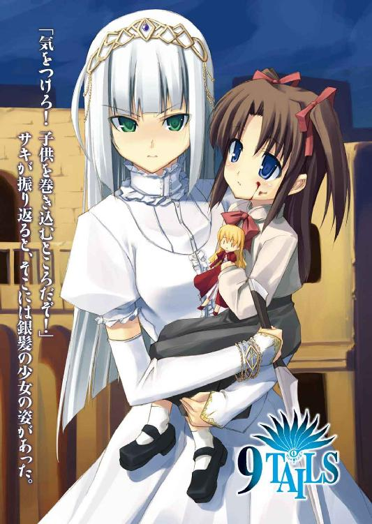
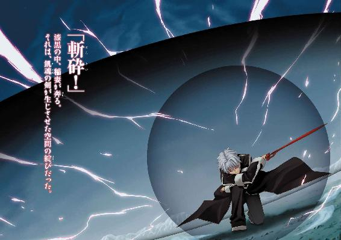
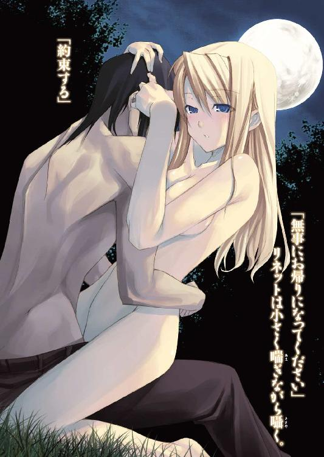
9 TAILS II
─ナイン・テイルズ 聖巫女の預言─
南房秀久

富士見ファンタジア文庫
本作品の全部または一部を無断で複製、転載、配信、送信したり、ホームページ上に転載することを禁止します。また、本作品の内容を無断で改変、改ざん等を行うことも禁止します。
本作品購入時にご承諾いただいた規約により、有償・無償にかかわらず本作品を第三者に譲渡することはできません。
本作品を示すサムネイルなどのイメージ画像は、再ダウンロード時に予告なく変更される場合があります。
本作品は縦書きでレイアウトされています。
また、ご覧になるリーディングシステムにより、表示の差が認められることがあります。
口絵・本文イラスト シンゴ
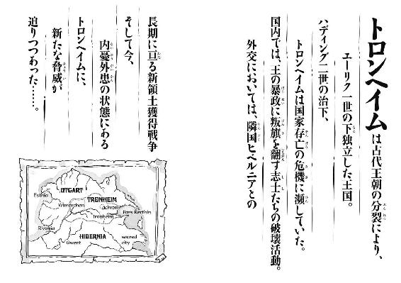
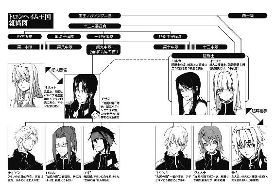
トロンヘイム史
紀元前二千年頃 邪妖との遭遇の最古の記録
１年 古代王朝、トロンヘイム、ウートガルト、ヒベルニアの三つの王国に分裂。
同年、ヒベルニア初代女王ヘルミントルーダ、幻視による預言を残す。
２７年 ヒベルニア王国、神権政治を宣言。神聖王国を自称、奴隷制を廃する。
５８年 錬金術師スタルカテル、紋章を発明。
１３２年 十二人委員会創設。
２２９年 カモラク一世、南方自由都市連合へ遠征。
２５６年 レグネル一世、闇隊士の里の民に血針の儀を施す。
３９０年 賢人王シガル、現在の場所に遷都。
４７７年 ウートガルト、共和制へ移行。
５２３年 豪胆王カモラク五世即位。
５４４年 アラン・シーヴァルド・トロンヘイム誕生。
５５１年 ディープスガッセのサキ、誕生。
５５２年 ウートガルトとの国境争い、起こる。
５５４年 アラン、退魔の儀を受ける。
同年、カモラク五世崩御。
５５５年 ハディング二世即位。アラン、ヴァイマーヘン大公に。
同年、ディアン、及びロレル、王都守備隊第九中隊入隊。
５５８年 アラン、王都守備隊第九中隊隊長就任。
同年、ヴィスナ、入隊。
同年、ヒベルニアとの新領土獲得戦争勃発。
同年、ウートガルトとの中立条約締結。
５６０年 アギ、トリスト、入隊。
同年、豪商ダーレン・ハザン地下潜伏。
５６４年 サキ、入隊。
５６５年 紅睡蓮亭事件。
同日、貧民窟で大規模倒壊事故。
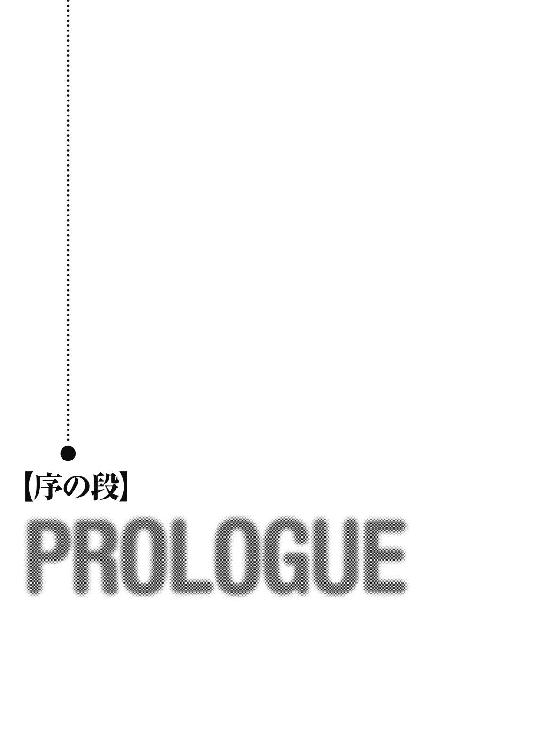
ズチャッ！
鮮血が飛び散り、街路の石畳を赤く染めた。
「いやあああああっ！」
狭く蛇行する通りに響き渡る、断末魔の悲鳴。
少し前まで市民が長閑に談笑していた朝の風景は、突如、陰惨な殺戮の場と化していた。
幼い少年に伸しかかり、牙で引き裂いていたのは、異形の黒い生き物。
ヤマアラシのような剛毛と、膿の混じった緑の粘液が、その身体を覆っている。
その猿と狼を掛け合わせたかのような醜い顔に光る、黄色い三つの目。
見る者に嫌悪感と恐怖を抱かせずにはおかない、異形の怪物である。
すぐそばの血溜まりには、腹を割かれ、腸を引きずり出された無残な女性の姿。
まだかすかに手足を痙攣させているその女性の傍らには、もうひとり、少女の姿が見える。
何が起こっているのか、理解できないのだろう。
赤い服の人形を抱いた少女は、茫然自失の表情で顔を血に染め、石畳の上に座り込んでいる。
「こんなことって......」
少女を救いに怪物に近づくこともできず、かといってこの場から逃げ去ることもできずに嘆きの声を上げるのは、この界隈の住民たちだ。
彼らがみな一様に信じられないといった面持ちなのは、怪物がほんの少し前まで、人好きのする彼らの隣人だったからである。
「どうして！ どうして、あのバートルフさんが⁉」
「自分の奥さんと子供たちを⁉」
今や異形の化け物となったバートルフをよく知る人々は、それぞれ、寄せ集めの武器を手に取りながら、自分の身内を避難させる。
「誰か、何とかしてあげて！」
バートルフ夫人と仲のよかった主婦が、夫にこの場から引き離されながら、声を震わせて訴えた。
「こんなことが一体、何回起きればいいんだ⁉」
「守備隊は⁉ 王都守備隊に連絡は⁉」
「呼びに行かせた！ ......けど」
怪物を遠巻きにする人たちの間に、重苦しい空気が漂う。
このセルペント通りの住人は、決して裕福とは言えない人々。
街の治安を受け持つ王都守備隊としても、最優先で守るべき市民ではない。
どこか他の、もっと裕福な人々が住む界隈で盗難事件でもあれば、まずそちらに守備隊員は向かうのが常なのだ。
「バートルフ！」
「ああ、やめろ！」
妻を屠り、息子を喰らい尽くし、最後に生き残った娘の方にゆっくりと近づいてゆく怪物。
そのおぞましい姿に、隣人たちは顔を背ける。
と、そこに。
「王都守備隊だ」
怪物を取り巻く人々を搔き分けるようにして、黒い外套をまとった少年が姿を現わした。
澄みきった菫色の瞳に、山吹色の髪。
まだ十代半ばだろう。
顔には幼さを残しながらも、甲外套と呼ばれる漆黒の制服の襟には、正規の隊士である証の襟章がある。
「状況は？」
周囲の男たちを見渡し、冷たささえ感じられる落ち着いた声で少年隊士は尋ねる。
「それが......」
「家で仕事をしていたバートルフが、いきなり化け物になって......」
「じ、自分の家族を襲ったんだ！」
「頼む！ 一番下の娘だけでも助けてやってくれ！」
守備隊士の到着にホッとした近隣の住民は、口々に説明した。
「またか？」
眉をひそめる少年。
このところ、トロンヘイムの国内では、奇妙な事件が続発していた。
真夜中に荒野を走る、亡霊騎士の目撃譚。
角と蹄がある子供を産んだという女の話。
そして、巨大な竜が現われ、国境近くの村の幾つかを焼き払ったという噂。
この王都でも、ごく普通の市民が突然、怪物に変身し、人々を襲う事件が続いているのだ。
「ようやく叛乱志士たちが大人しくなったと思ったら、今度は怪物騒ぎ。まったく、この街は退屈しないな」
少年は呟き、外套を翻して怪物の前に出る。
怪物はその気配に、娘から手を離して振り返った。
「......巻き込まれて死にたくなかったら、できるだけ遠くに下がってるんだね」
背後の市民たちにそう警告すると、少年は剣を抜いた。
赤い血の色に不気味に光る、禍々しいその剣身。
この剣こそ、かつてヴァイマーヘン大公アランが七十二柱の邪妖神を封じたと言われる、飢魂の剣。
そして、飢魂の剣を現在所有するこの少年が、〝紅睡蓮〟亭の戦いで数多くの叛乱志士を斬り、その名を轟かせた、王都第九警備隊、通称〝九尾の猫〟の一番若い隊士。
志士どもから狂犬と呼ばれて恐れられる、ディープスガッセのサキなのだ。
グルルルルッ！
怪物は飢魂の剣を目にすると、金色の瞳孔をカッと開き、不気味な唸り声を上げた。
血腥い息とともに、反芻していた人肉がその口から零れ落ちる。
普通の人間なら吐き気を覚えるこの光景に、サキはわずかに微笑む。
次の瞬間。
バッ！
怪物は、石畳を蹴ってサキの間合いに飛び込み、その腕を食い千切ろうとしていた。
ガキッ！
間一髪のところで、飢魂の剣が牙を受け止める。
「上等、なかなかやる！」
ビュッ！
姿勢を低くしての薙ぎ払い。
剣圧で巻き起こる突風が、周囲のものを吹き飛ばす。
すぐ近くに生き残りの少女がいることなど、お構い無しの反撃である。
だが、怪物はその巨体からは想像もできない身軽さでこれをかわすと、そのままサキの頭を跳び越した。
怪物はさらに、爪で石畳を削るようにして方向転換すると、サキに向かって頭から突っ込んでゆく。
「甲外套！」
黒い外套を翻し、反転して突進を正面から受け止めるサキ。
ガッ！
黒鋼女郎蜘蛛の糸を織り込んだ甲外套は、戦斧の一撃にさえ耐える防御力を誇るが、それでもかなりの衝撃がサキを襲った。
「！」
後退りながらも、辛うじて倒れずに踏みとどまるサキ。
怪物は一旦下がると、もう一度勢いをつけてサキに襲いかかろうとする。
と、その時。
「サキッ！」
ビュンという風を切る音とともに、投げナイフがサキの耳元をかすめて、怪物の右肩口に突き刺さった。
ギギギギッ！
怪物は牙を軋らせながら突進の方向を変えると、民家の壁に鋭い爪で張りつき、投げナイフが飛んできた方向に血走った黄色い目を向ける。
「......気をつけろ！ 子供を巻き込むところだぞ！」
背後で声。
サキが振り返ると、そこには、バートルフの娘を抱き上げる銀髪の少女の姿があった。
「イーファ、その格好？」
眉をひそめるサキ。
当然の反応である。
少女の出で立ちは、この阿鼻叫喚の現場に全くそぐわない、白い絹のドレスに金の髪飾りといったものだったのだ。
「こ、これは、連絡を受けたのが......何でもない！」
頰を紅潮させた銀髪の少女は、バートルフの娘を左手に抱いたまま、小剣を抜いて逆手に構える。
「こちらもいろいろと忙しいのだ、後で説明する！」
一方。
ガリガリガリッ！
サキとイーファが言葉を交わしている間に、怪物は壁を爪で這い登り、二階建ての民家の屋根に達していた。
ギシャアアアアアアッ！
怪物は首を捻じ曲げてサキたちの方を睨み、耳障りな咆哮を上げる。
「手強い相手か？」
身体を小刻みに震わせるバートルフの娘をしっかりと抱きしめ、イーファはサキに尋ねた。
「ま、ここ半月ほどの間に僕らの管轄に出現した化け物どもの中じゃ、一番速いかもね。けど......」
サキは不敵に微笑むと、民家の脇に積んであった薪の山を足場にして怪物と同じ屋根に飛び乗る。
「速度なら、こっちも負けちゃいない！」
スレート瓦の上を滑るようにして距離を詰めたサキは、斜め下からの払い上げで怪物の喉を狙った。
グルルルルッ！
背を大きく反らした怪物はサキめがけて両腕を振り下ろし、鋭い爪でサキを引き裂こうとする。
ガッ！
ザシュッ！
飢魂の剣が怪物の分厚い皮革に弾かれると同時に、怪物の爪が甲外套を捉える。
一瞬後。
バキバキッ！
ひとりと一匹の重みに耐えかねた屋根が崩れ、サキと怪物は民家の中に落下した。
「サキ！」
叫ぶイーファ。
もつれ合うサキと怪物は、二階の床で一度弾むと、そのままその床を突き破り、一階の居間兼食堂まで落下する。
ドスッ！
調度品の大型テーブルで背中を打ちつけたサキは、回転しながら素早く起き上がると、壁際まで移動した。
怪物の方は身体を捻って脚から着地し、サキとの間合いを測る。
「ほんと、楽しいね」
弩さえ防ぐと言われる甲外套が切り裂かれたのを見て、ニヤリとするサキ。
「サキ、無事か⁉」
抱いていた娘を近所の住民に預けたイーファが、サキたちを追って民家に駆け込んでくる。
ガルルルルルッ！
サキに飛びかかろうとしていた怪物は突然方向を変え、イーファを狙った。
ズシュッ！
「くっ！」
鈍い音とともに飛び散る鮮血。
イーファの手首が半分吹き飛び、小剣が弧を描いて部屋の壁に突き立った。
「イーファ！」
「大丈夫だ！ 知っているだろう！」
イーファは扉のそばまで後退し、左手で壁に刺さった小剣を抜く。
グルルルッ！
利き腕の指二本を失ったイーファの手から多量の赤い血が滴り落ち、床板を染めた。
その臭いに興奮した怪物は、涎を垂らしながらイーファとの距離を詰める。
「しょうがないな。とっとと片をつけるか」
サキは剣を水平に構えて、意識を集中した。
「......我が身に宿りし、闇の力よ！ 血と苦悶と悲嘆に飢えし、悪しき存在よ！ 我......汝を解放す！」
狭い室内に響き渡るサキの声。
すると、その声に応えるかのように、部屋の中の空気が震え、仄かな紫色の光を帯びた疾風の渦となって、サキを包み込んだ。
光は次第に輝きと赤みを増してゆき、やがて、サキの身体は緋色の衣をまとったかのようになる。
銀色に逆立つ髪。
炎を帯びる瞳。
温厚そうに見えた表情が邪悪さの漂う顔つきに変わり、それに呼応するかのように飢魂の剣が濡れ血色に脈打つ。
そして。
『......久しいな』
古代語に近い抑揚を持つ女性の声が、瞳を開いたサキの口から発せられた。
普段はサキの中で眠っている、サキ自身とはまったく別の意思。
邪妖と呼ばれ、闇に跋扈する異形の存在。
その中でも絶対最強の存在である、三柱の至高邪妖のうちの一柱が、この内なる声の主だ。
「退屈していたろ？ 手を貸しなよ」
ニヤリと口元に笑みを浮かべたサキは、自分の心の中に巣食う声に語りかけた。
『ふふ、相変わらず態度の大きい。まあ、良かろう』
内なる声が応えると、緋の風の衣がいっそう輝きを増す。
「行く！」
サキは頷くと、床を蹴って怪物に斬りかかった。
ギュン！
先ほどまでとは、比べ物にならないくらいの剣速。
空気を切り裂く光の軌跡が空間を歪ませ、陽炎のように周囲の景色が揺らいで見えるほどだ。
ギシャアアアアアアッ！
振り返り様に跳躍し、サキの喉笛に喰らいつこうとする怪物。
だが、炎色に変貌を遂げたサキの瞳には、その動きはまるで静止しているかのように映っていた。
ズシュン！
サキの身体の回転とともに、左斜め上方に向けて弧を描いた白刃が、怪物の腕を斬り飛ばす。
さらに、怪物の腹を蹴り上げるサキ。
ドガッ！
怪物は身を捩り、腕の傷口から血を撒き散らしながら、穴の開いた天井近くまで撥ね上げられる。
「......あの巨体を？ 信じられない」
かなりの重さがあるはずの怪物が宙を舞うのを見て、呟くイーファ。
「これで決める！」
サキは怪物に向かって跳び、空中で半回転して天井を蹴った。
「無音の剣！」
前傾姿勢から、音よりも速い一撃を奔らせる必殺の剣技。
翻った剣が一瞬、間近で見ていたイーファの視界から消えたかと思うと、怪物の首に赤い水平の線が現われる。
そして。
ドサッ！
首はその線に沿って横に滑り落ち、鈍い音を立ててイーファの足元に転がった。
だが、怪物の身体の方は、そのまま床に着地し、何事もなかったかのように、同時に着地したサキを振り返る。
「まだ動けるのか⁉」
身構えるイーファ。
一瞬後。
切断された首の断面から覗く気管がヒュウという音を漏らすと、怪物の身体はそのままドウッと横に倒れ、ようやく動きを止めた。
「......イーファ、手は？」
血振いをした剣を鞘に収めたサキは、少女の方を見る。
「大丈夫だ。......もう、回復している」
イーファは、指を削ぎ落とされたはずの右手を振った。
傷口は塞がり、失われたはずの指も、ほぼ元の長さまで生え揃いつつある。
「毎度思うけど、大した能力だね」
感心するサキ。
イーファは、不死とも言える驚異的な回復力の持ち主なのだ。
「......足、引っ張ったか？」
バツの悪そうな表情を見せるイーファ。
「でもない。......こいつ、思ったよりも楽しめたな」
サキは怪物の屍骸を爪先で蹴った。
屍骸はゆっくりと、人間の姿に戻りつつある。
今までの例でも、怪物に変容を遂げた人間は、死とともに元の姿に戻るようだ。
『......小僧』
内なる声が、サキに語りかける。
『こやつからは、かすかに我が眷属の臭いがする』
「邪妖の？」
サキは眉をひそめた。
「もしかして、この男に憑りついたのは......？」
『卑妖の類よ。今はもう、憑依いてはおらぬがな』
と、声。
「どうしてそんなことを？」
疑念の表情を浮かべたイーファが、声に尋ねる。
『知らぬな。わらわとて、眷族のすべての動向を把握している訳ではない。......もっとも』
声は冷ややかな調子で返す。
『わらわの言葉を信じるか否かは、おぬしらの自由だが？』
「......サキ、行こう。任務は完了した」
イーファはこれには答えず、小剣を鞘に収めながらサキに向かって告げた。
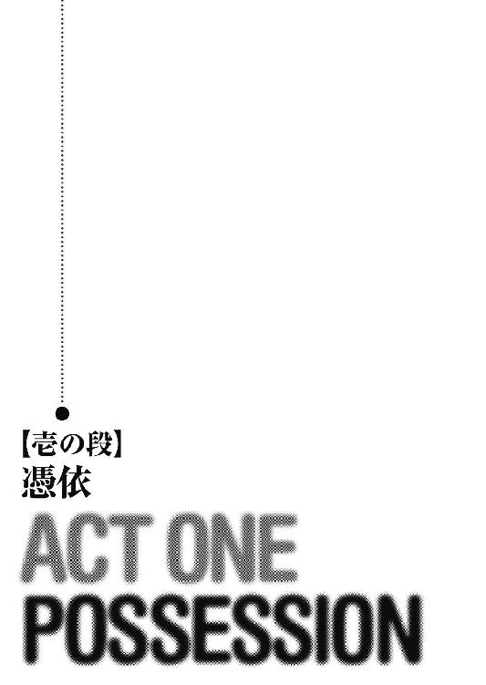
「一体何なんだ、あの連中の態度ときたら！」
報告のため、守備隊の詰め所に戻る途中。
「さっきまで助けてくれとすがりついてきていた連中が、怪物を斃したことを告げた途端、まるで血に飢えた人殺しを見るような目で私たちを見て！」
イーファは憤懣やるかたない表情で、吐き捨てるように言った。
「あの男を何も殺すことはなかった、私たちの落ち度だ、なんて言い出すなんて！」
「そういうもんだって、この仕事は。気にしない、気にしない」
肩を並べて歩くサキは、頭の後ろで手を組む。
「守備隊はもともと嫌われ者なんだよ。誰かに感謝されたことなんて、ほとんどないし」
「そもそも、どうして私がこんな仕事をしなければならないんだ。街の治安維持は、闇隊士の仕事ではないのに」
こぼすイーファ。
イーファは、サキのような正規の守備隊士ではない。
闇隊士と呼ばれる、国王、及び王都の行政執行機関である十二人委員会直属の特務機関の一員なのだ。
暗殺、諜報活動などの非合法的な任務を、その都度報酬を受け取って行なうのが、彼女たち闇隊士本来の仕事。
だが、第九中隊〝九尾の猫〟の隊長、アラン・シーヴァルドは、王の甥であり、ヴァイマーヘン大公として十二人委員会の委員を務めている。
今回、イーファがサキと組んでいるのも、闇隊士の長を通してのアランの命令だ。
「仕方ないさ。九尾の猫は、慢性的な人手不足なんだから」
と、サキ。
九尾の猫だけでなく、王都守備隊はどこも本来いるべき隊士の数を満たしていない。
ほとんどの隊が中隊を名乗りつつ、実際の規模は小隊程度なのだ。
「先月、新人隊士が入っただろう？ 三人も」
口を尖らせるイーファ。
「だから、その連中が使い物になるように鍛えるんで、ヴィスナとロレルが付きっきりで面倒見てるんだ。で、結局、いつもよりも人手が足りない状況になってる訳」
「......確かに、九尾の猫で人に物を教えられそうなのは、あの二人ぐらいのものだな」
イーファは渋々認めた。
ヴィスナというのは、素面でいる限りは面倒見のとてもいい、九尾の猫の紅一点。
ロレルは士官学校出でありながら剣の腕も立つ、九尾の猫の参謀格である。
「じゃあ、そろそろ聞こうか？」
詰め所に近い広場まで来たところで、サキはイーファの顔を覗き込んだ。
「......な、何を？」
警戒の表情を浮かべるイーファ。
「その格好の理由さ」
サキは視線で純白の、いや、戦いの前までは純白だったドレスを示す。
「こ、これは......」
ニヤニヤ笑うサキから後退りながら、イーファは袖口のところの裂け目に気がつく。
「ああ、破れてる！」
イーファはガックリと肩を落とした。
「......ヨルカに叱られる」
ヨルカというのは、闇隊士の長。
イーファにとっては、姉のような存在である。
「いや、普通破れるよ。そんなもん着て戦ったら」
「稽古の途中だったんだ！ ......舞の」
何とか誤魔化せないものかと、裂け目を確かめるイーファ。
「いや、いろいろと勉強しなくてはいけないことが多くて......疲れる」
闇隊士のほとんどは女性であり、粋蜜楼という遊郭に所属する娼婦という別の顔を持っている。
別の顔とは言っても、遊郭での営みは重要な闇隊士の諜報活動のひとつ。
抱いた娼婦を相手に、得意満面の表情で国家や組織の秘密を漏らす愚かな男どもが跡を絶たないからだ。
もちろん、イーファも娼婦だが、まだ見習いの段階で、今のところお客を取った経験はない。
「へえ、例えば？」
尋ねるサキ。
「まずは、今日みたいに歌舞音曲の類だな。それに語学と、古典文学の暗誦に政治の話。あとは......ええと」
イーファはほんの少し、眉間にしわを寄せる。
「......れ、礼儀作法」
「いや、そんなに心底、嫌そうな顔して言われても......」
「苦手だ」
「へえ、意外。普段の偉そうな言葉遣いからすると、そういうのに煩い方だと思った」
「......君は一体、私のことをどう見ているんだ？」
「横柄な田舎者」
サキは、生まれも育ちもこの王都。
対するイーファは、ここからかなり離れた小さな里の出身である。
「もういい！」
「それに、からかうと面白い子ってとこかな？」
「ああ、ヨルカ。どうして私をこんなヤツと組ませたんだ......」
イーファは青空を仰いで嘆く。
「それはヨルカさん自身がディアンと組みたいからじゃない？ つまり僕ら、余り者って訳」
「まったくだ。本当なら、君はディアンの相棒のはずなのに。それを......」
「でも、本当は僕と組んでて、楽しいでしょ？」
「め、命令でなければ、誰が君となんぞ組むものか！」
「あ、その言い方、傷つくなあ」
サキは全然傷ついてない様子で笑い、それからちょっと真面目な表情になって尋ねた。
「......ところでさ、〝猫〟に副官が来るって話がしばらく前からあるんだけど、君、ヨルカさんあたりから聞いていない？」
「さあ？」
イーファは首を傾げる。
「副官になるとすれば、ディアンかロレルさんだろう？」
「どうも、そうじゃないみたいでさ」
サキは詰め所の前まで来ると、扉を開けた。
「どうする？ 寄って、たいして旨くもないお茶でも飲んでく？」
「いや、いい。すぐに粋蜜楼に戻ってこの服を繕わないと」
イーファはため息を漏らす。
「ご苦労様。じゃ、報告は僕がしとくね」
「頼む」
「ああと、それから......」
粋蜜楼に向かおうとするイーファの背中に、サキは声をかけた。
「その服、似合ってるよ」
ガンッ！
イーファは道端の石を拾い上げ、サキが閉めた扉に思いっ切り投げつけた。
＊ ＊ ＊
同じ頃。
大剣を背負い、黒の甲外套をまとったひとりの青年が、ヴァイマーヘン大公アランの邸宅を訪ねていた。
精悍な顔つきながら、瞳に優しさを湛えた青年は、屋敷のすべてを取り仕切る家令の出迎えを受けて、広い庭に通される。
すると。
「......先日のダーレン・ハザンよりの情報、裏が取れました。聖女王は三日前に聖王都を発ち、今月末にはグウェントに到着する予定です」
耳慣れた声が、池の畔にある東屋の方から聞こえてきた。
青年は林を抜けてそちらに向かうと、アランと話している先客の後ろ姿に声をかける。
「ヨルカ」
「あら、ディアン？」
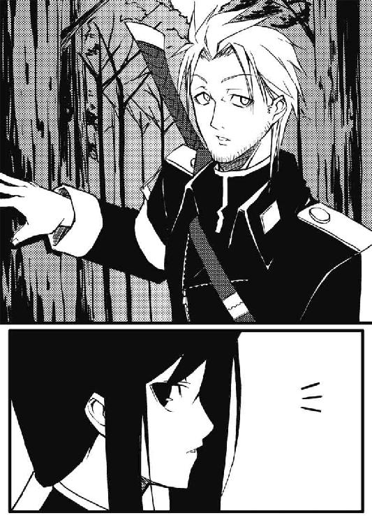
振り向いたのは、黒髪の妖艶な女性。
ディアンと呼ばれた青年より、やや年上で、胸の部分が広く開いたドレスをまとっている。
典型的な娼婦の衣装だ。
ディアンは、ヨルカに向かい合うように座るアランに先に頭を下げてから、彼女に声をかけた。
「ここで何をしてる？」
「お仕事よ。隊長と浮気でもしてると思った？」
と、傷ついたような口調で、悪戯っぽい笑顔を見せるヨルカ。
「この前、隊長やサキくんが大物志士のハザンを斃した時に、手に入れた情報があったでしょう？」
「ああ、ヒベルニア神聖王国の女王が聖王都を離れ、行幸に出るという話だな」
うなずくディアン。
ここ、トロンヘイム王国は、北をウートガルト共和国、南をヒベルニア神聖王国に挟まれている。
トロンヘイムは、十二人委員会と呼ばれる少数貴族の諮問機関を持つ、封建的な王制。
ウートガルトは、全貴族による議会と、そこから選出された総督により国家が運営される共和制。
ヒベルニアは、巫術と呼ばれる魔法を使う神官が支配する、絶対的な神権制。
歴史的には、ひとつの古代王朝から発祥しているこの三国は、それぞれ異なる政治体制の下、常に大陸の覇権を争ってきた。
時には二国が同盟し、残りの一国を攻めることもあれば、三国が互いに争うことも珍しくはない。
今現在、トロンヘイムは、ウートガルト共和国とは良好な関係を維持しているが、ヒベルニア神聖王国とは、七年以上の長きに亘る国境争いが続いている。
仕掛けたのは、豪胆王カモラク五世の後を継いだ、現国王ハディング二世。
ハディングは突如、南の国境を越えてヒベルニアに侵攻すると、国境周辺の村々を焼き、大量殺戮を行なったのである。
これに対し、ヒベルニアは急遽、国境のキラウルス山中に砦を築き、侵攻軍の退路を断ってこれを殲滅。
以来、侵攻を繰り返しては押し戻されるという形で、トロンヘイムの劣勢が続いていた。
国内では、叛乱志士と呼ばれるハディング打倒を唱える勢力の台頭もあり、トロンヘイムはまさに内憂外患の状態にあったのだ。
「目的地は、確かグウェントだったか？」
ディアンは、ヒベルニア西部の小都市の名を上げた。
「ええ。そこで、聖女王の身柄をこちらで押さえることができれば......」
「ヒベルニアは精神的支柱を失い、このところ圧され気味だった戦況は一気に逆転する」
「長かった戦争を、終わらせることができるかも知れないわ」
ヨルカはうなずいてから、アランとの話を続ける。
「グウェント滞在の期間は？」
と、アランが尋ねる。
「潜入させていた密偵の報告によると、来月の半ばから一月近くの予定です。今から追っても、十分に女王を拉致する機会はあります。国王陛下に、この策を上申する価値はあるかと」
「......考えておこう」
アランはそう答えると、今度はディアンの方を向く。
「で、そちらは何の報告だ？」
「あっと、街中で続発している、例の変異事件の件です」
ディアンは頭を搔きながら進み出た。
サキからも堅物とからかわれるディアンだが、アランの前ではそれほど鯱張っているように見えない。
儀礼を介する必要のない、隊長と一隊士という立場を超えた信頼関係が二人の間には存在するのだ。
「最初の頃は、変異してもその姿を長く保つことができずに、勝手に溶けて死んでしまうのがほとんどでしたが......」
「最近のものはそうでもない、と？」
「ええ。変異時間は長く、その上、手強くなっています。第六中隊では昨日の深夜に変異した化け物を退治する際に、二名の犠牲者を出しました」
眉をひそめるディアン。
「市民の間では、変異事件はヒベルニアの巫術師が密かに王都に入り込んで、魔法を使っているからだという噂があって、それで......」
「......リネットのことを心配した訳か？」
リネットという名を口にしたアランは、わずかに目を細めた。
そこに。
「わたしなら大丈夫ですよ、ディアンさん」
お茶の用意をした少女が姿を現わし、ディアンに微笑みかけた。
「それよりも、お座りになったらいかがです？」
銀に近い金髪と空色の瞳を持った華奢なリネットは、テーブルの上に三人分のカップを並べる。
普段、屋敷の使用人に交じって家事を行なう時には黒と白を基調とした地味な服が多いリネットだが、今日は腰の部分に大きなリボンがついた明るい色調のもので、白い、長めの靴下とよく合っている。
「わたし、ずいぶんお茶を淹れるのがうまくなったんですよ」
「ど、どうも」
長身を不器用に折り曲げて、ヨルカの隣の椅子に座るディアン。
ヨルカはその脇腹を、からかうように小突く。
「わたしがヒベルニアの巫女だったことを知っているのは、アランとみなさんだけですから」
リネットは、カップに薫り高い琥珀色の液体を注いだ。
「それに多分、変身は巫術とは関係がありません」
「......説明してくれるか？」
促すアラン。
「巫術とは、この世界とは別の位相に実体を持つ神々の御影を、この世に映し出すものです。召喚された神は巫術師の祈禱に応え、この世界に何らかの作用をもたらします。召喚の際の祈禱は、かなり目立つ所作を伴うもの。ですが、変異事件の際にそうした振る舞いをした人物の目撃は報告されていませんよね？」
リネットはアランを見る。
「その通りだ」
アランは頷いた。
「巫術師の仕業という噂は、単に長年の戦役によるヒベルニアへの憎悪から生まれたものだろう」
「とすると、一体何が原因で変身を？」
リネットに尋ねるディアン。
「実際にこの目で見ないことには、何とも......」
リネットは少し困ったような顔になる。
と、その時。
ザザザッ！
突然、庭を囲うように植えられている灌木を踏み倒し、三つの影がアランたちの前に飛び出してきた。
武器こそ手にしてはいないが、異様な風体の男たちである。
「刺客⁉」
「叛乱志士の残党か！」
ヨルカがスカートをめくり上げて、太股の内側に留めてあった投げナイフを握り、ディアンが大剣を抜き放つ。
「......いや」
三人の男の顔を見て、アランはかすかに眉をひそめた。
「この辺りで見たことのある顔だ。近くの屋敷の家人だろう」
確かに、だいぶ破れ、血で汚れてはいるが、彼らの着ている服はそう安いものではない。
どこかの大貴族の使用人であることは間違いないだろう。
「ですが」
リネットは指摘した。
「......あの表情、尋常の状態ではありませんね」
口を開いて涎を流し、虚ろな目をした男たちは、足を引き摺るようにしながらアランたちの方に近づいてくる。
「ああ、ここに来るまでに、何人か殺しているな」
丸腰のアランは、ゆっくりと椅子から立ち上がった。
「止まりなさい！」
ヨルカは手にしたナイフを、先頭の男を狙って投げつける。
「！」
ナイフの細身の刃が狙い通り、男の肩に突き刺さった。
「うう......ええええ......」
だが、男は全く痛みを感じないかのように、虚ろな目のまま肩口のナイフを簡単に引き抜いた。
そして。
「ぐるるるるるっ！」
一旦足を止めた男は、人間のものとは思えぬ唸り声を上げ、己の顔を爪で搔き毟りだした。
「な、何？」
当惑するヨルカ。
男の皮膚と脂肪と肉は、いとも簡単に剝がれ、眼球と頭蓋が剝き出しになる。
夥しい血を流しながら、咆哮を上げる男。
他の二人も、同様に自分の皮膚に爪を突き立てる。
男たちの全身の皮膚が裂けて剝がれると、その肉が溶けて沸騰し、何か別の組織が形成されてゆく。
「......う！」
吐き気を覚え、思わず口に手をやるヨルカ。
「あれが......変異か？」
ディアンも息を吞む。
アランやリネットだけでなく、実際にその場を目の当たりにするのは、ディアンたちも初めてのことだ。
「あれ、ですか？」
目を細めるリネットは、冷静につぶやく。
「こんなにすぐに観察する機会が巡ってくるとは......どうやら、わたしたちはついているようですね」
「なるほど醜悪な」
アランは皮肉な笑みを浮かべる。
「ギギギギギィ！」
変異を遂げた異形の者たちは、三方に分かれ、正面と左右からアランたちに襲いかかろうと、再びゆっくりと間合いを詰め始めた。
正面の怪物は、鞭のような長い舌と巨大な黄金の目を持ち、干涸びた灰色の身体を捩らせて近づいてくる。
右の怪物は、大蛇の下半身にカタツムリの殻、それに蠅の頭をつけたような姿。
左から来る化け物は、鱗に覆われた烏賊のようだが、その触手の一本一本が百足になっている。
どれも、サキたちが遭遇したものとは全く違う姿だ。
「リネット、あれを見て何が言える？」
アランは尋ねる。
「もとは人間のようですが、恐らく、邪妖が憑依いて変容したものかと」
邪妖とは、古より伝え恐れられ続ける、定まった姿を持たぬ怪物たちのこと。
人の怨念をその糧とすると言われる彼らは、本来、闇に跳梁跋扈する存在であり、日中にこうして現われることは珍しい。
「人間に戻す方法は？」
と、アラン。
「残念ですが......」
リネットは頭を振った。
「隊長！ リネットを連れて下がってください！ ここは俺とヨルカで！」
ディアンはアランたちの前に出て、大剣を中段に構える。
しかし。
「わたしたちのことなら、お気遣いなく」
リネットは微笑み、すっとディアンの真横に立った。
「ディアンさんとヨルカさんは、右の憑依者を」
「な！」
言葉を失うディアン。
その隙を突いて、金色の目玉を持った怪物がリネットを襲う。
「アールヒル・シャダイ！」
リネットは手のひらを立てて両腕をすっと前に出すと、目を閉じ、ヒベルニアの古語で何かを唱え始めた。
「アールヒル・イフィル・セ・ミブラ・ティール・ウル・ヒベルニウム！」
舞に似た所作とともに、詠唱を続けるリネット。
「ア・ナヴン・ウル・リネタ・セ・サンヤーナ・ヴェイテイユ・ハザック・ディーン・シアン・オカール・ボーゼッド・ザール！」
「ギギギッ！」
リネットに飛びかかろうと飛翔した化け物は、そのまま空中で動きを止めた。
まるで見えない巨大な手につかまれたかのように、化け物はもがき、奇妙な形に身体を捻らせると、やがて、真っ二つに千切れて芝生の上に落ちる。
怪物の鮮血を浴びて、一瞬、浮かび上がる胎児のような姿。
だが、それもリネットが腕を下ろすと、空気に溶け込むようにして姿を消した。
「......わたし、これでも巫女の端くれですから」
リネットはアランを振り返ると、悪戯を見つかった子供のように肩をすくめる。
「やれやれ、これでは私も遊んではいられぬな」
アランはふっと笑うと、右手を掲げた。
「剣を！」
「はい。そろそろお呼びかと」
どこに控えていたのか、屋敷の老家令が、見事な装飾の施された鞘に収まった剣を携えて姿を現わすと、恭しい物腰でそれを抜き、アランに向けて放った。
「そもそもこの宝剣はですな、カモラク一世陛下が南方自由都市連合遠征の際に......」
ピンと背筋を伸ばした姿勢で、剣の歴史を語り出す家令。
「由来は後でゆっくりと聞こう」
アランは回転しながら飛んでくる剣の柄を振り向きもせずに後ろ手でつかむと、そのまま、白刃を烏賊に似た化け物に叩き下ろす。
内臓と青い血を飛び散らせながら、それでも百足のような触手でアランを捉えようとする怪物。
「......滅せよ」
アランは怪物の頭から引き抜いた剣を、今度は真横に一閃させる。
怪物は吹き飛び、地面に叩きつけられて四散した。
一方。
「ヨルカ！」
「分かってる！」
ディアンとヨルカは残り一匹になった怪物の左右に回り込むと、同時に怪物の胴と頭を薙いだ。
蠅のような頭を刎ねられながらも、身体の殻に開いた孔から毒液のようなものを飛ばす怪物。
「甲外套！」
黒い外套を靡かせて、これを避けるディアン。
毒液がその表面に付着し、シュウシュウと音を立てて白煙を上げる。
「この！」
ヨルカが毒液の雨を搔い潜りながら、蛇のような尾の部分を小剣で切り裂いた。
「くたばれ！」
ほぼ同時に渦巻状の殻を砕く、ディアンの大剣。
怪物はようやく、その動きを止める。
「おやおや、庭の掃除が大変ですな」
怪物たちの残骸と体液が飛び散った芝生を見渡して、家令はため息をついた。
「......ねえ、リネット？」
血振いをした小剣を鞘に戻しながら、ヨルカは尋ねる。
「はい？」
「さっき、邪妖が憑依いて怪物になったんだって言ったよね？ それってつまり、誰でも怪物になり得るってこと？」
「......恐らくは」
目を伏せるリネット。
「何てこと」
ヨルカは額の汗を拭った。
「......この界隈に、それも、三人まとめて変身者が出るのは初めてだな」
人間の姿に戻ってゆく怪物の残骸を見ながら、ディアンはつぶやく。
「こいつら、狙いは隊長か？」
「その可能性はあります」
リネットはうなずく。
「〝調停者〟が覚醒する前に葬ろうと目論む邪妖が存在しても、おかしくはありません。邪妖とは、世界を滅びに導くためだけに誕生した存在なのですから」
「〝調停者〟？」
初めて聞く言葉に、眉を顰めるディアン。
「そう言えば......」
今度はリネットがヨルカに尋ねた。
「サキ少年の様子に変化は？」
「今のところ、何も変わったところはないみたいよ。イーファからの話を聞く限りでは」
「そうですか」
小さなこぶしを口元に持って行くリネット。
「......では、引き続き、彼から目を離さないでください」
「おい、待て。お前、イーファにサキを監視させていたのか？」
ヨルカに目を遣り、顔をしかめるディアン。
「ええ」
ヨルカは認めた。
「あなたをサキから引き離したのも、そのためよ。あなたは真正直だし、サキくんを信頼してるから、彼の監視役には向いていないもの」
「よくイーファが引き受けたな」
「イーファ自身も、自分が監視役だとは知らないわ。私は、あの子をサキと組ませ、その日にあったことを逐一報告させているだけ」
「......リネット、確かにサキは以前、志士どもに雇われて隊長を狙ったことがある」
ディアンは巫女の少女を振り返った。
「けれど、今は九尾の猫のれっきとした一員だ。裏切りはしない」
「......そういうことではないのです」
リネットは悲しげに頭を振った。
「人の思惑や絆を超えた運命が、アランとサキ少年の間には存在するのです」
「思惑や絆を超えた......運命？」
「その話は別の機会にしよう」
アランが遮るように言った。
「ヨルカ、闇隊士は引き続き、ヒベルニア女王のグウェント訪問についての情報収集に当たれ」
「御意。報酬は規定通りで？」
と、抜け目のないところを見せるヨルカ。
「入手した情報によっては上乗せする」
「流石は大公様」
ヨルカは微笑み、ディアンにウインクしてから姿を消した。
「九尾の猫は」
アランは続いて、ディアンの方を振り返る。
「通常の治安維持活動を続けろ。叛乱志士の残党と、邪妖の動きに特に注意を払え」
「......了解」
ディアンは当たり障りのない指示に多少不満を覚えながらも、アランの命令に敬礼で応じた。
＊ ＊ ＊
その夜。
「......で」
敷物の上に脚を揃えて座り、拙いリュートを爪弾きながら、イーファはワナワナと肩を震わせていた。
「どうして非番になるたびに、うちの〝見世〟に来るんだ、君は⁉」
「付き合いだよ、付き合い」
サキは蜂蜜酒の杯を傾けながら、イーファに向かって微笑んだ。
ここは、街の中心部に近い繁華街にある遊郭、粋蜜楼の一室。
ヨルカの経営する粋蜜楼は、街で最も大きな遊郭であると同時に、闇隊士の根城になっている。
さらに、叛乱志士や大物貴族、外国の使節なども訪れる、格好の情報収集の場でもあるのだ。
「まったく。起きている時間のほとんどを、君と過ごしている気がする」
イーファはリュートの音程を外しながら、ブツブツと文句を言う。
「寝ている時間も一緒にする？」
と、サキ。
「......次にその手の質の悪い冗談を口にしたら、命がないと思え！」
イーファの声が裏返り、リュートの弦がビンッと音を立てて切れた。
「ああ、もう！」
「イーファ」
ディアンを膝枕していたヨルカが、少女に語りかける。
「駄目よ、お客様に対してそんな話し方をしては」
声は優しいが、目は笑っていない。
「うう、......はい」
イーファは耳を真っ赤にしながら、不承不承頷いた。
「けどさ、珍しいよね？」
サキは振り返って、浅黒い顔をした目つきの鋭い若者と、彼と一緒に飲んでいる金髪の青年の方を見る。
「アギやトリストが、僕らと吞むのって」
「このド阿呆に、無理矢理引っ張ってこられたんだ」
元盗賊で、アランに命を救われて入隊したアギは、サキをじろりと睨んでから、親指で隣のトリストを指さした。
「でなきゃ、誰がお前みてえなガキと飲むかよ」
「はははは。僕の方はさ、いわゆる大人の事情ってヤツ？」
二刀流の名手として知られる、金髪の人懐っこそうな青年は、笑って頭を搔く。
「要するに、あっちこっちで女に手を出したもんで、街中のオネーチャンのいる見世から締め出し食ったんでしょ？」
葡萄酒の瓶を抱きしめたまま、妙に据わった目でトリストを睨みつけるのは、九尾の猫の紅一点、ヴィスナである。
「こんの、女の敵がっ！」
ヴィスナは手近にあった真鍮の杯を、いきなりトリストの頭めがけて投げつけた。
ゴガッ！
杯をまともに額で受けたトリストは、白目を剝いてひっくり返る。
「......みなさん、いいですか。ここの払いは経費扱いになりませんから、隊費からは出ませんよ。あくまで、各自で負担してもらいますからね」
隊の会計方を務めるロレルが、眼鏡を押し上げながら今夜何度目かの確認を取った。
「私は立て替えておくだけですよ、分かってますよね？」
もちろん、猫の面々は聞く耳を持たない。
「ところで、新人の訓練の方はどうだ？」
ディアンはロレルに尋ねた。
「そこそこ、使える感じにはなってきましたよ」
ロレルは目を細める。
「み～んなさ、可愛いんだよ！ 初々しくってさあ！」
脚を投げ出して、ニャハハハハッと笑い出すヴィスナ。
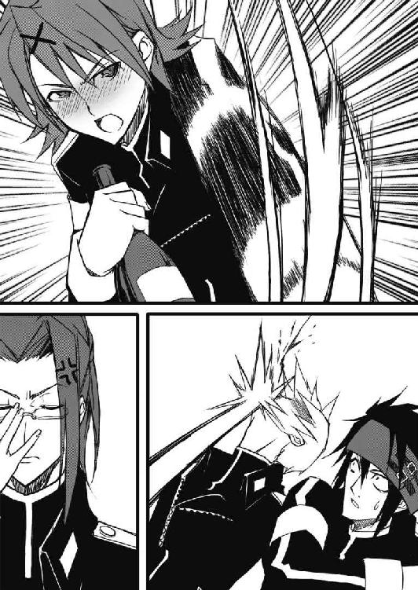
そろそろ危険な兆候である。
「そういや、お前は最初っから初々しさの欠片もなかったな」
ディアンはサキに視線を向けた。
「......お前、隊長から飢魂の剣、ずっと借りたままだよな？ どうして返さないんだ？」
「どうしてって......別に返せって言われませんからね。このままガメちゃっても平気かなあって」
「お前な」
「こと、このくそガキに関しちゃ、隊長は甘やかし過ぎだ」
アギが吐き捨てるように言った。
「こんな野良犬みてえなガキ、命を救ってやるこたあなかったんだよ」
「盗賊だった誰かさんを絞首台から救ったことだって、十分甘やかし過ぎに思えるけど？」
サキは肩をすくめて言い返す。
「この！」
「よしなよ、大人気ないねえ」
ナイフを抜こうとするアギの手を、復活したトリストが押さえる。
「それよりさ、聞いた？ 新しい法令のこと？」
トリストは杯をぶつけられた額を擦りながら、話題を変えた。
「法令？」
と、顔をしかめるディアン。
「例の怪物騒ぎに関連してなんだけどさ。怪物に変異した人間の近親者や、怪物に接触した人間を、片っ端から捕らえるって法が施行されそうなんだって。これ、うちの兄貴と親父の話ね」
トリストの兄は伯爵で、現在、十二人委員会のひとり。
父の公爵は、元十二人委員会議長である。
「おい、待てよ。それじゃ、十二人委員会は、変異した奴の家族や、近くにいた人間がみんな怪物になるって考えてるのか？ 伝染病じゃあるまいし！」
ディアンはヨルカの膝から上体を起こした。
「変異は邪妖が憑依いて起こるんだぞ！ 感染する訳じゃない！」
「実際はどうだか知らないけどさ。委員会の見解としては、感染するってことだよね」
「......もしも、そんな法令が施行されたら、市民は疑心暗鬼に囚われますよ。いつ怪物に変異するのかと隣人に怯え、周りの人間すべてを疑ってかかるようになるでしょうね」
ロレルが眼鏡を外し、目頭を軽く指で押さえる。
「......じゃあ」
リュートの弦を張り直す手を止め、イーファは唇を嚙んだ。
「今日助けた女の子も牢へ？ そんなのって......」
生き残ったあの女の子が、赤い服の人形を手にポツリと佇む姿を、イーファははっきりと覚えている。
家族を全て失い、これからどうやって生きてゆくのか気になってはいたのだが。
「死んでた方が、幸せだったかもね」
と、サキ。
「サキ！」
イーファはそんな少年を睨みつける。
「......おい、実際に法令に従い、取り締まるのは俺たちだろ？」
アギが乾した杯を置いて、ロレルに言った。
「つまり、俺たちが一番、変異者と触れ合う機会が多い訳だ。最悪、俺たちも法令の対象になりかねないぜ？」
「ええ」
眼鏡をかけ直しながら、ロレルは頷く。
「その可能性は十分にあるかと」
一同の間に、深刻な沈黙が漂い始めたその時。
「......暑い！」
突然、ヴィスナが立ち上がって、胸元の留め紐を解き始めた。
「脱ぐ！」
「ほら、お止めなさい、若い娘さんが」
周囲の男性陣を睨みながら、止めに入るヨルカ。
「脱ぐったら、脱ぐ！ あたしの方が、絶～っ対、ヨルカ姉よりいい身体してんだから、ここで証明してやるんだ～っ！」
「......アホだ」
ディアンがこめかみを押さえる。
「さてと......」
サキは杯を置くと、背伸びをしながら立ち上がった。
「僕はそろそろ詰め所に戻るかな。ヴィスナの介抱、押しつけられる前に」
「あれれ、もう？」
と、トリスト。
「ええ。みんなはごゆっくり」
サキはそう微笑むと、部屋を出て行く。
「......いつもああなの？」
サキの姿が消えると、トリストはディアンに尋ねた。
「ああって？」
「てっきり僕、サキくんって、イーファちゃんのところに泊まってくんだと思ってた」
「わ、私とサキはそういう関係じゃない！」
調弦中のリュートが、ピューンと変な音を立てる。
「こら、そういう関係じゃありません、でしょ？」
イーファの発言をため息混じりに訂正するヨルカ。
「......ほんとに、この子はいつまで経っても」
「じゃあさ」
トリストはニッと笑って、イーファの方に身を乗り出した。
「僕なんかどう、今夜の相手に？」
「よしとけ。殺されるぞ」
ディアンは苦笑いしながら、ヨルカに杯を満たさせる。
「サキくんに？」
「さもなきゃ、俺にな」
「相変わらず、人が好いねえ、ディアンは」
肩をすくめるトリスト。
「どうでもいいけど、トリスト。この子、高いわよ、初物だから」
ヨルカはディアンの胸に手を這わせながら告げる。
「......いくら？」
「そうね。五万ダカットなら、考えてもいいわ」
確かに驚くほどの金額だが、手付かずのイーファのような少女を好む顧客も多く、決して法外とは言えない。
「またの機会にしておくよ」
トリストは両手を挙げた。
「その二百分の一ぐらいの値段で遊べる子、呼んでくれないかなあ」
ホッとした表情になるイーファ。
「はいはい」
ヨルカは手元の硝子の鈴を鳴らし、階下から女の子たちを呼んだ。
＊ ＊ ＊
夜明け近くになって。
「......でも、このままじゃいけないんでしょうね、きっと」
寝台から身を起こし、服を着ようとするディアンに向かってヨルカは言った。
「サキとイーファのことか？」
甲外套を手にしながら振り返るディアン。
「お前、イーファにサキを監視させてるんだろう？ サキがもし、リネットが考えている通りの危険な存在なら、あまりイーファに深入りさせたくないんじゃないか？」
「私はサキくんのこと、可愛い弟みたいに思ってるのよ。監視はまあ、商売だから」
「お前な」
「......ねえ、サキくん、ルシラのことがまだ？」
ルシラとは、かつてのサキの恋人。
ルシラも闇隊士であったが、仲間を裏切り、サキの手で死ぬことになったのだ。
「それもあるだろうな」
ディアンは頷く。
「だがまあ、あいつはあいつなりに、イーファとのことを大切に考えてるんだろうよ」
「だけど、イーファは闇の一員よ。いつかは、どんな男にも身体を与えるようにならなくてはいけない」
暗がりの中で、白い裸身が立ち上がる。
「最初ぐらい愛情の通う体験をさせてあげたいけど......それで余計に苦しむことになるかも」
ディアンの手に、そっと触れる指。
その指がかすかに震えるのを感じ、ディアンは強く握り返す。
「お前は優しいな。とても闇隊士の長とは思えん」
「......馬鹿ね」
「なあ」
「なあに？」
「そろそろ、引退する気はないか？」
「どうしたの、突然？」
「......つまり......一緒に......」
「ふふふ、私が時々仄めかすから、本気にしたの？」
「ヨルカ」
「無理よ。あなたは貴族ですもの」
「貴族なんていつでも辞めてやる」
「......子供みたい。あなたが貴族の地位を捨てて娼婦と一緒になれば、笑い物になるのはあなたの実家、ベルトリューシュ家よ。ベルトリューシュの今の当主は、あなたの甥子さんでしょう？ 七歳の子供に、辛い思いをさせたいの？」
「............」
「ごめんね」
淋しそうな笑い声。
「でも、私も藁の冠と麻のドレスでロバに乗せられて、晒し者になるのは嫌よ」
「おい、それは？」
「知ってるでしょう？ この国の法では、娼婦であった者が結婚する時には、藁の冠を被って、麻のみすぼらしい衣装を着て、ロバに跨って街中を回らなくてはいけないの。要するに、娼婦のくせに人並みに結婚を夢見るなってことなんでしょうね」
「............」
ヨルカの濡れた頰に、ディアンは指を這わせた。
「見ないで。お化粧が崩れちゃってるから」
おどけた調子の声を作るヨルカ。
「......でも、ありがと」
ディアンは、女の身体をそっと抱きしめる。
腕の中で震えるその身体が、この時のディアンにはやけに華奢に感じられた。
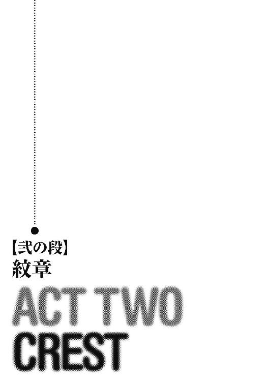
「う、眩し......」
翌朝。
二日酔いの頭を抱えて詰め所を出たヴィスナは、太陽を恨めしげに見上げた。
「......何で今日は雨じゃないのさ。......おえ」
「この女、昨日一体どれだけ飲んだんだ？」
詰め所の前を通り過ぎる人々の冷ややかな視線を気にしながら、ディアンは地面に座り込もうとするヴィスナを無理矢理立たせる。
「金額で言うと、蜂蜜酒を四ダカット半、エールを二ダカット、葡萄酒を五ダカットと四分の三です」
正確に記録を取っていたロレルが告げた。
「言っておきますけどね、給料日には返してくださいよ」
「ああん、朝っぱらから紋章師のところなんて、気が進まないよ～」
手足を振り回すヴィスナ。
「駄々をこねるな！」
と、ディアン。
「ほらほら、早く行けば早く済むから。紋章を入れ直しておかないと、仕事に差し支えるでしょ？」
サキはヴィスナの背中を押した。
紋章とは、複雑な意匠を持つ刺青で、それに触れ、意識を集中することにより、様々な効果を発動することが可能となる。
魔法とも呼べるほどに便利な紋章ではあるが、欠点がない訳ではない。
一度、その効果を発動させると、紋章は消えてしまうこと。
普通の人間が、一度に凝着することが可能な紋章数は三つまでであること。
四つ以上の紋章を凝着させることは、精神、及び心臓を含めた循環器に激烈とも言える負担をもたらし、凝着者を死に至らしめるのだ。
「......吐いていい？」
「駄目だ！」
宥めすかしながらヴィスナを歩かせるディアンたち。
「っと、子供はいいねえ、朝から元気で......」
鉛のように重い頭を抱えたヴィスナは、足を引きずりながら恨めしげにサキを見た。
＊ ＊ ＊
「いらっしゃいま......けっ、客かと思えば、お前らか」
サキたちが、裏町にある紋章師の小さな店の戸を潜ると。
カウンターの向こうで愛想のいい笑顔で出迎えた少女は、店に入ってきたのが九尾の猫の面々であることに気がつき、途端に不機嫌な顔になった。
「あのな、俺たちだって客だろうが」
厚い樫の板のカウンターをコンコンと叩くディアン。
「軍人や隊士相手の紋章凝着は、相場が決められてて実入りが少ないんだよ。ま、客としちゃあ、下の下だね」
バサッ！
紋章師の少女は、紋章の価格表を四人に投げ与えると、カウンターの向こうにある踏み台から下りた。
床の上に立つと、三つ編みにした頭がほんのちょっと見えるだけ。
この店の主人は、実際の年齢は不明だが、見た目は十歳くらいの少女である。
店は汚く、主人の態度は大きいが、紋章凝着の腕は最高にいい。
九尾の猫の全員が、この店を贔屓にしているのだ。
「ほれ、早く決めな」
レース付きの可愛らしいドレスを着た紋章師は、見た目にそぐわぬ口調で急かす。
「へえ、新しい紋章が入りましたね」
革表紙の価格表を広げてみながら、サキは尋ねる。
「これ、どう使うんです？」
サキが指さしたのは、〝薄翅の舞〟という名の紋章。
どうやら、落下の速度を和らげる働きがあるらしい。
「そんなこと知るかよ、使う人間が工夫しな」
紋章師は素っ気ない。
「う～ん、面白そうなんですけどねえ」
サキは腕を組んで悩む。
「......入れちゃおうかな？」
「使い慣れた紋章にしておけよ」
釘を刺すディアン。
「でも、何か気になりません、新作って？」
「ならん。俺はいつも通りに防御系だからな」
「......決～めた。あたしからでいいだろ？」
ヴィスナは価格表を閉じて、仲間に尋ねる。
「お先にどうぞ」
と、優雅な仕草で一礼するロレル。
「私はみなさんが入れる紋章を見て、それを補うものにしますから」
「あたし、〝癒しの霧〟を二つと、〝孤狼の理〟ね」
ヴィスナは紋章師に声をかけた。
〝癒しの霧〟は、文字通り治癒系の紋章。
〝孤狼の理〟は、俊敏性を上昇させる紋章である。
「場所はいつも通りかい？」
紋章師は寝台に横になるようにヴィスナを促す。
「うん。両手の甲と首筋」
上着を脱ぐヴィスナ。
形のいい、締まった胸の双丘が顕わになるが、いつものことなのかロレルたちは別に慌てない。
「深さは？」
横になったヴィスナの手の甲と首筋の皮膚の具合を、指で確かめる紋章師。
「普通でいいかな。......でも、首筋の〝孤狼の理〟だけ、少し深くしておいて」
「だったら、五十ダカット割り増し」
紋章は彫る深さを変えることで、発動する能力の強度や持続時間を調節することができる。
深く彫ればそれだけ強力な効果を発動できるが、凝着させる時の痛みも激しいし、料金も高くなるのだ。
「......奇麗な肌だね、いつも思うけど」
紋章師は、水晶の針に鉱物と薬草から採った染料をつける。
「革、嚙むかい？」
悲鳴が出るのを抑えるために嚙む厚革を、渡そうとする紋章師。
「いい」
ヴィスナは頭を振る。
「じゃあ、いくよ」
「......うう......ああっ！ くんっ！」
低い呻き声が、紋章師の部屋に流れた。
＊ ＊ ＊
夜になって。
「そこまで」
ヨルカは、イーファにリュートの練習曲を一通り演奏させた後、いつもより随分早めに稽古を切り上げた。
「ふう」
と、息をつくイーファ。
リュートは、粋蜜楼で課されている練習の中でも、特に苦手なもののひとつ。
この楽器を弾いていると、まるで自分の指が鉛でできているかのように思えてくるのだ。
「......ねえ」
楽器をしまうイーファに、ヨルカは声をかけた。
「あなた、サキくんのこと、どう思っているの？」
ガッシャーン！
イーファはケースごと、リュートを床に落っことした。
「......随分と分かり易いわね」
目を細めるヨルカ。
「べ、べ、べ、別に！」
イーファは思いっ切り首を横に振る。
「サ、サキのことは......そ、そう、ただの仲間で、特別な感情は持っていない......です」
「......あの子と寝る気はないの？」
「......向こうが」
イーファは口籠った。
「多分、嫌がる。サキは、ただの友達としか、私を考えていないから」
「......イーファ」
ヨルカは真剣な顔つきになる。
「あなたは何？」
先ほどまでとは全く違う口調。
「私は......闇隊士......です」
拾い上げたリュートをテーブルに置いて、イーファはヨルカを見つめ返す。
「それならば、あなたは自分が本来しなくてはいけないことが、分かっているわね？」
「はい」
「だったら、もう、サキくんのことは忘れなさい。数日中に、あなたには闇隊士として初の任務について貰うから」
「！」
それが何を意味するのか、理解したイーファの顔が強張る。
「......謹んで拝命いたします」
少女は闇隊士の長の前に膝を突きながら、左の胸に小さなこぶしを当てた。
＊ ＊ ＊
同じ頃、トロンヘイム王城のハディングの寝室では......。
「さ、先ほど十二人委員会が、ようやく合意に達しました」
血色の悪い顔をさらに蒼白にした侍従長が、寝台から物憂げに身体を起こした国王に報告していた。
「このような時間まで、連中も暇なことだ」
ハディング王は、傍らに横たわる少女の腹に手をやりながら皮肉げに言った。
寝台の上には、まだ幼い三人の少女の姿がある。
一番若い娘は、十歳ほどだろうか。
虚ろな瞳をした少女たちはみな、上気した肌にうっすらと汗を滲ませ、ハディングの愛撫に対して敏感な反応で応えている。
「それで？」
ハディングは促した。
「危険市民収容令は、予定通り可決いたしました。変異する者たちは怨恨、強欲、王室への不忠など、邪悪な念を抱いた者で、醜く歪んだ心が別の変異者に触れることによって変異が促される。そう王立学術顧問団が結論づけたことが、成立の後押しとなったようで」
部屋に漂う阿片の匂いに咽せそうになりながら、侍従長は続ける。
「早速、収容所の建設に入り、施行は来月の初めとなる見通しです」
「......遅いな」
ハディングは頭を振った。
「明日から施行するよう、守備隊には伝えろ」
「はあ？ それでは市民への告知などの準備が......」
全身を伝う汗を拭う侍従長。
「それに、収容できる施設もありませんが？」
「城の地下牢を使えばよい。独房ひとつに数十人ずつ詰め込めば、五百人は収容可能だ。違うか？」
「そ、それでは身体を横たえることすらできはしません。下手をすれば窒息の虞が......」
「化け物になるやも知れぬ連中だ。それで十分だろう」
ハディングは哂う。
「それとも、貴様が牢の住み心地を試したいか？」
「さ、早速そのように手配いたします」
侍従長は口早にそう言うと、一礼して寝室を辞した。
「............」
侍従長の姿が消えると、ハディングは自分の腰にすがる少女の首を指で挟む。
「煩わしいことだ」
ポキリという小さな音。
少女は一瞬、身体を痙攣させると、それっきり動かなくなった。
＊ ＊ ＊
トロンヘイムの海岸線のほとんどは険しい断崖で、港の建設には適していない。
そのため、漁業や海洋貿易が発達することはなく、その通商の大部分は山越えの陸路を頼りにしている。
そして、トロンヘイムでほぼ唯一の貿易港と言えるのが、王都から早馬と川船を利用して東に二日半の距離にあるポルス・ケルズィンだった。
大洋の遥か彼方の国からの珍しい物産の多くが、ここポルス・ケルズィンを通して、王都に流入している。
サキたちが紋章屋を訪れた日から数え、三日後の夕暮れ時。
その港の倉庫街の一角に、ロレルを伴ったアラン・シーヴァルドの姿があった。
「本当にこんなところにいらっしゃるのですか？」
ロレルは慣れない磯の香りに顔をしかめながら、隊長に尋ねる。
「噂によれば、な」
アランは王室専用の倉庫を探し出すと、その近くに移動し、周囲で働く船乗りや運搬人たちを見渡した。
荒くれ者の船乗りたちは、自分たちとは明らかに毛色の違うアランたちを胡散臭げに睨み返す。
その中で。
「あれか......」
アランは倉庫の前に積まれた箱の上に寝そべる男を見つけると、その前まで真っ直ぐに歩いてゆく。
「メヴィル・オークショットだな？」
「......そういうそちらさんは？」
声をかけられた男は、眠そうな目を擦りながらゆっくりと上体を起こした。
大柄だが、猫背のせいか、そう大きくは見えない。
年は三十代半ばから四十というところ。
髪はかなりのくせ毛で、軍人らしからぬ薄い不精髭を伸びるに任せている。
輜重隊所属である柿色の軍服も、薄汚れ、だいぶ草臥れた様子だ。
「アラン・シーヴァルドだ」
アランは階級抜きに名乗った。
「シーヴァルド？ ヴァイマーヘン大公の？」
欠伸をしたメヴィルは箱から下り、確認するようにロレルを見る。
メヴィルの姿に呆れながらも、無言で頷くロレル。
「あらあら、これはとんだ失礼を」
メヴィルはヨレヨレの制服をパンパンと叩いて埃を払うと、やる気の見られない敬礼をした。
「......で、その大公さんが、こんなところに何の御用です？」
「軍歴を見た。貴様に興味がある」
アランは告げた。
「あたしの軍歴、ですか？ 自慢できるようなもんじゃないですねえ」
と、薄ら笑いを浮かべるメヴィル。
「知っている。士官学校を開校以来最低の成績を以って卒業、勇猛で知られるクラウセン伯のもとにおいて鉄騎隊副長を経て、隊長となるが、二か月後に降格。ストロース侯のもとに移り、工兵隊副長を拝命するものの、命令違反による懲罰の後、補給部隊への転任を命ぜられ、もう五年、ここの倉庫の責任者として燻っている」
「燻ってるって仰いますけどねえ」
メヴィルは目を細めて、金色に輝く海原を見渡した。
「いい仕事ですよ～。日の半分は居眠りしていられるし、生活に必要なものは、たいてい倉庫からチョロまかせる。何より、戦場に出ないから、死なない」
「軍事物資の横領は死罪だが？」
「......やれやれ、軽はずみなことは言えませんなあ」
メヴィルは大袈裟に嘆く振りをしてみせてから、抜け目のない視線をアランに投げかけた。
「もっとも、大公さんはそんな些細なことを、あたしの上司に密告するような方とは思えませんが？」
「そう踏んでの発言だろう」
アランは身を乗り出した。
「私のもとに来い。九尾の猫には、貴様が必要だ」
「買い被らないでくださいよ、あたし、調子に乗りやすい人間なんです」
照れ臭そうに鼻の頭を搔くメヴィル。
「......で、大公さん、このあたしに何を望むの？ 大公さんのとこにゃ、大剣のディアン、狂犬のサキ、二刀使いのトリスト、それにここにいる三段突きのロレル、立派な〝武〟がそろってらっしゃる。それに......」
顔全体ではヘラヘラと笑いながらも、鋭い眼光がアランを射貫く。
「大公さんも、指揮官って顔はしてるものの、中身は大した〝武〟だ。宮廷にいるより、戦場の方が安眠できるお人なんでしょ？ そこに今さらあたしなんかが加わっても、何の利益もないと思いますがねえ」
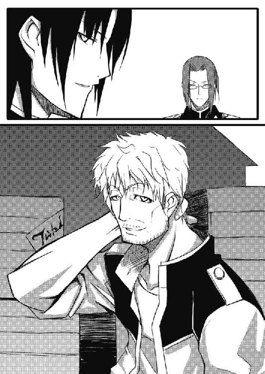
「私が欲しいのは、貴様のここだ」
アランは指でメヴィルの頭を指し示す。
「私のところに来れば、退屈はさせぬ」
「あたしの......ここ、ねえ」
メヴィルはこめかみのあたりを指で二回突ついた。
「......で、お給料って、上がります？」
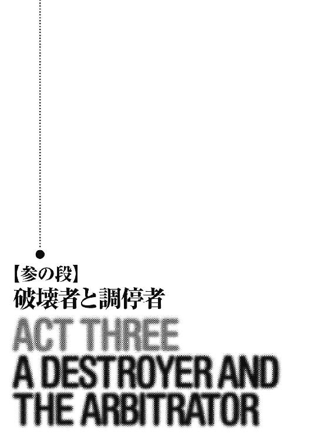
「今日もイーファ、いないんだって？」
その夜。
サキは、ひとりで粋蜜楼を訪れていた。
一緒に街を見回るはずだったイーファが、九尾の猫の詰め所に顔を出さなくなって、これでもう三日。
ヨルカからは用事を頼んだとの連絡はあったが、それでも三日連続となると気になって、非番になってから様子を見に来たのだ。
「僕にあの子と組めって言ったの、ヨルカさんだよね？ 勝手にイーファに用事頼まれると、困るんだけど？」
「ごめんね」
珍しいことに、ヨルカはサキを自室に招いて、温かい香料入りの葡萄酒を勧めていた。
「いいよ。今日は飲みに来たんじゃないし」
サキは酒の注がれた杯を取ろうとはせず、薄衣一枚のヨルカから視線を逸らして部屋の中を見渡す。
普段はディアンしか通されない、ヨルカの私室。
仄かに、甘い香水のような匂いが漂っている。
「とにかく、座ったら？」
サキが不承不承、長椅子に座ると、ヨルカはその隣に腰を下ろした。
「......サキくん、イーファのことだけどね」
ヨルカは、サキに差し出したはずの杯に口をつける。
「使いに出したっていうのは噓なの。あの子が、あなたに逢いたくないって言うから」
「......イーファが？」
サキは頭を振った。
「まあ、嫌われるようなことをした心当たりが、ない訳じゃないけど......」
心当たりがないどころか、実は、かなりあったりする。
「馬鹿ね、逆よ」
と、ヨルカ。
「自分で気がついているかどうか分からないけど、あの子はあなたが好きなのよ」
「............ええと？」
戸惑いを隠しきれないサキ。
「つまりはこういうこと。これ以上あなたと逢うと辛くなるから、逢わないと言ったの」
「僕と逢うと......何故？」
「あなた、忘れていない？ あの子は闇隊士なの。任務のためならば、闇隊士を続けてゆくなら、誰かを好きになってはいけないのよ」
「でも、ヨルカさんはディアンと......」
「だからよ。私は十分に苦しんだ。同じ辛さをあの子に味あわせたくないの」
ヨルカは両手で持った杯に視線を落とす。
「闇隊士でいる以上、任務のためには他の男に肌を許さなくてはいけないこともある。心と身体は別だと割り切れるようになるまで、何度も死ぬことを考えたわ」
「......そうだったのか」
サキはようやく、イーファがここ数日どれほど苦しんでいたかを理解した。
「ねえ」
ヨルカは身を乗り出し、サキに顔を近づける。
「どうして私がここで、あなたを相手に無駄話をしていると思う？」
耳元で囁くヨルカ。
「今夜、イーファを情報収集任務に送り出したの」
「情報収集？」
「そう、あの子にとっての初めての任務。これがどういう意味か、分かるでしょう？」
「！」
「相手はウートガルトの大使。今後、ヒベルニアとの戦争を続けていく上で、ウートガルトの動向を知ることは非常に重要なの」
「場所は⁉ この粋蜜楼⁉」
サキは立ち上がった。
「今回は別に場所を設けたわ。トランシュブールズ通りの〝栄光の腕〟亭。あの二階が、密会にはちょうどいいから」
扉に向かおうとするサキの腕を、ヨルカはつかむ。
「今さら行っても手遅れよ。それにね、サキくん、あの子は何れ、人ではなくなるの」
「知ってるよ、本人から聞いた！ あと五、六年で、再生能力が暴走して、人の姿を留めていられなくなるって！」
「それだけじゃないわ。再生の能力を使うたびに、イーファが人間でいられる時間は短くなるの。この前の地下での戦いで、あの子は自分の異能を最大限に使うしかなかった。あれで数か月は、人の姿を保てる時間が短くなったはずよ」
真っ直ぐにサキの瞳を見据えるヨルカ。
「あなた、それでも本当にあの子を闇の中から引き出して、陽の当たるところを歩かせてあげる自信がある？ 人でいてよかったと、生まれてよかったと、信じられるだけの思い出で、あの子を満たしてあげられる？」
「......分からないよ」
唇を嚙み、俯くサキ。
「......それならば、もうあの子に関わらないことね」
ヨルカは優しく告げた。
「誰も、あなたを責めはしないわ」
「けど、分からないなら......」
サキはヨルカの手を振り解くと、部屋の窓を開けた。
「やれるだけやってみるしかないじゃないか！」
サキは窓から身を躍らせると、表通りに向かって駆けていった。
「......あらあら、窓くらい閉めていってくれてもいいのにね」
サキの飛び下りた窓を閉めながら、ヨルカは肩をすくめた。
「お前も焚きつけるのが巧いな」
扉を開けて、隣の部屋から入ってきたのはディアンである。
「女はね、生まれた時から、こういった手練手管を身につけているのよ」
「やれやれ、もしかすると、俺もお前の手練手管に搦め捕られたクチかも知れないな」
ディアンは新しい杯を取り出し、葡萄酒を注ぐ。
「ふふふ、今頃気づいたの？」
ヨルカの腕が、ディアンの首に巻きついた。
＊ ＊ ＊
決心が固まるまでに三日かかった。
（どうして、サキの顔が頭から消えてくれないんだ？）
寝台に座りながら、イーファはぼんやりと考えていた。
初めて遇った時は、敵だった。
残虐で血を好み、心に邪妖を宿し、いつも、こちらの気に障ることばかり言う。
（それでも......）
イーファは震える指でゆっくりと薄衣の留め紐を解く。
（それでも、忘れられない。サキ......きれいな身体のうちに、もう一度だけ逢いたかった）
薄明かりの中、イーファの三倍は体重がありそうな脂肪の塊が、傍らで息を荒くしていた。
汗ばんだ手が、気忙しげにイーファの着衣を剝ぎ取り、その肌に指を這わせる。
「よ、よい匂いじゃ」
肥満男は鼻の穴を広げ、イーファの首筋に顔を擦りつけた。
「初めて粋蜜楼でお前さんを見た時から、き、気に入っての。ヨルカには、銀貨五万もの大枚を叩いたわ」
太股の間に、ふやけた白い手が伸びる。
「もっとも、お前さんには十分その価値がある」
服を脱ぎ始める肥満男。
その弛んだ腹に、イーファは吐き気を覚えた。
「ブフフフウッ！」
肥満男は腹ばいになり、イーファの足を舐める。
（サキ......サキ......サキ......）
ギュッと目を閉じ、イーファは心の中でサキの名を呼び続けた。
「さあ。よっく見せておくれ」
肥満男はイーファの膝に手をかけ、脚を広げて顔を近づける。
と、その時。
バンッ！
扉が蹴破られ、黒い甲外套の少年が部屋に飛び込んできた。
「サキ！」
立ち上がるイーファ。
（ああ......サキだ......）
涙が不意に、その瞳からこぼれそうになる。
「王都守備隊、参上」
サキはイーファを見て、ホッとしたような笑みを浮かべた。
「な、何だ！ どういうことだ！ わ、わしをウートガルト共和国特別全権大使と知っての狼藉か⁉」
肥満男は尻餅をつき、短い手足をバタつかせる。
「閣下！」
サキはとっさに跪く。
「我々の入手した情報によりますと、ヒベルニアからの刺客が閣下の暗殺のために王都に侵入し、この場所を囲んでおります」
「な、何だとおおおっ！」
顔色を蒼白にし、肥満男は二重あごを震わせた。
「ど、どうする⁉ 暗殺者だと⁉ ヒ、ヒベルニアめ！ 我が国の外交の要たるわしを狙うとは！ 何たる暴挙！ 何たる非道！」
「閣下は重要人物ですから」
さらりと言ってのけるサキ。
「ど、どうする⁉ どうすればいい⁉ お願い、教えて！ 助けて！」
うろたえた大使はサキにしがみつく。
「......幸い」
サキは少し考え込むような振りをして続けた。
「刺客どもは閣下の顔を知りません。閣下を識別するのは、あの服のみでしょう」
と、サキが指さしたのは、ベッド脇の椅子に引っ掛けてある、ビロードと毛皮で誂えられた豪華な深紅の服だった。
「ですから、これをまとって......」
サキは大使の肩に、イーファの着ていた女物の薄衣をかける。
「窓から出て、大使公邸まで走ってお逃げになるのです。誰にも話しかけてはいけません。刺客の変装の虞があります」
「わ、分かった！ おぬし、なかなか頭が切れるの！」
大使はうなずくと、窓を開いて下を見る。
「と、待て。......ここを......飛び下りるのか？」
部屋は二階。
贅肉の塊である大使には、無事に着地するのはちょっとキツい。
「さあ、閣下！ ここは僕が身を挺して敵を防ぎます！ 急いで！」
サキは大使の背中を蹴り飛ばした。
「あわわわわわっ！」
宙を舞う大使の巨体。
下着と薄衣だけをまとった大使は、ベチャッと腹から地面に落ちる。
「大使、ご無事ですか～？」
一応、声をかけるサキ。
「しょ、少年よ、感謝する！ 我がウートガルト共和国は、国を挙げて君を称えることだろう！」
大慌てで起き上がった大使は窓を見上げてそう叫ぶと、表通りの方に駆けていった。
「それで、刺客は何人だ⁉」
絹の寝具を胸のあたりに巻きつけながら身体を起こしたイーファが、寝台の下に手を伸ばして小剣を握り、窓際に立つサキの背中に声をかける。
「刺客？」
肩をすくめながら振り返るサキ。
「ここを囲んでいるんだろう⁉」
「......ああ。あれ、噓」
「......そうか、噓か......って、う、噓だと！」
扉の脇に移動し、剣を抜こうとしていたイーファは、そのまま硬直する。
「噓って何だ！」
「噓というのは、真実じゃない事柄を......」
「こ、言葉の定義を聞いているんじゃない！ どうして噓をついたかと尋ねている！」
「それは......まあ、いいじゃない」
頭の後ろで手を組むサキ。
「よくない！ 相手は大使だぞ！ ひとつ間違えて彼の機嫌を損なえば、中立条約が破棄されて戦争になるところだ！」
「......そっか、そういう可能性もあったかあ」
サキは窓を閉めると、ベッドに座る。
「まったく！ お陰で任務は失敗だ」
ドスンとその隣に腰を下ろし、イーファは頭を抱えた。
「......どうしてここが？」
「ヨルカに聞いた」
「ヨルカが？」
啞然とした表情のイーファ。
「い、一体、何を考えているんだ、あの人は⁉」
「さあね」
サキは甲外套を脱いで、イーファの肩にかける。
「怖かった？」
「..................うん」
小さくうなずくイーファ。
「......だから......ずっとサキの名前を......呼んでいた」
「そっか」
サキは、イーファの頭を抱き寄せる。
この少女の存在が自分の中でどれほど大きくなっていたのかに、ようやく気づきながら......。
「少し休んだら、帰ろ」
「いつの間に、君のことをこんな風に想うようになったんだろう？ ......私は、闇隊士失格だな」
身体をサキに委ね、目を閉じるイーファ。
「礼儀作法とリュートの時点でね」
銀色の髪を、サキは指で梳く。
「怒るぞ？」
「だったら、何か穿いてからにしたら？」
「......やっぱり、君なんか大嫌いだ」
イーファはサキの手を握り、そっとその指を嚙んだ。
＊ ＊ ＊
同じ頃。
「対ヒベルニア戦争でここまで衰えたトロンヘイムの国力を、どのようにして回復させるべきか、ですが......」
寝台から裸身を起こしたリネットは、窓際で星を眺めるアランの背中に向かって語りかけた。
「変わった睦言だな」
「真面目にお聞きください」
リネットはアランの腕を引いて振り向かせる。
「まずは、御自身の領地から始められるべきかと」
「大公領からか？」
「はい。大公領の問題は、土地が細かく分けられ、多数の農民が粗放的な農法で効率の良くない耕作を行なっている点にあります。そこで、領地内の小領主に土地をまとめさせて集約的な農法に転換し、余った人員は大公家で借りて、新たな土地を開墾させるのです」
「開墾？」
と、アラン。
「大公領内には余っている土地はないが？」
「ですから」
リネットはアランを座らせた。
「近隣の領主から土地を借ります」
「......そうか。確かに大公領外では、生活の苦しさから土地を捨て、都市に流れる農民も多く、荒廃した土地がかなりあると聞く。土地を借りることは難しくはないだろう」
アランは認める。
「それで、どの程度の利益を見込める？」
「あなたの手元には一ダカットも」
微笑むリネット。
「開墾に当たった農民たちには利益の七割を、土地の貸し主である領主には三割の利益が入ることになります」
それまでのトロンヘイムの農政からすると画期的な提案である。
通常、領主は純益ではなく〝収穫〟の六割を手にし、実際に耕作に従事する農民の手に残るのは残りの四割に過ぎない。それも、その中から来年蒔く種を残し、農耕具の修理代やその他様々な支払いをしなくてはならないのだ。
（それにしても......）
アランは思う。
（不思議な娘だ。この幼さで、農政や財務管理について、大臣顔負けの知識を持つとはな）
「領主どもがそれで納得するかな？」
アランは尋ねた。
「打ち棄てられた土地から、多少なりとも利益が上がるのです。それほど不満の声は上がらないものと思われます」
答えるリネット。
「しかし、この案では周囲の領主や大公領内の小領主には益があるが、大公家としてはかなりの出費を余儀なくされる」
「領主たちや農民の忠誠が買えるのならば、安いものかと」
「分かった、考えておこう」
アランは頷いた。
「後はサキ少年の問題ですが」
リネットは話を続ける。
「やれやれ、またサキか」
アランは苦笑し、リネットのあごを指で撫でた。
「......お前のそのサキへの執着を見ていると、嫉妬を覚えるな」
「アラン！」
「お前を信じてはみたい。だが、幾千の言葉を並べ立てられようと、自分が〝調停者〟などと呼ばれる大層な存在であるとも、あのサキが世界の〝破壊者〟だとも、到底思えぬのだ」
初めてアランがリネットと出逢った時。
驟雨の中、冷えきった顔でアランを見上げた少女は、アランのことを〝調停者〟と呼んだ。
この世界を、滅びから救う役割を担う存在だと。
少女はまた、サキのことを〝破壊者〟と呼んだ。
〝破壊者〟とは、〝調停者〟を阻み、世界に破滅をもたらす者。
いつの日にか、アランはサキと対決し、この世が進むべき道を決めなくてはいけないのだ。
「......やはり」
リネットはため息をついて、小さく頭を振る。
「実際にお見せする他はないのですね、この世界の行き着く先を」
「まあ、そんなものが見られるのならば、信じもしようが......」
「見ることは可能です」
リネットは言い、アランの前に立つ。
「アラン・シーヴァルド、〝調停者〟である貴方なら」
「リネット、この話はもう......」
「わたしの手を離さないでください」
右手を差し出すリネット。
「......分かった」
アランは少女の真摯な視線に戸惑いながらも、その手を握った。
「もっと強く。刻の早瀬で逸れてしまうと、二度とこの世界に戻ることはできません」
リネットは瞳を閉じると、アランの顔にも左手をかざして、同じように目を瞑らせる。
「少しだけ、このままで」
アランの手を握り返す、リネットの華奢な手。
そして、一瞬後。
「......これは」
突然、自分とリネットの身体が虚空に投げ出されるような感覚を、アランは覚えた。
「......目を開けても、大丈夫です」
声に従い、目蓋を開くと、周囲の風景は一変していた。
視界を覆う一面の星々。
無限に広がる空間の中心に、二人は漂うように存在しているのだ。
「行きます」
緊張を感じさせるリネットの声。
その目は、先ほどからしっかりと閉じられたままだ。
「〝調停者〟ではないわたしが、この世界を垣間見ることは禁じられています。貴方の目だけが頼りなのです」
「そうは言うが......」
普段は沈着冷静なアランも、戸惑いを隠せない。
「光の流れを感じ取ってください。光はどちらから？」
「......こっちだ」
意志の力のみによって移動が可能なことにようやく気がついたアランは、リネットの手を引いた。
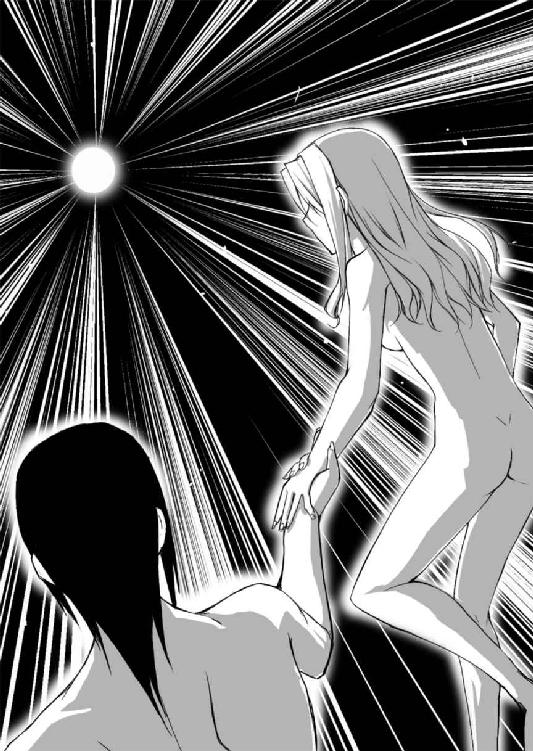
二人の身体は七色の光が雨となって降り注ぐ場所を目指し、星々が成す滝をどこまでも上り詰めていった。
光の奔流に逆らうように進み、やがてその源がアランの瞳に飛び込んでくる。
無数の色がひとつになった眩い純白の光球。
それが、星々の雨の源だった。
白い光球は近づくにつれ、次第に大きくなってゆき、とうとうアランの視界の全てを覆うまでになった。
「光に向かって。真っ直ぐに」
リネットの導きで、アランはゆっくりとその光球に向かって落ちてゆく。
そして、二人の身体が光球の表面に触れた瞬間。
一転して、アランは漆黒の闇に包まれた。
「......何だ、今のは？」
リネットの手を握ってから、一体どのくらいの時間が過ぎたのだろう。
アランは再び、寝室に戻っていた。
「夢か？ それにしては、強烈で鮮明な......」
「夢ではありません。お分かりでしょう？」
リネットは顔を上げてアランを見る。
「その髪は？」
アランは手を伸ばし、リネットの右耳近くの髪に触れた。
そこの一房だけが、色を失い、真っ白に変色していたのだ。
「世界の深淵を覗き見るために、わたしは自分の持てる力のかなりの部分を使わざるを得ませんでした」
リネットはアランの腕の中に崩れ落ちる。
「おい！」
「......大丈夫です。少し、このまま......」
「私が見たものは、いや、見たと記憶しているものは、一体何だったのだ？」
「何がお見えになりました？」
「闇だ。それと、巨大な瞳」
アランがそう答えると、リネットは頷いた。
「貴方がご覧になられた暗闇。それこそが、〝破壊者〟のもたらす虚無です。世界の運命が〝破壊者〟に委ねられれば、全てはその虚無に帰すことになります。わたしたちの、いえ、生きとし生けるもの全ての魂は、嵐の中のか細い燭光のように搔き消え、世界は虚無に帰すのです」
「では、あの目は......あの圧倒的な存在は？」
「貴方が目と認識されたものは、世界の創造者の姿。正確には、貴方が創造者について抱いている認識が、視覚化されたものです」
「では、あれが神か......」
「世界を失い、無限の刻の中で、唯一無二の存在となった創造主の姿です」
「......リネット、お前は本当にただの巫女に過ぎないのか？ 一介の巫女が、このような幻視の能力を持つとは聞いたことがない」
「わたしは......幼き時に今の太后様、先代の女王陛下に召され、力を授かったのです、調停者を守るために」
「そうか」
リネットが国政に関する様々な知識を持っていたことも、これで得心がいった、というようにアランは頷く。
「全ては、ヒベルニア聖王家の差し金という訳だ」
「でも今は！」
リネットは迷いのない、凜とした表情で、真っ直ぐにアランを見た。
「今は違います！ ひとりの女として......貴方のために生きたいのです」
「......ああ、知っている」
アランはリネットの細い腰を抱き寄せる。
「お前はやはり、私に〝破壊者〟であるサキを殺せと命じるのか？」
「......いえ、私は思い違いをしていました」
リネットは頭を振った。
「貴方とサキ少年が戦うべき刻は、創造主の定めしもの。ただの巫女に左右できるものではなかったようです」
「それで、その刻は近いのか？」
「予言には、破壊者との戦いに臨む貴方は、王にして〝調停者〟、と記されています」
「では、私が王にならなければ、対決の刻は永遠に来ない訳だ」
「〝破壊者〟と〝調停者〟の対決がなければ、世界は確実に滅びに向かいます。つい先日、邪妖が貴方を襲ったのも、それを狙ってのことでしょう」
「やれやれ、私は王になった上に、部下と剣を交えねばならぬのか。面倒なことだ」
「その刻に剣に迷いが生まれぬよう、サキ少年と深く関わることはお止めください」
「無論、馴れ合う気はない」
「ですが、貴方は優しいお方です」
アランの腕の中で、小さく身を捩るリネット。
「そう思っているのはお前だけだ」
アランは目を細め、リネットの首筋に唇を寄せる。
「あ......駄目です」
そう呟きながらも、少女は男の手に全てを委ねた。
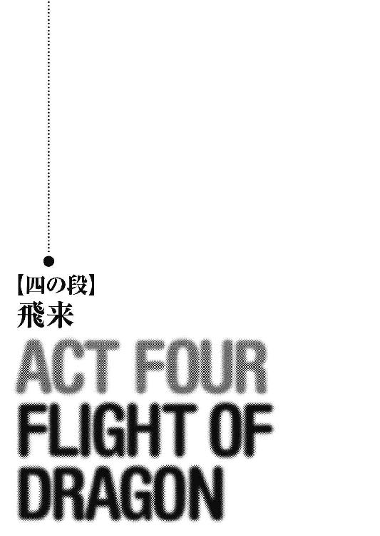
「一体、何がどうなってこんな話になったのか......」
イーファは今朝から数えて、二十三回目の後悔の言葉を口にしていた。
「私がサキと？ 一緒に休みを？」
サキと肩を並べて歩きながら、イーファは信じられないというように頭を振る。
二人が向かっているのは、王都東部の中心、ヴィレーヌ街。
隊士の給料でも買える程度の安価な衣服や日用品の店が並び、三日に一度は広場に市が立つ、賑やかな区画だ。
「それもわざわざ、ヴィスナから服まで借りて？ 絶対、何か間違っている」
ブツブツ独り言を漏らし続けるイーファ。
「へえ、その服、ヴィスナのなんだ？」
サキはイーファが身につけている服をしげしげと見つめた。
サキ自身は制服だが、今日のイーファは、袖の付け根の部分が可愛く膨らんだ、赤いパフスリーヴのワンピース姿。
普段は被らない、つば広の帽子も被っている。
「そ、そうだ」
イーファは警戒の表情で頷く。
「..................へえ～」
「何だ、その微妙な間は？」
「ヴィスナがそういう可愛い服を持ってるってことも意外だけどさ......結構、違和感あるって感じ？」
「どこが！」
「いや、何か、性格暗い子が無理矢理、明るい服着ても、逆に痛々しいというか......」
「私は暗くない！」
と、怒鳴り返してから、イーファは出掛けにヨルカに注意されたことを思い出す。
──あなたは普段から無愛想なんだから、笑顔を忘れないようにしなさい。
「......そうだ、笑顔」
何とか微笑もうとするイーファ。
「......顔、引きつってるよ？」
「これは笑っているんだ！」
イーファはドンと石畳を踏み鳴らした。
「何で私はこ、こ、こ、こんなヤツと一緒に買い物に行って、その上、食事の支度までやらなくてはいけないんだ⁉」
イーファはヨルカの助言で、今日の行動予定を完璧に立てていた。
まずは、ヴィレーヌでそれほど高くない服か、装飾品をサキに選んでもらう。
次に市場に行き、食材を買い込んで、サキを自分の部屋に招いて手料理でもてなす。
その後は......まあ、成り行き次第である。
──男なんてみんな、手料理ひとつでコロリよ。
というのは、ヨルカの言葉だ。
「料理できるの？」
サキの顔が強張る。
「君のその、飛び抜けて疑わしそうな目は何だ？ わ、私だって料理をしたことぐらいある！」
その時の結果については、イーファは敢えて口にしない。
「ということは、まず畑に行って種を蒔いて、森に行って獲物を獲る罠を仕掛け......」
「どうして、その段階から料理を始めなくてはならない⁉ 君は私の里を相当な田舎だと思っているな！」
「......ああっと」
さすがにこの話題はちょっと拙いと気がついたサキは、頭を搔きながらあたりを見渡した。
ちょうどその目に飛び込んできたのが、今流行の、胸元が大きく開いた服を着た女の子たちの集団。
「ねえ、ほら」
サキは、談笑しながら歩く女の子たちを指さした。
「これから服を買いに行くんだよね？ あんなのどう？」
「私の趣味じゃない」
イーファはそちらをチラリと見て、頭を振る。
「でも、ああいうの着たら、可愛いと思うけど？」
「値段が予算内に収まりそうにない」
「値引きの交渉しようか？」
「いい」
「でも、似合いそうなのになあ」
「いや、いい」
「じゃあ、僕が買ってあげるっていうのは？」
「ああいう服を着ると、引っかかるところがなくてずり落ちるんだ！」
とうとうイーファは告白した。
「............」
「..................」
「........................」
「..............................」
「......ま、まあ、先月十四になったばっかりだし、それが普通だよ。気にしない、気にしない」
慰めにもならない慰めがサキの口から出たのは、しばらく経ってからのことだった。
「劣等感にも苛まれる」
イーファは胸に手を置いてため息をつく。
「粋蜜楼には、顔より胸が大きい娘もいるというのに」
「噓！」
目を丸くするサキ。
「......ちょっと言い過ぎた」
「けど......」
サキは一歩離れてイーファを上から下まで見ると、ニッと笑った。
「確かに、お腹と胸の差がほとんどないもんね、君の場合」
「馬鹿にするな！ す、少しは差がある！ ......少しは」
「......転ぶと胸より先に、お腹が地面につきそうだけど？」
「どうして、いつも、いつも、いつも、いつも、いつも、わたしをからかうんだ⁉ 田舎者だからって馬鹿にして！」
「あ～、泣いちゃったよ」
サキは頭を搔いた。
街中で女の子に泣かれている様子は、あまり体裁のいいものではない。
「殺す！ お前を殺して私も死ぬ！」
イーファは涙を拭うと小剣を抜き、サキを睨む。
「君さ、死なないくせにそれはないんじゃないの？」
後退るサキ。
と、そこに。
「ちょっと！ あんた、王都守備隊だろ⁉」
近所の店から主人らしき男が出てきて、サキたちを呼び止めた。
「だったら、あの手の連中をちゃんと取り締まってくれよ！」
「......あれは？」
と、男の指した方向に目を遣ったイーファは、表情を曇らせた。
そこに佇んでいたのは、子供を抱いた女。
まだ若いようだが、着ている服はみすぼらしく、日に焼け、薄汚れた肌を晒している。
女は通り掛かる人々に片っ端から声をかけ、すがりつくようにして物乞いをしていたのだ。
「この前の貧民窟の倒壊事件の時に、住む場所をなくした連中だろうね」
サキはささやく。
貧民窟の大規模倒壊事件は、十二人委員会の発表では局地的な地震がその原因とされている。
だが、実際には、街の地下に巣食う邪妖が、叛乱志士の頭目、ダーレン・ハザンによって覚醒させられたのが、その原因だったのだ。
「まったく！ あんなのにそばをうろつかれたら、商売に差し支えるよ」
貧しそうな女に対する嫌悪を顕わにする、店の主人。
「そんな言い方はないだろう！ 同じ王都に住む者として......」
「まあまあ」
抗議するイーファを制し、サキは店の主人に笑いかける。
「はい、すぐに追い払いますよ」
「ほんと、頼んだよ！」
「......やれやれ。隊服着て来るんじゃなかったな」
サキはボヤきながら物乞いをする女のところに行くと、その肩に軽く触れた。
「ほら、早くここから離れるんだ」
「お願いです。私はこの子に何かを食べさせてあげたいだけで......」
瘦せて顔色の悪い赤ん坊を見せる女。
「駄目だって。この近所の人が迷惑がってるんだから、諦めた方がいい」
「旦那様、お慈悲です」
「慈悲？ 僕には無縁だね」
サキは頭を振る。
「捕まって地下牢に送られたいか、それとも......」
サキが剣の柄に手を置くのを見た女は、嗚咽しながら子供を抱いてどこかに去っていった。
「......非道いことをする」
イーファは咎めるような視線をサキに向ける。
「あんな小さな子を連れた母親を脅かすなんて」
ここ数日、新たに施行された法令により、変異を起こした人間の親族や、変異者と頻繁に接触を持っていた人々の収容が始まっていた。
法令には、変異者に関する情報に賞金を出すことも謳われており、密告が横行。
各守備隊も、変異の虞があるとされる人々を拘束し、臨時の収容施設となっている王城の地下牢に送り込むのに休む暇もない。
今日一日、サキが休暇を取れたのも、奇跡に近いことだった。
「けどさ、さっきの店の人はこれで喜ぶよ」
サキは肩をすくめると、吐き捨てるように言った。
「......ほんと、あんな惨めな連中、街から消えりゃいいんだ」
「サキ......？」
思いもかけぬその激しい口調に驚き、サキの顔を覗き込もうとするイーファ。
そこに。
「そいつだけは、お前と同意見だな」
背中で声。
イーファが振り返ると、そこにはアギとトリストの姿があった。
「......アギ」
サキはかすかに顔をしかめる。
「よ、サキくんにイーファちゃん」
明るく手を振るトリスト。
「いや～、隅に置けないねえ。二人でどこに行くの？」
「まあ、ちょっとね」
サキは誤魔化す。
「そっちは何してるの？ この辺は、縄張りに煩い誰かさんたちの受け持ち区域じゃないのに」
「実はさ、知り合いの高利貸しから取り立てを請け負ってさあ。借りた金を返さないお馬鹿さんを、今からちょいと脅かしに行くところなんだよ」
「相変わらず、商売熱心だね」
「働き者でしょ、僕たち」
トリストはサキにウインクを返した。
一方。
「しかし、あんたも物好きだな、こんな性格の悪いガキに付き合うなんて」
アギはイーファに向かって皮肉げに言った。
「べ、別にサキに付き合っているんじゃなくて、私が付き合ってもらっているんだ」
自分でも何故だろうと思いつつ、サキを庇うイーファ。
「ほらほら、アギ、絡むんじゃないって」
トリストが注意し、取り成すようにサキに話しかける。
「けどさ、珍しくない？ アギがサキくんと同意見だって認めるのって？ 二人とも、確か、貧民窟の出身だよね？」
「だから、前から結構、耳にしてたよ。守備隊のオトリ作戦に引っかかって一網打尽にされた、〝死者の舌〟盗賊団の団長、アギの名前はね」
と、サキ。
「こっちもな、聞き覚えはあったぜ」
挑むような視線をサキに向けるアギ。
「兄姉殺し、疫病神のサキの名はよ」
「......その名前で呼ぶのはやめて欲しいな、ドジな盗賊団の団長さん」
サキは飢魂の剣の柄に手を置いた。
「おもしれえ。黙らせてみな」
アギも投げナイフを抜く。
「もう、やめなって」
と、トリストが二人の間に割り込んだ時。
ブワッ！
突然、強い風がイーファの帽子を巻き上げ、黒い影が四人のいる広場を覆った。
同時に、広場のあちこちで悲鳴に近い声が上がり、人々が身を隠す場所を求めて走り出す。
「......あれは」
空を見上げたイーファの目に飛び込んできたのは、黒い、巨大な翼の一部だった。
日差しを遮るその四枚の翼に続いて、槍のようなシルエットを持つ長い尾が、ゆっくりとうねりながら太陽を横切る。
「......あれは......竜？」
竜と言っても、サキとイーファが以前、王都に近い泉で遭遇したような小型のものではない。
全身を覆う赤銅色の鱗は、一枚一枚が大型の盾ほどもあり、背中に二列に並ぶ棘も、ひとつひとつが人の身長ほどの高さがある。
博物学者コルナールの分類によると、百八十二種が知られている竜族の中でも、最大級の存在。
ヒベルニア語でドラコ・マギストスと呼ばれる、巨竜に間違いない。
「冗談じゃないよ。あれ、頭だけでもうちの隊の詰め所よりでかいんじゃない？」
珍しく真顔で息を吞むトリスト。
「旋回しながら、高度を落としてきてるな」
アギは呟いた。
「......拙い、降りる気だ」
突如、街の上空に姿を現わした巨竜は、滑空の姿勢から首を起こすと、翼を大きく羽ばたかせ、後ろ脚を前方に伸ばす姿勢を取る。
巨竜の真下は、薄汚れた小さな建物が密集する区画。
四枚の翼が巻き起こす旋風が路上の人々を巻き上げ、三本の鉤爪がついた脚が家屋を踏み潰した。
着地の際のズンッという激しい振動は、かなり離れた場所にいるイーファたちの場所でも感じ取れるほどの大きさだ。
「......南東の街区。降りたのは、貧民窟の辺りか？」
「そうだね」
視線を交わすアギとサキ。
次の瞬間、二人は同時に貧民窟に向かって走り出していた。
「ま、待ちなって！ 馬鹿げてるよ！ あんなの相手にする気⁉ そもそもさ、貧民窟は僕たちの管轄じゃないってば！ ......って、聞いてないし！」
「サキ！」
トリストとイーファは、急いでサキたちの後を追った。
貧民窟の中心部、ディープスガッセに降り立った竜は、もともと廃屋同然である辺りの建物を尾で薙ぎ倒し、逃げ惑う住民を踏み潰し、その巨大な翼が巻き起こす突風であらゆるものを吹き飛ばしていた。
吐く息は、灼熱の炎。
その息を浴びた人々は、肺の中まで真っ赤に焼け爛れて、のたうち回りながら死んでゆく。
サキたちが貧民窟に着くと、そこには既に別の中隊の隊士たちが到着していた。
「第一中隊⁉」
「おう、九尾の猫か⁉」
アギが声をかけると、一角獣の襟章をつけた中隊長が振り返る。
「見ての通りだ！ うちの中隊の連中が住民の誘導に当たっているが、正直、瓦礫の下敷きになった連中の救助までは手が回らん！ アラン・シーヴァルド殿には、後で了解を取る！ 手を貸してくれ！」
「............」
「............」
思わず顔を見合わせるサキとアギ。
と、そこへ。
「待てい！」
銀の兜を被り、見事な彫刻の施された鎧を着込んだヒゲ面の男が、鹿毛の馬に乗って現われ、巻物を入れた金属製の筒を頭上高くに掲げた。
「十二人委員会の命令で、この場の指揮はこのグレバン卿が執る！」
「十二人委員会......？」
第一中隊の隊長は、グレバンが横柄な態度で差し出した命令書を確認する。
「指揮官として命令する！ 竜とともにこの一帯を焼き払え！ 四方から火攻めにして、あの怪物を倒すのだ！」
グレバンは芝居がかった仕草で、第一中隊隊長に命じた。
「し、しかし！」
躊躇う隊長。
「ちょっと待ちなよ！ 貧民窟の連中を路頭に迷わす気かい⁉ それでなくても、この間の地震騒ぎで家を失った人間が多いっていうのに！」
サキたちに追いついてきたトリストが前に出て、グレバンに抗議する。
「てめえ！ あの竜が何吐いてんのか見えてんのか⁉ 火攻めが効く相手かよ！」
と、詰め寄るアギ。
「国王陛下と十二人委員会の命令である！」
グレバンはにべもない。
「隊長！ 十二人委員会に逆らうことが何を意味するか、知っておろうな⁉」
「......了解っ！」
第一中隊隊長は、怒りを堪えて敬礼する。
「我が中隊は、火攻めの準備にかかる！ 他の中隊の面々は支援に回ってくれ！」
「おい、待てよ！」
アギが隊長の腕をつかむ。
「頼む。自重してくれ」
「............」
隊長にそう頭を下げられると、アギもそれ以上、何も言うことはできない。
「所詮、この辺りに住む屑どもは、生かしていても無駄な連中だ」
グレバンは吐き捨てると、逃げ惑う人々に侮蔑の視線を向けた。
「街を穢し、税も払えぬ。ただ、ゴミを漁るだけの無能な連中のために、このわしがこうして出張って身を危険に晒さざるを得ぬとは、馬鹿らしいにも程がある！」
「！」
「駄目だ」
剣を抜こうとするイーファの手首を、サキがつかんで囁く。
「闇隊士の君が貴族に暴行を働けば、ヨルカさんに迷惑がかかるだろ？」
「けれど！」
「......それに、あの人の言ってることは、間違ってない」
「いい加減にしろ！」
イーファはサキの手を振り解いた。
「君はそんなに自分の生まれたこの場所が憎いのか⁉ だったら、どうして竜がここに降りてきた時、真っ先に駆けつけた⁉」
「それは......」
言葉に詰まるサキ。
「私は」
イーファはサキを押し退けながら言った。
「街の人を助ける。君はもう、ここから消えろ」
その時。
「貴族ってのは、僕を含めてたいてい鼻持ちならない連中だけど、あんたってさあ、その中でも最低だね」
トリストが常に手入れを怠らない柔らかな金髪を搔き上げると、馬上のグレバンを見上げて笑った。
「何！」
目を剝くグレバン。
「あら～、聞こえちゃった？」
トリストは肩をすくめると、グレバンの馬の後ろに回って尻尾の毛を一本引っこ抜いた。
驚いた馬は前脚を上げて立ち上がり、グレバンは鞍から放り出される。
「うおおおおおっ！」
ドサッ！
グレバンは頭から石畳に落ちると、口から泡を吹いて四肢を痙攣させた。
「駄目駄目だねえ、普段乗り慣れてもいないくせに、格好つけて馬になんか乗ってくるから」
トリストは爪先でコツンとグレバンの銀の兜を蹴ると、第一中隊の隊長を振り返る。
「さあてと、どうします？ この場の指揮に当たるべき方が、勝手に落馬して、白目剝いちゃってますけど？」
「指揮官の命令がなければ、街に火を放つことはできんな」
第一中隊の隊長は、ニヤリと笑った。
「指揮官代理として命令する！ 速やかに住民の救助に当たれ！」
「......余計なことしやがって」
アギはトリストの胸をこぶしで突いた。
「俺は別にこんなとこ、灰になろうが知ったこっちゃねえんだぞ」
「分かってるよ。勝手にやっただけだから、気にしないでってば」
トリストは両手を挙げて降参の格好をする。
「やれやれ、しょうがないな」
と、制服の襟を直すサキ。
「非番なのに、甲外套を着て来たのが間違いだったってことだね」
「サキ？」
その顔を見つめるイーファ。
「救助を......手伝ってくれるのか？」
「ま、あんなに大きな奴と戦ってみるっていうのも、ちょっと面白そうだし」
サキは、炎の中に浮かび上がる巨竜のシルエットに目を遣った。
「おい、くそガキ！ 行くぜ！ 第一中隊に後れを取るんじゃねえぞ！」
甲外套の裏に留めてある投げナイフの数を確認し、アギがサキに声をかける。
「煩いな、あんたに命令される覚えはないよ！」
言い返すサキ。
二人は甲外套を翻すと、競うように竜を目指して走っていく。
「さてと。僕らも行こうか？」
「ああ」
トリストとイーファは、火の粉が降る中をサキたちの後に続いた。
「こっちは駄目だ！」
阿鼻叫喚の地獄絵図の中、守備隊士たちは懸命の救出作業に当たっていた。
「水を！ 西側の消火、何人か回れ！」
「こっちも手が足りない！」
飛び交う怒鳴り声。
イーファとトリストも、倒壊した家屋の中から住人を救い出そうと懸命の活動を繰り広げる。
巨竜はディープスガッセの建造物の半数以上を破壊し、焼き尽くすと、逃げ惑う人々を喰らいながらゆっくりと南に向かっていた。
「ほら！ しっかり！」
イーファが瓦礫の下になっている子供を助けようとして手をつかむと、焼けた皮がベロリと剝がれて肉と脂肪が剝き出しになる。
「死んじゃ駄目だ！ 死んじゃ駄目だから！」
それでも必死に子供を引き出そうとするイーファ。
「イーファ」
トリストがその手を握り、頭を振る。
「その子はもう死んでるよ。他の子を助けよう」
「......くっ！」
イーファはこぶしを瓦礫に叩きつけると、立ち上がって別の呻き声の方に向かった。
「くそ！ 竜の奴、またこっちに戻ってくる！」
ディープスガッセから南に向かっていた竜が進路を変えたのを見て、第一中隊の隊士が叫んだ。
「ここは一旦退け！ 他の場所の救助にかかる！」
第一中隊の隊長は命じた。
この頃までには、隣接する管区から第二、第三中隊も応援に駆けつけたが、それでもまだ避難は遅々として進んでいない。
道が複雑な上に、小さな部屋に大家族が住むのが、この辺りの常識。
さらに、治安維持をその任務とする王都守備隊を恐れ、彼らから逃げようとする住人が多いことも救助活動を遅らせる要因となっているのだ。
「ですが、まだ生存者が！」
炎の息を吹きかけられて燃えている瓦礫の下からは、助けを求める声が聞こえてくる。
少なくともまだ数十人の人々が、倒壊した建物の中に取り残されているのだ。
「仕方あるまい」
疲労し、煤で汚れた顔を腕で拭い、隊長は竜を見上げる。
「あの化け物の前では、我々は無力だ」
「......これ以上、被害を拡げたくないんでしょ？」
サキが隊長の肩をつかんだ。
「僕が奴を足止めする。あなたたちは作業を続けて」
「無茶を言うな！ あんな怪物を足止めするだと⁉」
「何とかなるって！」
啞然とする隊長に背を向けて、走り出すサキ。
「あの馬鹿野郎！」
「しょうがないなあ」
アギとトリストが続く。
「なんて奴らだ」
その後ろ姿を見送る、第一中隊隊長。
「......ごめん、ヴィスナ」
イーファは呟き、走り易いようにスカートの裾を引き裂くと、サキたちの後を追った。
「まるで......城だ」
至近距離で見る最大級の竜──ドラコ・マギストス──は、イーファに恐怖の念を抱かせるに十分な巨大さだった。
「ちっ！ この辺りはまだ避難が済んでねえ！」
アギは逃げ惑う人々を搔き分けて巨竜の正面に出ると、ナイフを放った。
キンッ！
投げナイフは甲高い金属音とともに、分厚い鱗に虚しく撥ね返される。
「狙うなら、鱗と鱗の間！」
トリストが手の甲の紋章に指を当てながら、側面に回り込む。
「発動、疾風の理！」
紋章で身体の反応速度を上げたトリストは、巨竜の脚に接近し、二振りの剣を鱗の隙間に突き立てた。
「食らえ、死の舞踏！」
だが、竜は全く痛みを感じる様子もなく、頭を下に向け、その口を大きく開いた。
ゴオオオオオオッ！
吐き出される灼熱の炎。
トリストは間一髪これをかわしたが、それでも甲外套は白い煙を上げ始める。
「！」
地面に転がり、火を消すトリスト。
「おい！」
アギが駆け寄って、トリストを引き起こした。
「大丈夫だ！」
トリストはボロボロになった甲外套を脱ぎ捨てると、一旦竜から距離を取る。
一方、トリストとは反対側に回り込んだサキは、巨竜の肩に飛び乗ると、一気にその首を駆け上った。
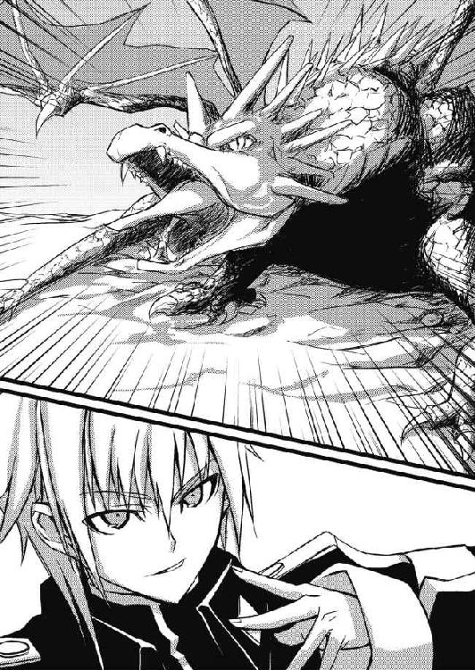
ガッ！
飢魂の剣が、竜の後頭部に叩きつけられる。
しかし、巨竜の鱗は妖剣の刃さえ通さない。
巨竜は煩わしそうに金色の目を細めると、首を捻ってサキを地面に振り落とした。
「効いていないか、やっぱ」
石畳に叩きつけられたサキは、起き上がりながらニヤリと笑う。
「サキ！ 緋色の風をまとえ！」
住民を誘導しながら、イーファが叫んだ。
サキは剣を水平に構え、目を閉じて意識を集中する。
「......我が身に宿りし、闇の力よ！ 血と苦悶と悲嘆に飢えし、悪しき存在よ！ 我......汝を解放す！」
だが。
いつもなら、サキの声に反応して巻き起こるはずの輝く旋風が、全く発生しない。
「おい！ 何やってんだ⁉」
自分の中に存在する、至高邪妖に向かって怒鳴るサキ。
『......サキ、ここは退け』
内なる声は、意外な言葉をサキに投げかけた。
「ふざけるな！ 力を寄越せ！」
サキは声を荒らげる。
『よいか、サキ。あれは見た目と違い、ただの竜ではない』
声は説明した。
「どういうことだ⁉」
『あれには......邪妖が憑依ている』
「街の人たちを変異させたみたいにか⁉」
『人間どもに憑依した卑妖どもとは、比べ物にならぬ能力をあやつは持っておる。彼奴は百八柱の邪妖神のうちの一柱じゃ』
「お前でも勝てないくらいに強いってこと⁉」
『無論、わらわのような至高邪妖と比べれば、赤子に等しい脆弱な存在よ。だがな、あれを倒すだけの力を、今のお前の肉体では受け入れることができない』
「ありがたくて涙が出る話だね」
『理解したなら、退け』
もう一度繰り返す声。
しかし。
「退いてたまるか！」
サキは飢魂の剣を握り直し、再び竜に立ち向かってゆく。
『わらわの言うことに従え！』
「そうはいかないんだよ！」
炎の息を避けながら、竜に肉迫するサキ。
「ここは......薄汚い腐った街だけど......それでも、僕の生まれ育った場所なんだ！」
サキはとうとう、ディープスガッセに対する複雑な感情を吐露した。
『愚か者！ 力は貸さぬぞ！』
「上等！」
身体の下に潜り込み、巨竜の腹を狙うサキ。
だが、一番鱗の薄そうな腹の部分でも、剣を撥ね返すには十分な硬度がある。
キンッ！
通常の鎧や兜なら一刀両断にできる妖剣も、鱗の表面にはかすかな傷をつけられただけだ。
ブンッ！
巨竜は前進しながら方向を変えると、尻尾でサキの身体を弾き飛ばした。
「くっ！」
瓦礫に叩きつけられたサキは、飢魂の剣を支えにして何とか立ち上がる。
「阿呆が！」
アギが投げナイフで巨竜を牽制しながら、サキに向かって怒鳴った。
「もう止せ！ 無理だ！」
「......嫌だね。これからが面白いんじゃないか」
口元の血を拭って頭を振ったサキは、足を引き摺りながらも巨竜の前に立つ。
「さあ！ お前に邪妖神が憑依ているなら、その力を見せてみろ！」
サキは飢魂の剣を頭上高く掲げた。
「急いで！ あっちだ！」
イーファは背後で戦うサキの様子を気にしながらも、懸命に住民を避難させていた。
「ほら、しっかりして！」
転んだ老婆に手を差し出すイーファ。
「急いでください！」
「あ、ありがとよ」
イーファに礼を言った老婆は、その肩越しにサキの姿を認めると、カッと目を見開いた。
「あれは......サキ？ ......サキじゃ！」
「お、お婆さん？」
老婆の様子に戸惑うイーファ。
「みんな見とくれ！ あれはサキじゃ！ 兄姉殺しのサキだよ！」
老婆は髪を振り乱して、竜と戦うサキを指さした。
「あいつが、あいつが現われたからだよ！ あいつが姿を見せると、必ず不幸なことが起こるんだ！」
「......そうだ！ あいつ、サキじゃねえか！」
別の住民も、サキに気がついて口々に言い出す。
「あの屑が！」
「人殺し！」
「あの畜生めが！」
「戻ってきやがったのか！」
広がってゆく非難の声。
ディープスガッセの住人たちは瓦礫の中から石を拾い上げると、巨竜と戦うサキに向かって投げ始める。
「やめろ！」
悲鳴に近い声を上げるイーファ。
しかし、人々には少女の声はとどかない。
「あいつのせいだ、あいつの！」
「この疫病神！」
「死んじまえ！」
憎しみは、今や巨竜ではなく、サキに向けられていた。
杖を突いた老人から小さな子供までが、サキの後ろ姿に心無い罵声を容赦なく浴びせる。
「やめるんだ！」
イーファは両手を広げ、石を投げる人々の前に立ちはだかった。
ガッ！
石のひとつがイーファの額に当たり、血が飛び散る。
「！」
崩れ落ちるイーファの姿に、一瞬、ディープスガッセの人々の石を投げる手が止まった。
「......そんな言い方をするな」
イーファは額を押さえながら立ち上がる。
「あの子は......サキはこの街を守ろうと......みんなを守ろうとして戦っているんだぞ！」
涙を溢れさせながら、少女はサキを指さした。
「それなのに！ どうしてそんなことが言えるんだ！」
「......サキが？」
「俺たちを守るために？」
顔を見合わせる住人たち。
「私の言葉を信じなくてもいい！ だけど、この目の前の事実だけは信じて欲しい！」
イーファはそう住民たちに告げると、サキの援護に向かった。
「サキ！」
「イーファ⁉」
少女が自分のそばに駆け寄って来るのを見たサキは、声を張り上げた。
「何してんだよ⁉ こっちは危険だから下がってて！」
「危険？」
イーファは小剣をスラリと抜いた。
「私が不死だということを忘れたのか？ それに、君に無音の剣を教えたのは私だ」
「けどね！」
「話は後だ！」
イーファは瓦礫の陰を走り、竜に近づいてゆく。
「くそガキ！ 俺たちは右に回り込んで竜を牽制する！ お前はイーファを援護しろ！」
アギがそう怒鳴って、トリストとともに竜の側面に移動する。
「分かった！」
サキは答え、イーファを追った。
「で、作戦は？」
サキは瓦礫を背にイーファと肩を並べると、先日、凝着したばかりの〝癒しの霧〟の紋章を使い、自分の脚と背中の傷を回復させた。
「あの巨竜も、口の中だけは硬い鱗に覆われていない。口の中に飛び込み、軟口蓋から脳を貫く」
イーファは手短に説明する。
「あのね、至近距離で炎を吐かれたら、一瞬で灰だよ？」
「私なら、再生能力を限界まで使って、しばらくなら炎に耐えられる......と思う」
「と、思う⁉」
「さっき計ったけれど、一旦火を吐くと、あいつが次に火を吐けるようになるまで、十呼吸ほどの時間がかかる。その間に、口に飛び込めば何とかなる......かも知れない」
「......分かった」
サキは呆れながらも、他に打つべき手がないことを理解した。
「まず、僕が囮になって炎を吐かせる。僕が合図を送ったら、君はあいつの口に飛び込むんだ。いいね？ 合図を待たずに、自分の判断で動かないこと」
「了解」
うなずくイーファ。
「よし！」
サキは瓦礫から飛び出し、炎の息の攻撃範囲ギリギリまで近づいた。
竜はその動きを金色の瞳孔で捉えると、頭を下げ、高温の炎が地表を舐め尽くすように息を吐く。
瓦礫を吞み込む火炎の波。
サキは素早く後退してこれを避ける。
そして。
「イーファ！ 今だ！」
炎の息が途切れるの見て、サキは左手を振り上げた。
「よしっ！」
斜め後方の死角に回り込んでいたイーファは、開かれた竜の顎に向かって、低い姿勢で疾走する。
「一......二......三......行ける！」
だが、その時。
「あれは⁉」
サキは竜の喉の奥深くに、炎が渦巻いているのを見た。
『......あれをただの竜だと思ったのが間違いよ。邪妖はおぬしが考えているよりも遥かに狡猾な存在なのだ』
内なる声が、嘲笑を浴びせる。
『流石にあの娘も死んだな。一瞬のうちに灰にされては、例の驚異的な再生能力も間に合わぬ』
「イーファ！」
サキは叫んだ。
「騙された！ あいつはもっと短い間隔で炎を吐ける！」
「！」
巨竜の牙に手がとどく位置まで接近していたイーファは、その言葉にハッと振り返る。
その瞬間。
ブワッ！
巨竜は四枚の翼を巧みに使って突風を巻き起こし、イーファの身体を地面に叩きつけた。
シュウウウウウッ！
一旦、大量の空気を吸い込んで、竜は炎の温度を極限まで上げる。
「！」
飛び出すサキ。
トリストとアギも駆け出すが、二人の位置からでは完全に間に合わない。
『よせ！ 愚か者！ あの娘と心中する気か！』
内なる声が怒鳴った。
だが、サキはイーファのところまで辿りつくと、その身体の上に覆い被さる。
そして、口の中が白く輝くまで待っていた巨竜が、サキたちに向かって超高温の炎を放とうとしたその時。
ギュンッ！
巨大な剣が回転しながら風を裂いて翔び、竜の目蓋の辺りに命中した。
反射的に振り返る巨竜。
ゴオオオオオーッ！
頭の向きが変わり、炎の息がサキたちからわずかに逸れる。
「⁉」
顔を上げ、見覚えのある大剣が飛んできた方向を見るサキ。
その目に飛び込んできたのは、撥ね返ってきた大剣を拾い上げるディアンの姿だった。
「お楽しみのところ邪魔したか、相棒？」
サキに向かって声をかけるディアン。
「遅いって。一番乗りは〝銀の一角獣〟に持っていかれたよ」
サキはイーファを引き起こしながら微笑み、肩をすくめた。
「主役は最後に登場するのさ」
「よく言うねえ。ヴィスナちゃんとロレルは？」
駆け寄ってきたトリストが尋ねる。
「もうすぐ来るぜ、ほら！」
ディアンは一同の後方を指さした。
「ありゃあ？」
目を細めて、その方向を見るアギ。
八頭の馬に曳かれ、こちらに向かって大通りを進んで来るのは、炎に赤く照らされた、台車付きの巨大な弩だった。
台車の上に斜めに設置された弩には、人間の胴ほどの太さに縒り合わされた弦が張ってあり、その引き絞られた弦には、鋼鉄製の鋭い鏃を持つ、全長八馬身ほどの矢が番えてある。
そして。
「おやおや、みなさん、ちょいと苦戦してるみたいじゃないの？」
台車の上に立ち、弩に右足の踵を引っ掛けた中年の男が、サキたちを見渡して声をかけた。
「やっほう、みんな！」
「サキくん！ 大丈夫ですか⁉」
中年男の両脇には、ヴィスナとロレルの姿がある。
「いやあ、巨竜に動じない、肝の据わった馬を集めるのに手間取りましてね」
ロレルが頭を搔いた。
「さあ！ さっさと片付けて吞みに行こ！」
ヴィスナはそう言うと、弩の弦を固定している鉤の前に移動する。
グオオオオオオオッ！
巨竜は大弩を威嚇するように翼を広げて咆哮を上げると、炎の息を吐きつけた。
だが、正確に位置取りを計算してあったのか、炎の息はギリギリのところで大弩にとどかない。
「お前さん、ちぃと人間様を舐め過ぎたね」
中年男はニヤリと笑うと、右手をさっと挙げた。
それを見て、ヴィスナが大弩の弦を留めていた鉤に斧の背を打ち込んだ。
「行っけええええええっ！」
鉤が外れ、引き絞られていた弦の反動で、巨大な鋼鉄の矢が飛ぶ。
大弩から放たれた矢は、熱気を帯びた空気を貫いて飛び、巨竜の口に突き刺さった。
ズシーンッ！
大音響とともに仰向けに倒れた巨竜は、矢を抜こうと前脚をバタつかせのたうち回る。
「ほら、坊主！ 止めだ！」
中年男は、サキに向かって鋭い声で命じた。
同時に、サキの回りの空気が震え始め、輝く疾風がその身体を包み込む。
「お前......」
緋の衣をまとったサキは、内なる声に話しかける。
「力を貸してくれるのか？」
『今度だけはおぬしの我が儘に付き合う。次はないからな』
内なる声は素っ気なく言った。
「ひとつ借りだね！」
サキは巨竜の腹の上に飛び乗ると、頭の方に向かって走りながら前傾姿勢を取る。
「切り裂けっ！ 無音の剣！」
ギシャアアアアアアッ！
赤い閃光が奔り、巨竜の喉元を飢魂の剣が抉った。
頸骨と頸動脈が同時に断ち斬られ、鮮血が噴き上がる。
バシッ！
巨竜の前脚に弾き飛ばされて宙を舞う、サキの身体。
「おっと！」
地面に叩きつけられる寸前、それを受け止めたのはアギだった。
「......ありがと」
血塗れの顔で笑うサキ。
「るせえ、くそガキ」
アギはサキを地面に下ろすと、その頭をこぶしで小突いた。
オオオオオーン！
大量の血を流した巨竜は一度だけ頭を高く掲げて咆哮すると、そのまま動きを止めた。
「......やったのか？」
つぶやくイーファ。
「僕らってさ......倒しちゃったの、巨竜を？」
信じられないといった顔で、トリストは頭を振った。
と、その時。
「やれやれ、生身で真正面から巨竜とぶつかろうなんてさあ、お前さんたち、可愛いくらいに時代遅れだねえ」
大弩の台車の上から、ヴィスナやロレルとともに中年男が下りてきて、九尾の猫の面々を見渡した。
「これからはさ、個の〝武〟の時代じゃない。人を駒のように動かす、〝軍〟の戦の時代だよ。......ま、もっとも、あたしもこの時代に乗り遅れたクチだけどさ」
「......何だ、このオヤジ？」
疑いの視線で中年男を見るアギ。
「おま、いえ、あなたは？」
イーファが尋ねる。
「挨拶が遅れたねえ。あたしはメヴィル・オークショット。九尾の猫の新任副官だよ」
中年男はだらしない敬礼をして、少女にウインクした。
「ま、職務怠慢でクビにならない程度には働くんで、みなさん、仲よくやっていきましょう」
「副長⁉」
絶句するサキたち。
「このオッサン、じゃなかった、副長が城の倉庫を開けさせて、この大弩を引っ張り出してくれたんだよ」
ヴィスナが説明する。
大弩は、攻城戦などに使用される大型兵器のひとつ。
ヒベルニア侵攻作戦の失敗後、王城の倉庫の奥深くで眠っていたものだ。
「まあ、多少手荒いやり方ではありましたが」
と、番兵十数名を殴り倒して強引に強奪してきた事実を婉曲に説明し、眼鏡を押し上げるロレル。
「後の交渉は隊長に任せましょう。今頃は十二人委員会に出向いているはずですから」
「あの人、余計なこと言ってお偉さん方、怒らせそうだよね～」
隊服の埃を払いながらトリストが言って、一同が笑った時。
『サキ......』
内なる声が話しかけた。
『あの巨竜の頭のところへ行け。話がしたい』
「巨竜の？ まだ生きてるのか？」
『いいから』
サキは声に従い、巨竜の目のそばに移動する。
『卑妖どもを人に憑依させていたのは貴様か？』
内なる声は、竜に向かって尋ねた。
（如何にも）
竜はサキの頭の中に直接答える。
『目的は？』
（人々の間に不信と憎悪を撒くために。目的は達せられた）
『小賢しいことよ。わらわ以外の至高邪妖の、どちらかに命じられたか？』
（然り）
巨竜は認め、逆に尋ねる。
（二柱の至高邪妖は、あなたの動向に不審の念を抱いておられる。我が眷属の頂点に立つものであり、器を手に入れた身でありながら、いささか躊躇が過ぎると）
『わらわが動くべき刻は、わらわ自身が決める』
（まるで人のような思考をなされる）
心に語りかける巨竜の声が、面白がるような調子を帯びる。
（だが、世界がそう長くは待てぬことをご存知のはず。あなた以外の二柱は、すでに各々の〝破壊者〟の覚醒を終えられている。全ての邪妖はひとつの目的のために生まれたもの。ひとつにして数多、数多にしてひとつ。努々、お忘れなきよう......）
『もうよい』
内なる声は巨竜の言葉を遮った。
『安らかに眠るが良い。......サキ、封印を』
「封印？」
『飢魂の剣を、その竜の身体に突き立てればよい。あとは剣自身がやってくれる』
「ああ」
サキは声の命じるままに、飢魂の剣を巨竜の眉間に突き通す。
すると。
飢魂の剣の刃から紅い、霧のようなものが現われ、それが巨竜の体表を這うように広がっていった。
やがて、霧は竜の身体を完全に包み込むと、再び、飢魂の剣に向かって収束してゆく。
「......おやおや、お前さん、随分と不思議なことができるんだねえ」
その様子を見ながら、メヴィルは無精髭を撫でた。
「どうやら、その妖剣の力だけって訳でもなさそうだ」
「副長になる人なら、アラン隊長から聞いてるでしょう？」
サキは巨竜の身体から剣を抜いて鞘に収めると、自分のこめかみを指で突ついた。
「僕のここには、小煩い別の存在が住み着いているんだ」
「いや～、それでも直接、自分の目で見ると驚きでね。......ところで、少年」
メヴィルはニッと笑ってから、ほんの付け足しのように言った。
「お前さん、早いとこ、治癒の紋章を使った方がいいんじゃない？」
「僕は別に何ともないですよ」
と、言ってから、サキは背中の鈍痛に気がつく。
「......って、あれ？」
「ほら、だんだん痛くなってきたでしょ？ お前さんみたいな坊やはね、戦いにのめり込むと何にも感じなくなっちゃう。で、手遅れになってから気がつくワケ」
サキの瞳に映るメヴィルの猫背姿が、次第にぼやけ始める。
「ヴィスナ！」
ディアンが鋭い声で、治癒系の紋章を残しているヴィスナを呼んだ。
「サキ！」
崩れ落ちるサキを抱きしめるイーファ。
サキはその腕の中で意識を失った。
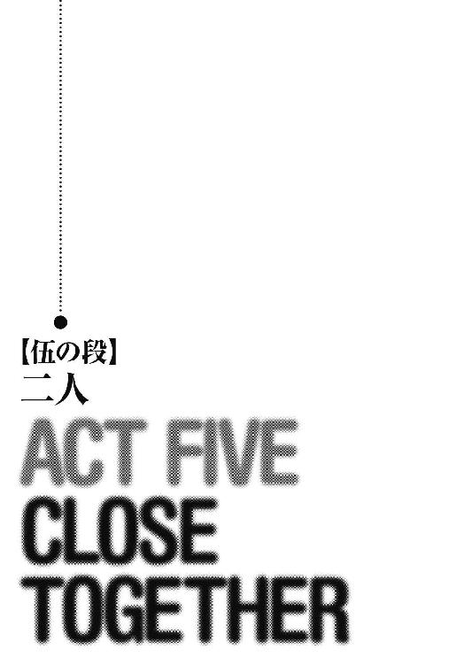
「君は私と違って不死じゃない。無理はするな」
粋蜜楼の小さな部屋で、丸椅子に座らされたサキはイーファの手当てを受けていた。
背中の火傷は内臓近くまで達していたが、ヴィスナの治癒系紋章が功を奏し、今ではやや皮膚に赤みを残す程度までに回復している。
「反省してる」
ヨルカ特製の軟膏を塗られながら、ヒリヒリする感覚にサキは顔をしかめた。
「まったく、ヴィスナがすぐに治癒の紋章を使ってくれたからよかったものの、そうでなければ今頃は......」
「心配した？」
「余計な手間を増やすなと言っているんだ！」
「だったらさ、粋蜜楼の他の子に手当てさせればいいじゃないか？ 僕の手当てしたいって言ってくれた子、他にもいたし」
サキは、自分を粋蜜楼に運び込むのを手伝った、赤毛の娘のことを引き合いに出した。
「キカは駄目だ！ あの子は......その......惚れっぽい」
イーファは頭を振る。
「......ふうん」
「ニヤニヤするな！」
イーファは膏薬を張った火傷の上をぺチリと叩いた。
「ったあ！」
飛び上がるサキ。
その時。
『......吞気なものよ』
サキの内なる声が、突然、二人に話しかけてきた。
「お前か？」
サキはうんざりした表情になる。
『どうした？ 二人きりではないことを忘れていたか？』
皮肉げな口調の声。
「呼んでもいないのにどうしたんだ？ 淋しくなったのか？」
『痴れ者が。おぬしは思慮が足りぬわ。全てが無に帰すところだったのだぞ。おぬしの無分別な行ないのために、幾世紀も費やして慎重に作り上げた〝破壊者〟の器が失われるところだったというに』
「破壊......者？」
眉をひそめるイーファ。
「〝破壊者〟って何だ？」
サキは尋ねる。
『〝破壊者〟とは、世界に滅びをもたらす者。世界自身がその誕生を待ち望んだ、預言の子のことよ』
「預言だって？」
『分かり易く言おう。おぬしはこの世を滅ぼすという目的のためにのみ、生み出された存在なのだ』
「......僕が......世界を滅ぼす？」
途方に暮れた表情になるサキ。
「サキ、しっかりしろ！」
イーファがサキの肩をつかむと、その身体に巣食う声に向かって怒鳴った。
「妙な考えをこの子に吹き込むな、化け物！」
『化け物はそちらであろう、不死の小娘よ』
内なる声は嘲笑した。
『サキよ、滅びは、世界という存在そのものが望んでいることだ。人という害虫に喰い荒らされ、無限の苦しみの中にある世界は、死の静寂と平穏を望んでいるのだ。見よ！』
「！」
唐突に、サキの視野からイーファの姿や粋蜜楼の部屋の光景が、ふっと消え去った。
（これは......？）
身体がまるで宙に浮いているような感覚を覚えるとともに、サキは一瞬前までとは全く別の場所に自分がいることに気がつく。
瞳に映るのは、突風の吹き荒ぶ黄色い天空と、その下に広がる、赤く荒れ果てた大地。
そして、草一本生えぬその大地を覆う、何百万、何千万、いや、無数と言っていいほどの人の群れだった。
髪を乱し、薄汚れた顔に狂気の表情を浮かべながら、彼らはお互いに殺し合い、肉を喰らい、血を啜っているのだ。
妊婦の腹を割き、赤子を取り出してそれを頭から齧る男。
少女の四肢を引き千切り、その肉に歯の抜けた口でかぶりつく老婆たち。
そこには、親子の情も、男女の愛も、喜びも、慈悲も、希望も存在しない。
地を満たすのは、苦痛と憎悪、飢えと怨嗟、そして怒りだ。
「......何なんだよ、これは？」
吐き気を覚えるサキ。
『これが今からそう遠くない、世界の未来。人間という矮小な創造物により、破壊され尽くした未来なのだ』
暗転。
一瞬後、サキは再び、粋蜜楼に戻ってきたことを悟った。
『......あらゆる生物は人により殺され、天は哭き、地は悶え苦しむ。このままゆけば、世界はこのようなおぞましい光景に覆い尽くされる。この苦しみから世界を救い、平安なる終末をもたらすことがおぬしの使命よ』
内なる声は続けた。
『よいか、サキ。〝破壊者〟というのは、滅ぼされることを恐れる人間どもが名づけた呼び名に過ぎぬ。我々の言葉では、おぬしは〝救済者〟。世界を苦しみから救う存在なのだ。そして、おぬしは戦う。お前と対立する存在、世界の意思を無視し、徒にその苦しみを長引かせようとする者、〝調停者〟アラン・シーヴァルドと！』
「噓だ！」
イーファが叫ぶ。
「サキはそんなことはしない！ お前の噓に惑わされもしない！」
『噓ではない』
声はイーファに向かって告げた。
『現に、お前たち闇隊士の長や、アランは知っておるぞ、サキが何者であるのかをな。お前がサキと組まされたのは、サキを監視するためだったのだろう？』
「僕を......監視？」
イーファの顔を見るサキ。
「いや......違う」
イーファは首を振る。
だが、突然、ヨルカが自分とサキを組ませたことや、毎晩、サキとの行動を逐一報告させていたことを思い出す。
何かあるのでは、と全く考えなかったと言えば、噓になる。
『勘づいていなかったとは言わせぬぞ』
「......イーファ？」
「違うんだ、私は......」
『とんだ女狐よ』
声は高らかに哂う。
「サキから出てゆけ！」
イーファはサキの胸倉をつかんで、声を震わせた。
『それはできぬ相談よのう。たかだか出会って数か月の貴様より、サキとわらわの絆はずっと深い。わらわこそ、サキの母であり、愛人なのだ。貴様の入り込む余地などないわ！』
「おい、いい加減にしろ！」
サキは叫んだ。
『ほう、その女を庇うか？ だがな、サキ、おぬしはわらわに逆らうことはできぬ、永遠に』
畳み掛ける声。
『兄を刺し殺した時のことを覚えておるか？ 姉を斬った時のことはどうだ？ その娘に、思い出話をしてやってはどうだ？』
「黙れ！」
『小僧、お前がこの肉体を支配できるのは、わらわの赦しの下のみであることが分からぬと見えるな』
「黙れって言ってるだろう、この化け物！」
『......口のきき方に気をつけよ』
「......くっ！」
突然、サキは自分の身体が自分の意思の下から離れるのを感じた。
「サキ、どうした⁉」
『おぬしには、娼婦には娼婦の扱い方があることを教えねばならぬな』
「イー......ファ、離れ......ろ、僕から......」
サキの手が、その意思に反してイーファの肩を乱暴につかんだ。
「サキ？」
怯えの色を瞳に浮かべるイーファ。
サキは意識を集中し、少女の肩から自分の手を引き離す。
『ほう、なかなかの意志。さすがは〝破壊者〟、いや、〝救済者〟の器』
「僕は......〝破壊者〟でも〝救済者〟でもない！ 勝手に呼ぶな！」
『運命からは逃れられぬ』
サキの身体はイーファを寝台に突き倒し、その上に覆い被さった。
「サキ、止めろ！」
もがくイーファ。
その上衣を、サキの手は乱暴に剝ぎ取り、胸を顕わにする。
『おぬしは無力だ、小僧。それを思い知れ』
イーファの首筋を強く嚙み、両手首を右手でつかんで頭上に捩じ上げながら、声に操られたサキはスカートを左手で乱暴に引き裂いた。
『おぬしは最初から、この娘をこう扱いたかったのだろう？ 己の欲望に忠実になれ』
「止めろ！」
サキの身体は、強引に少女の脚の間に割り込んでゆく。
その指が強く白い胸の膨らみに食い込む度に、苦痛に顔を歪めるイーファ。
『穢せ！ 壊せ！ 蹂躙せよ！ この牝も、心の奥底ではそう望んでおるわ！』
操られたサキの手は、無慈悲にも少女の身体の繊細な部分を蹂躙してゆく。
「......大丈夫だ......わたしは大丈夫だから......」
イーファは顔を逸らして、唇を嚙む。
「だから......こんな奴に屈するな！」
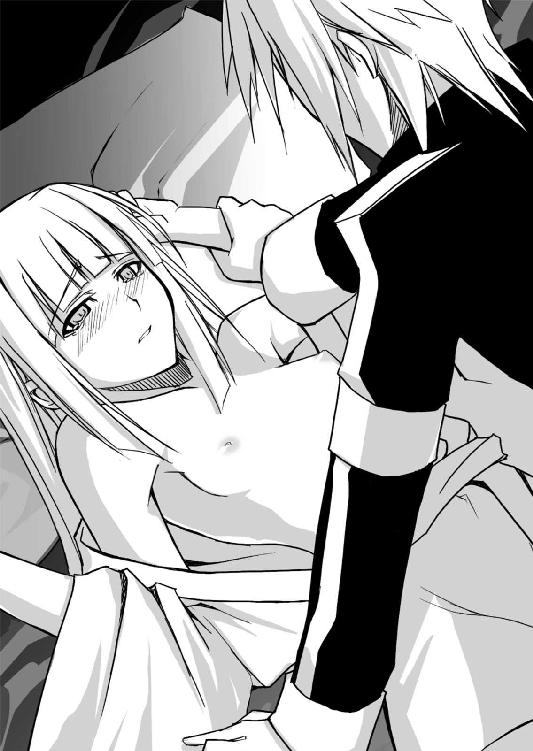
少女の頰を濡らすものに、サキは気がついた。
（泣いてる......イーファが......泣いて？）
「やめろおおおおおおっ！」
サキはイーファを突き放して壁を背にすると、飢魂の剣をつかんでその血色の刃を自分の首に当てた。
「これ以上続ける気なら、この喉を裂く！」
内なる声に抗う、サキの意志。
飢魂の剣を握る腕の筋肉が、千切れそうなほど張り詰める。
「破壊者だか、救済者だか知らないけど、この身体が必要なんだろ、お前は⁉」
『......ふ、そこまで逆らうか。......まあ、それもよい』
内なる声は唐突に、身体の支配を解いた。
『小娘、よく覚えておけ。サキはわらわのもの。近づけば傷つくだけだぞ』
声はイーファにそう告げると、サキの意識の奥に消えた。
「......サキ」
震えの止まらぬ腕で胸のあたりを隠し、少女はゆっくりと身体を起こす。
「ごめん」
サキは背を向けたまま、小さな声で言った。
「だ、大丈夫だ。私は不死身だ。忘れたのか？」
気丈に笑って見せるイーファ。
「......これ」
サキは破れたイーファの上衣を拾って手渡すと、扉の方に向かう。
「どこへ？」
「しばらく、ひとりになりたい」
背を向けたまま、サキは告げる。
「駄目だ！」
立ち上がったイーファは、崩れ落ちるサキの頭を抱き寄せた。
「こんな時に......ひとりになっては駄目だ！」
「......イーファ」
「何も言わなくていいから......今はこのまま......」
サキを抱きしめたまま、ゆっくりと寝台に座るイーファ。
「うん。......少し、疲れたよ」
サキは目を閉じ、そのままイーファに身体を委ねる。
半分開いた窓から覗く月を見上げながら、イーファはそっとサキの髪を撫でた。
＊ ＊ ＊
数日後。
トロンヘイム王城の宮廷では、御前会議が開かれていた。
ここ数日の国境での軍の動きや、国内情勢の報告を受けた後、ハディング王はアラン・シーヴァルドのことを話題に取り上げた。
「評判は良いようです」
王とアランの微妙な関係を熟知している内務大臣が、慎重に報告する。
「叛乱志士どもも、殿下には敬意を払っているようで」
ハディング打倒を目論む叛乱志士も、一時は王都の上流階層の半数に迫る勢いであったが、中心人物のひとり、ダーレン・ハザンの死後、その力は急激に衰え、組織の構成員も数百名程度にまで減少している。
志士たちの一派には、好敵手として、また正統なる王家の後継者として、アランに一目置く人間が多いことは周知の事実だ。
「昨日の竜騒動でも、大公殿下の中隊はそれなりの成果を上げており、巷では、先王の再来との噂も」
続いて家臣のひとりが、腕組みをして自分たちを睥睨するハディングに上目遣いで報告する。
「ふむ」
軽く頷く玉座のハディング。
防御上、明り取りの窓を少なくしてある王の間は薄暗く、王の顔は陰になるので、家臣たちの位置からはよく見えない。
大臣たちは必死になって、ハディングの表情を読み取ろうと目を凝らす。
「......やはり、あのお方をこのままにしておくのは危険かと」
内務大臣は続けた。
「だが」
ハディングはあごに手をやり、居並ぶ臣下を見渡す。
「曲がりなりにも、アランはヴァイマーヘン大公。始末するにも大義名分が要る」
「恐れながら」
王都の治安判事が発言した。
「実行不可能な作戦の指揮を執らせ、その失敗を待つのが上策かと」
「それはどうであろう？ 今のアラン・シーヴァルド殿下は一介の中隊指揮官。指揮の執れる作戦の規模は限られる」
州長官のひとりが異議を唱える。
「それならば......」
軍事代官が立ち上がった。
「少人数による奇襲作戦は如何でしょう？」
「心当たりがおありか？」
抜け目のない表情を見せる治安判事。
「ヒベルニア女王のグウェント訪問。この千載一遇の機会を狙い、女王の身柄を我らの手中に収める計画があります」
軍事代官は頷く。
「隠密裏に敵国に侵入する作戦ですので、成功の見込みは少なく、それ故、廃案の方向で検討されていた計画ですが」
「ほう？」
ハディングは興味を持ったような顔つきになる。
「もともと、大公殿下の中隊が仕入れてきた情報で立案されたもの。指揮を執るには、十分な理由となるでしょう」
「しかし、ヴァイマーヘン大公はかなりの強運の持ち主。万が一、その作戦で成功を収めてしまえば、国民の人気が一層高まるのでは？」
州長官が質問した。
「その点についてはご心配には及びませぬ」
軍事代官は頷く。
「何か手立てが？」
と、別の家臣。
「無論。親愛なる大公殿下が、敵国ヒベルニアから生きて帰れる可能性は皆無と言ってもよいですな。......いかがでしょう、陛下？」
軍事代官はハディングの裁断を仰ぐ。
「好きにするがいい」
ハディングは立ち上がると、敬礼する臣下たちに背を向けて私室に向かう。
その時。
ほんの一瞬、家臣たちの方を振り返った王の瞳が、暗がりの中で紅く光った。
サキの瞳に宿る、あの邪悪な炎と同じ色に。
だが、そのことに気がついた者は、誰もいなかった。
＊ ＊ ＊
「その娘は？」
地下牢の責任者である蒼白い顔をした男は、ヴィスナが連れてきた少女に好色そうな目を向けた。
この日、ヴィスナは、貴族の子女らしい、金糸をあしらった豪奢な衣装に身を包んだリネットとともに、王城の地下にある牢を訪れていた。
城門を抜け、さらに内壁の城門を潜ったところを、本丸に向かわずに陽の当たらない細い回廊を進み、突き当たりの螺旋階段を下りた先が、トロンヘイム王城の地下牢である。
明かりは格子のついた小さな窓から、かすかに差し込むのみ。
空気は淀み、湿って、黴と汗と腐敗の臭いが常に立ち籠めている。
「ああと、ヴァイマーヘン大公殿下のとこの家人だよ。登城されている大公殿下が用事を済ます間、城を見学させてやってくれって」
ヴィスナは、ここに来るまでに考えてきた言い訳を口にした。
「見学？ こんな地下牢を？」
「いいだろ？」
銀貨が数枚、さり気なく責任者の手に握らされる。
「......まあ、よかろう」
責任者は、懐にその銀貨をしまい込んだ。
「ただし、問題は起こすなよ」
「はいはい、分かってま～す！」
ヴィスナは肩をすくめると、リネットの手を引いて、狭い螺旋階段をさらに下りていった。
「ごめんね、こんなとこまで引っ張ってきて」
磨り減った、急な石段を一歩一歩慎重に進みながら、ヴィスナは言った。
「けど、確かめたかったんだ。あたしたちのしてることが、本当に正しいことなのか」
変異の虞あり、とされる者を収容する法令が施行されて、十日余り。
九尾の猫も、多くの人々を地下牢に送り込んでいた。
地下牢に入れられた者の中には、老婆や、幼い子供、病人もいる。
ヴィスナは、こうした人々が本当に変異の可能性があるのかがどうしても気になり、リネットに頼んで来てもらったのだ。
「どのくらいまで近づけば、邪妖が憑依てるって分かる？」
蒸し暑い空気に息苦しくなるのを感じながら、ヴィスナは尋ねる。
「牢の近くまで寄れれば、姿が見えなくとも感じ取れると思います」
こちらも苦しそうな表情を浮かべるリネット。
石段をかなり深くまで下りた二人は、ほとんど岩盤を掘り抜いただけの細い回廊に辿りついた。
鼻をつく糞尿の臭い。
床に汚水が溜まり、滑り易くなっている。
回廊の突き当たりには、唯一の光源である小さな篝火が焚かれており、その前に置かれた木製の椅子に、上半身を剝き出しにした筋肉質の牢番が座っていた。
その位置からはさらに左右に回廊が延びており、小さな牢が幾つか並んでいる。
牢番はちょうど、その両方の回廊を見渡せる位置にいるのだ。
「何者だ？」
リネットたちを見て、誰何する牢番。
「守備隊の者だよ。ヴァイマーヘン大公の身内の方が見学したいって言うんで、そのお供なんだ」
ヴィスナは先ほど牢の責任者に聞かせたのと、ほとんど同じ内容の台詞を繰り返す。
「見学？ 貴族様は随分と物好きなことだな」
「......いいだろ？」
と、ヴィスナはまた銀貨を握らせる。
「仕方ねえ」
牢番は銀貨をポケットに捻じ込むと、右手に延びる回廊の奥を指さした。
「今、死体を運び出すとこだ。見な」
錆付いた蝶番が軋む音とともに、回廊の右手の格子のついた重そうな扉が開かれた。
出てきたのは、二人の男。
小さな遺体を板に載せ、運び出して来るところだ。
「毎日、そうさな、ああいう死体が三十から四十、運び出されるんだ。結構、キツい仕事だぜ」
牢番は愚痴る。
「............」
目の前を運ばれてゆく遺体に、言葉を失うリネットとヴィスナ。
死後丸一日以上は経っているらしく、その少女の遺体は変色し、異臭を放っている。
小さな手には、赤い服を着た布製の人形。
それが、ポロリと少女の手から落ちたのを、リネットが拾い上げる。
「どう？」
声を抑えて尋ねるヴィスナ。
「......いえ」
リネットは頭を横に振る。
「この辺りの牢には、憑依されている人は、ひとりもいません」
「全員、変異の可能性はないってこと？」
「はい。尤も、卑妖は無作為に憑依しているようですから、この中から変異者が全く発生しないとは言いきれませんが......」
扉につけられた小さな窓から中を覗くと、普段は独房として使われているはずの狭い牢に、十四、五人が詰め込まれ、座ることすらできないでいるのが見える。
淀んだ蒸し暑い空気に耐え切れず、半裸になって呻く人々。
不潔な牢内には、何かの病気が蔓延しているのか、膿を持った炎症を狂ったように搔き毟っている者もいる。
「病人がいるじゃないか！ 医者に見せないと！ ねえ！」
ヴィスナは牢番に訴えた。
「おいおい、冗談言うなよ。そんな勝手なことをしたら、俺が上役に叱られるだろ？」
牢番はせせら笑う。
「けど、このままだと死ぬよ！」
「死んでもらわなきゃ、新しい囚人を入れられねえだろうが？ 見ての通り、どこの牢も満員なんだぜ？」
ぺっと唾を吐く牢番。
「生きて出られるのはな、金のある奴だけさ」
「......こんな牢、破ろう」
ヴィスナは、隠し持ってきていた短剣の柄に手をかける。
「駄目です」
小声で制するリネット。
「嫌だ、やる！」
と、ヴィスナがリネットを押し退け、短剣を抜こうとしたその時。
「......止しておけ」
力強い手がヴィスナの手首を握り、短剣を鞘に戻させた。
「......！」
ヴィスナが振り返ると、そこにあったのはディアンの姿だった。
「今、事を起こせば、隊長に迷惑がかかる」
不審げにヴィスナに向けられる牢番の視線を遮る位置に、ディアンは立つ。
「お前の血の気の多さを心配して、追ってきて正解だったな」
「この扉の向こうで、死にかけている人がたくさんいるんだよ！ 街の人を守るのが守備隊の仕事だろ！ なのに！」
「冷静に」
リネットがそっと、ヴィスナの頰を撫でた。
「......あ」
ヴィスナは、自分が泣いていることに気がつく。
「ここで貴女が戦っても、助けられるのはほんの数十人でしょう。アランがきっと、こんな暗黒の時代に終止符を打ってくれます。それまで待って」
「......できない」
ヴィスナは頭を振った。
「あんたの言うこと、信じない訳じゃないけど、あたしは目の前で死にかけてる人を見捨てることなんてできない！」
ドスッ！
もう一度短剣を抜こうとしたヴィスナの鳩尾に、ディアンのこぶしが打ち込まれる。
「うっ！」
小さな呻き声とともに、崩れ落ちるヴィスナ。
「済まないな、こいつ、気分が悪くなったみたいで」
ディアンは振り返り、牢番に告げた。
「無理もねえ。俺もここに配置された最初の日は、吐き通しだったからな」
頷く牢番。
「さあ、帰ろう」
ヴィスナの身体を抱きかかえ、ディアンはリネットを振り返る。
「はい」
赤い服の人形を握り締めたリネットは、小さく頷いた。
「人々に憑依いて変異させていた邪妖は」
城を出て、詰め所に向かう途中、リネットはディアンに語っていた。
ヴィスナは目を覚ました後も、ずっとディアンに抱きかかえられたまますすり泣いている。
「十二兆六千八百七十六万と言われる邪妖の中でも、最も力無きものたちです。彼らの上には、飢魂の剣に封じられたものも含めて、百八柱の邪妖神がいて、その全ての頂点に立つのが、三柱の至高邪妖」
「サキの中にいるのは、その至高邪妖か？」
と、ディアン。
「はい」
リネットは頷く。
「サキ少年の監視をヨルカさんに依頼したのは、そのためです」
「サキと隊長の間に、人の思惑や絆を超えた運命がある。リネット、君は前にそう言ってたな？ それに、隊長のことを〝調停者〟と呼んだ」
「......貴方には、お話ししてもいいのでしょうね」
小さくため息をつくリネット。
「この世界は今、運命の岐路に立っているのです」
「運命の......岐路？」
「世界の未来は二つ。ひとつの未来は、滅びへと至るもの。もうひとつは滅びを回避し、世界を存続させるもの。〝調停者〟は後者の道標として、創造主が生み出した存在です」
「アラン隊長が、この世界を救う？」
ディアンは頭を振る。
「随分と大きな話だな」
「そして」
リネットは続けた。
「サキ少年は、アランと敵対する存在。世界の滅びへの道標たる、〝破壊者〟なのです」
「それは何でも言い過ぎじゃないのか？ あいつは確かに変わってはいるが、本質的にはただの生意気な子供だ」
「今はサキ少年も〝破壊者〟として覚醒していませんから、そう見えるのも当然です。三柱の邪妖神はそれぞれ、〝破壊者〟の器を持ち、覚醒して最後に生き残った〝破壊者〟が、刻の終わりに〝調停者〟と相対し、世界の運命を決めるのです」
「......悪いが、俄かには信じがたい話だ」
「アランもそう仰いました」
夕陽に赤く照らされたリネットの顔に、微笑みが浮かぶ。
「もう少し、信じがたいお話を続けても宜しいですか？」
「ああ」
「実は、私たちが邪妖と呼んでいる存在は、世界の意思の下に活動しているのです」
「......何だって？」
「世界は、私たち人間という無数に増え続ける生き物によって荒らされ、穢され、耐えがたい苦痛に晒されてきました。邪妖が人に敵対するのも、世界の意思。世界はこのまま、永劫の苦しみの中に存続することよりも、速やかで安らかなる滅びを待ち望んでいるのです」
「そのために、サキや他の〝破壊者〟がいる？」
「はい」
「............」
詰め所の前に着いたディアンは、足を止めた。
「正直、あんたの話は半分も理解できたとは思わない。けれど、俺は、隊長もサキも、二人とも守りたい」
「運命は」
リネットは悲しげに頭を振る。
「それを許さないでしょう。貴方がアランとサキのどちらかを選ばざるを得なくなる刻が、きっとやって来ます。その時、ディアン・リュヴィリエ・ベルトリューシュ、貴方はアランを選んでくださるのでしょうか？」
ディアンはこの問いかけに、答える言葉を持たなかった。
＊ ＊ ＊
御前会議から数日後。
メヴィル副長がヒベルニア神聖王国への遠征を告げると、九尾の猫は口々に不満の声を上げた。
「遠征、ですか？ それも私たちの中隊が単独で？」
ロレルはもう一度確認する。
「ふざけんな！」
テーブルを叩くアギ。
「それってさ、愛しい令嬢たちと、しばしのお別れってこと？」
と、トリスト。
「上は全く何を考えているんですか？ 私たちの本来の任務はあくまでも王都の治安維持のはずです。それに、遠征に必要なだけの予算なんて、うちの隊にはありませんよ。予備費を全て回しても......ざっと、銀貨で二万四千九百二十三の赤字です」
ざっとと言いながらも、ロレルの計算は細かい。
「そんな任務引き受けてくるんじゃないよ！ ったく、使えない副長だね！」
丸めた紙くずを、メヴィルに向かって投げるヴィスナ。
「あたしに文句言われてもねえ」
メヴィルは頭を搔く。
「未だに国境の砦さえ攻略できてないって言うのに、一中隊規模、いや、実質一小隊で敵国に攻め込めなんて、無茶もいいとこだぜ」
ディアンは机の上に載せていた脚を組み替えた。
「だから、真正面から攻めるんじゃないってば。遠征と言ったって、ウートガルト共和国経由でこっそり潜り込んで、人ひとりさらって帰ってくるだけだからさ。人数少ない方が成功の可能性は高い訳」
メヴィルは説明する。
「アラン隊長が総指揮を執るんだし、共和国が援護してくれるって話もあるし、気楽に行こうよ、ね？」
「けどさあ、ヒベルニア国内っていうとさ、巫術使いが山ほどいるんじゃないの？」
ヴィスナが手を挙げ、尤もな疑問を口にする。
「巫術使いひとりで、こっちの兵隊一中隊分の戦力だって言われてるよね？ どうすんの？ 潜り込んでも、見つかってまともに遣り合ったら、あっという間に全滅でしょ？」
「ところがどっこい」
メヴィルはニヤリと笑った。
「ヒベルニアっていってもねえ、そんなに巫術師の数は多くないんだってさ。全聖職者のうち、せいぜい一割。ま、ひとつの街にせいぜい二、三人ってとこ？」
「二、三人でも多過ぎるわよ！ ねえ、サキもそう思うでしょ⁉」
腰に手を当てて副長を睨むと、ヴィスナは隣にボオッとした顔で座って黙っているサキに尋ねる。
「え？ ええ、まあ......」
ヴィスナに声をかけられ、ハッとしたようにうなずくサキ。
「どうしたのよ、ここんとこ、元気ないじゃない？」
と、肩を叩くヴィスナの方も、この二、三日は沈んでいたのだから、人のことは言えない。
「別に......何でもないんですけど」
サキはそう答えてから、笑顔を作る。
「でも、遠征もいいんじゃないですか？ 退屈しのぎになるし」
「あのねえ、退屈しのぎに命をかける気はないっての！」
ヴィスナはサキの頭を小突いた。
「まあまあ、ヴィスナちゃん」
メヴィルは続ける。
「召喚の祈りの詠唱さえ邪魔できれば、巫術師さんたちだって何もできないでしょ？」
「詠唱を邪魔する？」
と、眉をひそめるディアン。
「あいよ。そっから先はあたしが説明するよ」
そう言って、詰め所に入ってきたのは、例の小さな紋章師だった。
水玉模様のフリルつきワンピースにエプロン。
相変わらず、年齢不詳の推定少女である。
「これがあたしの考案した新紋章」
背の低い紋章師は持ってきた箱の上に立つと、袖をまくり、二の腕に凝着させた盾形の紋章をみんなに見せた。
「こいつを発動させると、一定時間、巫術使いどもの祈りの言葉を無効にできる。名づけて、破邪の鐘」
紋章師が指を当てて紋章を発動させると、キーンという甲高い音がサキたちの脳の奥に鳴り響き始めた。
「わっ！ 何よこれ、気持ち悪い！」
頭を抱えるヴィスナ。
「た、確かにこれでは詠唱を続けている場合ではありませんね」
ロレルもこめかみに指を当て、額に汗を滲ませる。
「あんたらのうち、誰かがこれを入れておけば、少なくとも一回は巫術師の攻撃を防げる訳だ。この紋章の意匠は、今度の作戦で協力してくれるウートガルト共和国の紋章師にも送ってあるからね。向こうでも何人かは、これを凝着させてくるはずだよ」
小さな紋章師は、一同を見渡した。
「......で、誰が入れるの？」
「まずは俺だ」
真っ先に手を挙げたのがアギだった。
「念のために二つな」
「慎重だね」
うなずく紋章師。
「慎重な盗賊は、捕まったりしないけどね」
「るせえよ、お前は！」
口を挟んだトリストの頭を、思い切り殴るアギ。
「それに私も」
と、ロレルも名乗り出る。
「これで三つ。十分でしょう」
「他のみなさんも分かってると思うけど、紋章は三つしか入れられないんだから、よくよく考えて頂戴ね。往復で一か月以上はかかるから、本当に必要なものだけ選ぶんですよ」
副長は、子供を送り出す母親のような台詞を吐いた。
「あたしはさすがに遠征に同行できないからね」
紋章師は、最新の紋章目録を取り出す。
「ま、せいぜい安くしとくよ」
「基本料金を超えた分は、個人負担ですよ。隊の経費からは出せませんからね」
会計方のロレルが、あらかじめ釘を刺す。
「......ていうか、それ以前にみなさん、滞納している積立金と粋蜜楼の立替え分、払ってください」
「副長、さっき共和国の援護がどうとかって言ってましたけど、どういうことです？」
紋章師から目録を借り、目を通しながらサキが尋ねる。
「それなんだけどねえ」
メヴィルはここで初めて、苦り切った表情を見せた。
「詳しいこたぁ、あたしもよく知らないんだよ」
「ウートガルト共和国が、俺たちトロンヘイムと手を組む訳か？」
眉間にしわを寄せるディアン。
「あたしさ、正直言ってウートガルト人はヒベルニア人より嫌いだよ」
ヴィスナが頭を振る。
「自分たちだけが文明人って面してさ。それにあいつら、金勘定でしか動かないって感じじゃない？」
ウートガルト共和国は、海の向こうの西方諸国や、南方の小自由都市国家群とも交易を行なっている貿易大国。
さらに現在、トロンヘイム、ヒベルニア両国と中立条約を結び、どちらにも質のよい武器を輸出して莫大な利益を上げている。
「まあ、何らかの利があるから、動くのは確かでしょう」
ロレルが頷く。
「協力を取り付けたとはいえ、あまり信用するのも考え物ですね」
「それでも俺たちはやらなきゃいけねえ。そういうこったろ、副長さんよ？」
と、アギ。
「そ～ゆ～こと」
メヴィルはニヤリと笑う。
「悲しいねえ、下っ端は」
鏡と睨めっこで眉を整えていたトリストが、ため息をついた。
＊ ＊ ＊
「罠、ですね」
遠征の話を聞かされた時、リネットは月の輝く中庭の池の畔で水と戯れていた。
「まず間違いない」
アランは芝生の上に座り、水面に映った月影を指で揺らす少女の後ろ姿を見つめていた。
「......それでもお行きに？」
リネットは首の留め紐を解き、薄衣をハラリと脱ぎ捨てると、月影を背景にアランの傍らに立つ。
「王命だ」
アランはリネットを引き寄せ、膝の上に座らせた。
「貴方には危険を楽しむ性癖があります。少しは自重してください」
アランの頭を胸に搔き抱くリネット。
「恐らく私の留守中、ハディングはこの屋敷にも何かを仕掛けてくるだろう。お前は私が旅立ったその日のうちに、屋敷の家令とともに西の大公領に行け」
「淋しくなります」
「どこがだ？」
アランの手が、少女の背中を愛撫する。
「そういう意味ではありません！」
頰を赤く染めながら、リネットはアランのベルトに手をかけた。
「意地悪な方」
「優しくもなれる」
身体を少しずつずらしながら、アランはリネットの首筋から肩、そして形のいい双丘へと口づけてゆく。
「無事にお帰りになってください」
リネットは小さく喘ぎながら囁く。
「約束する」
アランは頷くと、リネットの腰を抱き、強く引き寄せた。
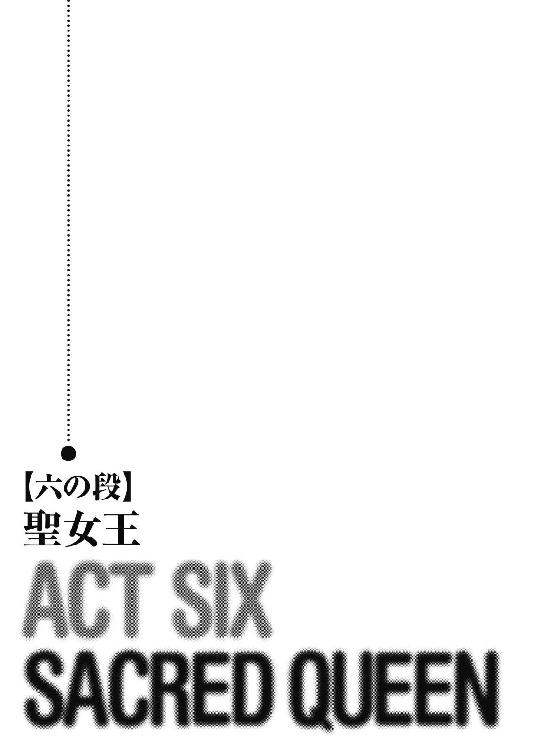
「いやあ、良かったよねえ、ウートガルト共和国の女の子たち。露出度の高い、もう、下着と間違えそうな服で、街中を闊歩しててさ」
トロンヘイムを出て約半月。
炎天下、馬の背に揺られながらトリストは吞気に言った。
「知ってる？ 彼女たちの白粉、真珠を砕いた粉を混ぜてるんだって」
「てめえの頭ン中は、いっつもその手の話だけだな」
轡を並べるアギが、額の汗を拭いながら唸る。
「何もさ、ウートガルト経由で入らなくたって」
乗り慣れない馬に何度も落とされたサキは、ディアンに向かってこぼした。
「すっごい遠回りだよ」
「山越えの道を直接行くより、山脈を迂回し、川を使った方が結局は早いんだ」
ロレルとともに隊列の先頭を行くディアンは、振り返って説明する。
「途中、ウートガルトの義勇兵と合流しなきゃいけなかったしな」
「義勇兵、ねえ......」
サキは、周囲を行く寡黙な男たちにチラリと目を遣った。
日除けとなる厚手の毛織物の外套に、白を基調としたターバン。
典型的な交易商の姿だが、実際の彼らはウートガルトの義勇兵。
今回の共同作戦で、共和国が派遣を決定した精鋭たちである。
「それに、中立国であるウートガルトの隊商を装えば、グウェントまで無用の戦闘を避けられます」
ロレルが指摘する。
「食料その他の調達も、ウートガルトの協力で安上がりにできたんです」
錬度が足りずに王都に居残りとなった新人三人を除く九尾の猫と、ヨルカとイーファの闇隊士、そして、ウートガルトで加わった共和国義勇兵で総勢六十人以上となった遠征部隊は、毛皮を扱うウートガルト共和国の隊商を名乗り、街道を進んでいた。
二列縦隊で、十二台の馬車を連ねた隊商はかなりの長さになる。
それがまるで蛇のようにうねうねと、強い日差しの下を進んでいるのだ。
「ウートガルト共和国は、トロンヘイムともヒベルニアとも休戦中なんだよね、今のところは」
頭に巻いたターバンの端で汗を拭きながら、サキと馬を並べるヴィスナが言った。
「そう。そして、両国との貿易で莫大な利益を上げています」
と、ロレル。
「貿易高は、年間数十億ダカットとも言われていますがね」
「......ねえ、ウートガルト義勇兵の連中だけどさ」
ヴィスナは声をひそめ、視線で自分たちの後方に続く一隊を示す。
「合流してから、ほとんど口を利かないね」
「私たちとは違うんですよ、あの人たちは」
ロレルは眼鏡をつっと指で押し上げた。
「彼らは共和国の利益のために、鉄の規律にのっとって行動し、戦い、殺し、そして死んでゆきます。共和国全体の利益のためなら、隣人を屠り、幼子を切り裂き、自分たちの元首の首さえ刎ねると言われているんです」
「で、あれがその親玉って訳？」
ヴィスナが見ていたのは、銀の仮面を被り、鋼鉄の輪を編み込んだ外套を羽織った、堂々たる体軀の男。
細かい銀の板を張り合わせた仮面は、ウートガルト南部の貴族の間では珍しいものではなく、強い日差しを避けるためのものらしい。
男は隊列の中央で鹿毛の馬に跨り、仮面の奥の目を光らせて周囲を油断無く観察している。
「マダウク、ですか」
ロレルは眉をひそめる。
「あの男に関しては、名前しか分かっていません。今回の遠征では副長待遇ですけれど、共和国軍での本来の階級は不明。身分についても分かりません」
「ヨルカの方にも、マダウクに関する情報はないそうだ」
と、ディアン。
「どうやら、あの男から目を離さない方がいいかもな」
「同感ですね。現在の私たちは、共和国義勇兵によって前後に二分されています。どうやら、あちらの方も我々を信頼していないのでしょう。それに......」
ロレルは声を落とす。
「ウートガルトの国境を越えてから、我々の背後に半日弱ほどの距離を置いて、かなりの大部隊がついてきています」
「それは俺も気がついていた」
ディアンは頷く。
「どういう心算か分からんが、あまり面白くはないな」
「隊長やトリストたちは、列の最後尾だよね」
サキは遥か後方を振り返った。
「まあ、ヨルカさんとイーファがついているから、大丈夫だとは思うけど」
「......ディアン、グウェントにはいつ頃着けそう？」
「今日の昼までには入れそうだがな」
ディアンがヴィスナにそう答えた時。
「あ、もしかして、あれ？」
サキが、赤い土に砂埃の舞う地平線上を指さした。
一同がそちらに目を遣ると、白い城壁に囲まれた都市が、熱気に揺れているのが見える。
「止まれ！」
ディアンは高く手を掲げて、隊商を停止させた。
「サキ、後ろまで行って隊長に知らせろ」
「了解」
サキは手綱を引いて何とか馬を反転させると、隊商の最後尾に向かった。
＊ ＊ ＊
ヒベルニア神聖王国領の三分の二は、雨季の短い、乾燥した荒野である。
神聖王国西部の大半を占める、ベネガスの荒れ地。
グウェントは、そのほぼ中心に位置する交易都市だ。
荒れ地を東西二つに区切るスヴァニ川の、大きく湾曲した部分に三方を囲まれた、巨大な岩の上に教会が建てられたのが街の起こり。
その教会を中心に、城壁に囲まれた市街が王家によって建設され、さらにその外部に新市街が自然発生的に発展していって、今日のような形に落ち着いたのだ。
グウェントの街に到着した一行は、義勇兵の本隊を街壁の外に待機させて、九尾の猫の面々と〝闇隊士〟だけで街の中心部へと入っていた。
「面白い街だな。何か、迷路みたい」
辺りを見回して、ウートガルト語でサキが呟く。
日干し煉瓦造りの三階建ての建物が細い道に沿って並ぶのは、少しでも多く日陰を作るため。
井戸からはふんだんに水が湧き、青々とした葉が生い茂る木々が植えられた広場がところどころに設けられているので、炎天下の街道と比べると、空気も心持ち爽やかである。
それでも......。
「ああん、暑い！ 髪洗いたい！ 自分の頭の臭いでおかしくなりそう！」
ヴィスナは胸元を大きく開けて訴えた。
「......そばに寄るなよ」
心持ち、ヴィスナから馬を離すディアン。
一行はごく普通の旅人に見えるよう、隊列を崩して通りを進む。
こうして大声でくだらない話をしているのも、半分は演技だ。
全員が言葉をウートガルト語に切り替えたのも、そのためである。
「あら、女の匂いはお嫌い？」
ヨルカが目を細めてディアンをからかう。
「知らなかったわ」
「そりゃあね、成熟した女性と青臭い牝ガキじゃあ、香りの濃厚さというか、艶っぽさが違うからさあ」
ニヤニヤしながら口を挟んだのは、副長のメヴィルである。
「おじさんが、嗅ぎ比べてあげようか？」
「このスケベ中年」
ヴィスナは睨んだ。
その後ろでは、ロレルとアランが轡を並べ、貿易台帳を覗き込む振りをしながらヒソヒソと話している。
「では、我々がまず、女王の居所を確認した上で、親衛隊が陽動を行ない、その隙に女王の身柄を確保する、と」
計画の細部を詰めながら、ロレルは頭を振った。
「確かに不可能ではありません。もっとも、少数による侵入作戦、と言えば聞こえはいいですが......」
「成功を期待されていない、だな」
全てを理解しているアランは言葉を継ぐ。
「もっとはっきり言えば、失敗を望まれている作戦ですね。......それほどまでにハディング陛下はあなたを？」
「それ故、成功させれば面白い」
不敵に微笑むアラン。
「あなたというお方は......」
ロレルはため息をつくと、腰に提げていた革袋を手に取り、唇を水で湿らせた。
一方。
「サキ、何か話していないとおかしい。怪しまれる」
並んで馬を進めるサキに、イーファは拙いウートガルト語で囁いていた。
語学はイーファの数ある苦手科目の中でも、最も苦手なもののひとつだ。
「なこと言っても」
同年代の二人は、この隊商の中では幼い恋人同士という役割を割り振られている。
イーファの指摘通り、楽しく会話を弾ませるべきなのだが......。
「じゃあ、何か話題は？」
サキは尋ねる。
「......ごめん。ない」
二人の間に流れる沈黙。
「......やっぱりさ」
しばらくして、サキが切り出した。
「君は、僕とあまり関わり合いにならない方がいいよ」
「この間のことなら......気にしていない」
イーファがそう言うと、サキは頭を振った。
「いや。そばにいるだけで、僕はまた君を傷つける」
「そんなことはない！」
「どうしてそう分かる？ 君は知らないじゃないか、僕のことを何も」
サキは真っ直ぐにイーファを見た。
「僕が今まで一体、どんな風に生きてきたのか、君は知らないんだ」
「......サキ？」
「覚えてる？ 僕を兄姉殺しって、アギが呼んだの」
「......ああ」
「僕は......鉄拳とナイフが、言葉の代わりみたいな地区で生まれ育った。生まれた時に母親が熱病に罹って死んで、それが僕のせいだって、兄と姉はずっと僕を責めていた。蹴られ、殴られ、ろくに食べ物も貰えず、兄と姉は僕を虫けらのように扱った。兄が教えてくれたのは、ナイフで背中から脾臓を抉る殺し方。姉が教えてくれたのは、自分の身体を売って金にする方法。二人が僕に何かしてくれたのはそれだけだった。僕があの連中に我慢しきれなくなって刺したのは七歳の時。二人の死体を前にして、僕は笑い転げた。可笑しくてしょうがなかったんだ」
「......何故？」
「あの二人、何で殺される前に僕のことを殺さなかったんだろう？ 馬鹿じゃないかって。そう考えたら、可笑しくて堪らなかった。その後は、殺して、盗んで、生き続けた。自分の生まれた場所でさえ、名前を恐れられ、忌み嫌われるほどの罪を重ねてきたんだ」
サキはいつもの微笑を浮かべる。
「君が自分のことを普通の人間とは違うと考えている以上に、僕は多分、人間からはかけ離れた存在なんだ。本当はこの場所にあるはずの......」
自分の胸を指さすサキ。
「魂が僕にはないんだよ。代わりに、あの化け物がここに巣食ってる」
サキはそう言うと、軽く馬の腹を蹴ってディアンたちの方に馬を移動させた。
「お前な、可愛い恋人を後ろに残してくるなよ」
こちらにやって来たサキに、ディアンは咎めるような目を向けた。
「あのね、僕たちが小さな恋人なら、ディアンの役は何さ？ 二股かけてたのがバレて、詰め寄られているお調子者だったり？」
ヴィスナとヨルカに挟まれるディアンを見て、肩をすくめるサキ。
「それ、いいかも。ディアン、今からそういう役割でいかない？」
ヨルカが笑う。
「言ってろよ」
ディアンは馬を進めながら、近くの木の枝に生る棗の実を摘み取り、口に放り込んだ。
「いけないんじゃないですか、そんなことしたら？ 道端の木でも、持ち主はいますよ」
と、目敏いサキが注意したその時。
「構いませんよ、この街の人たちは大らかですから」
鈴のような軽やかな笑い声。
「......見たところ、旅のお方、ですよね？」
そうウートガルト語で話しかけ、アランたちを見上げたのは、籠を手に持ち、清潔そうな木綿のエプロンを身につけた鳶色の髪の少女だった。
どうやら買い物の帰りらしく、籠の中には果物が入っている。
絶世の美女というほどでもないが、その笑顔には見る者までつられて微笑みたくなるような優しさが溢れ、大きな藍の瞳は純真な希望に満ちていた。
「ええ。私とこの方は、ウートガルトの毛皮商でしてね」
ロレルはいつもの人当たりのよい態度で自分とアランを先に紹介し、その後でぞんざいにディアンたちを指さす。
「ちなみに、こちらの人相の良くない連中は、護衛、というか、私たちの用心棒。この少年は見習いの小僧です」
「人相の良くないは余計だ」
呟くディアン。
「じゃあ、こちらには買い付けに？」
少女は尋ねた。
「共和国のご婦人方の間では今、ヒベルニアの特産品、斑黒貂の襟巻きが人気の商品でしてね」
ロレルは、大切な秘密を明かすように声をひそめる。
「質のいい品なら、一万ダカット出しても惜しくない、という貴婦人もおられるんですよ」
「い、一万ダカットですか⁉」
少女は心底驚いたように目を丸くした。
「ウートガルトのみなさんは、随分と裕福なのですねえ」
「いえいえ、裕福なのは私たちのお客様でして、私たち商人はそれほどの儲けはありません。それに、一年の大半は旅の空です」
「うらやましいわ。私も旅に出て、いろんな街をこの目で見てみたい」
少女はそう言うと、唄い出した。
「エスラ・アイ・スイシュ・ネンシス
イエラ・スロイ・トゥアラ・マハンジャ
ダルエス・コル・ライン・ルテンシス
エフィデス・ミラル・シアン・ノランジャ
ウィタ・ネレ・オルトゥ・ゲンティス
クオティール・カイ・マリラ・ノーティッシャ
アラルス！ アラルス！ イン・ラルヴィイユ
ノイェラ・レイ・ピュタージェ・ソレンシス
フィリムス・クール・ソワン・エスカーシャ」
「雅歌ですね」
少女が唄い終えると、ロレルは拍手をしながら微笑む。
「雅歌？」
と、ディアン。
「古い恋歌よ」
ヨルカはそう言うと、今の歌をウートガルト語に訳して聞かせた。
「悲しみの曠野を 我は行きたり
瘦せ馬の背に揺られ
竪琴を爪弾き 唄いつつ
遠き故郷に愛する人を残し
いつの日か 異国の地に於いて
この命 尽き果てようとも
光の子よ！ 光の子よ！ 嘆くなかれ
恋は泡沫の夢
虚しき永遠の誓いなれば......」
「......ヨルカさん、ヒベルニアの古語が分かるんですね」
感心した様子を見せるサキ。
「まあ、教養としてね」
ヨルカはウインクを返す。
「ところで」
商人になりきったアランが、ついぞ隊士には見せたことのないような爽やかな笑顔で少女に尋ねた。
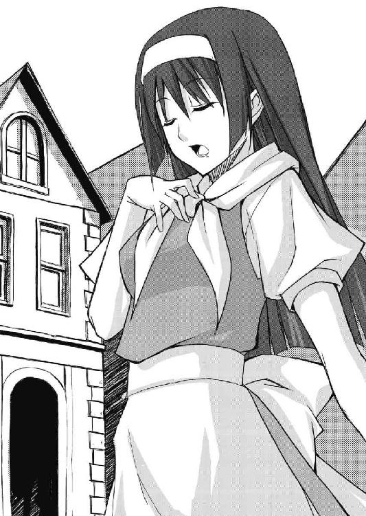
「聞いた話によると、女王陛下がこちらに滞在なされているとか？」
「えと......。そ、そんな噂ですね」
一瞬、少女の目が宙を泳ぐ。
「女王陛下のご訪問ともなれば、街は歓迎一色かと思ったのですが、このグウェントはそうでもないようですね？」
ウートガルト人らしい、早口の巻き舌を使いこなすアラン。
「外国のお方から見れば不思議かも知れませんが、神聖王国ではこれが普通なんですよ。王家の人間は王国の人たちにとって、ごく身近な存在ですから」
少女は笑顔を見せた。
「この街には堅牢な砦も城館もない。一体どこに宿泊されているのですか？」
ロレルはさりげなく尋ねる。
「ああ、それなら」
少女は大通りの北を指さした。
「聖教会ですね。ほら、あっちの方、街の中央広場に面したところにある」
「教会？ そんな人の出入りの多いところにですか？」
「国民と直接交流を持てないようなら、地方を回る意味がないですから......と、女王陛下は思ってるんだと思います」
と、少女。
「それにしても、あたりに衛士らしき姿さえありませんでしたよ？ ずいぶんと手薄な警備ですね？」
ロレルが不思議そうに首をかしげる。
「女王......陛下も、民の生活に支障を来すようなことは避けたい、と思っているのではないでしょうか？」
「けど、万一、何かあったらどうするんです？」
「女王ひとりを守るために、誰かが命を落とすことなどあってはなりません。女王は第一の巫女であるとはいえ、神の御前では他の人たちと同じ、ひとりの信徒に過ぎないのですから。それが女王の......陛下のお考えなのでしょう。それに......」
少女は胸に手を当て、通りを歩く人々を愛しそうに見渡した。
「この国の人間ならば、分かってますから。陛下ひとりが命を落とそうと、人々の暮らしは止まることがないことを。人の営みも、国土も続いてゆきます、王家が滅んだその後も、ずっと祈りとともに......」
「......だけどさ」
ふと、サキが呟くように言った。
「祈りは何も与えてはくれないよ」
猫の一同は、一斉にサキを振り返る。
「どん底の生活の中で、祈って、祈って、祈って、それでも惨めに死んでいった人間を、何人も知っている」
サキは続ける。
「祈りなんて、金も、剣も持たない哀れな人間がすがる、幻想だよ」
緊張の面持ちで視線を交わすディアンたち。
もし、サキの今の言葉に、少女が不審を抱くようなことがあれば、最悪、密告されるのを未然に防ぐために、少女の命を奪うことになるかも知れないのだ。
「あの阿呆......」
懐に隠し持ったナイフに手を伸ばすアギ。
しかし。
「......いえ」
少女はそっとサキの手を取った。
「どんなに辛い時でも、祈りが与えてくれるものがひとつだけはありますよ」
「ひとつだけ？」
「それは、困難に立ち向かう勇気です」
少女はサキにニッコリと微笑んだ。
「......もし、あなたと同じような考えを本当に抱いているとしたら......女王陛下はきっと聡明な方でしょう」
緊張を解いたアランは、目を細めた。
「聡明でありたい、そう願っている......方なんだと思いますよ」
と、少女が笑顔を返したその時。
「陛下！ こちらにおいででしたか！」
無骨な鎧を身に着けた、いや、鎧に着られているという感じの少年が、一同のところに駆け寄ってきた。
年の頃は、サキと同じくらいだろうか。
身長はサキよりも少し低く、負けん気の強そうな目つきをしている。
「そろそろ礼拝のお時間です。街の人々との触れ合いもよろしいですが、聖教会にお戻りください」
少年騎士は、少女の前に跪いた。
「陛下⁉」
一同は少女の顔を見る。
「す、すいません！ 申し遅れました、わたし、オルウェンと言います」
少女は頭をペコリと下げた。
「決して騙す心算はなかったのですが、その、言い出す機会を失ってしまって......つい」
「ていうことは......」
「あんたが⁉」
「女王様⁉ この格好で？」
啞然とする九尾の猫の面々。
「陛下、この方たちは？」
鎧の少年は、サキたちを見てオルウェンに尋ねる。
「ウートガルトの貿易商の御一行です」
オルウェンは説明した。
「外国の方とお話しする機会があまりないものだから、ついつい話し込んでしまって......そうだわ！」
若い女王は呆気に取られている一同を振り返り、アランの手を取る。
「みなさんも教会にいらっしゃいませんか？ 是非、礼拝の様子を見学なさってください」
「いや、我々は......」
珍しく当惑するアラン。
「そう言えばわたし、小さい頃にあなたによく似た人を知っていました。もっとも......」
オルウェンはアランの瞳を覗き込むと、遠い昔の記憶に思いを馳せるように微笑む。
「その人はウートガルト共和国民ではなく、トロンヘイムの方でしたけど」
と、その時。
ドドーン！
爆音が轟き、大地が震えた。
「あっちだよ！」
トリストが指さした方向に、黒い煙が上がっている。
「まさか......義勇兵か⁉」
背伸びをして、ディアンがそちらの方を見ようとした瞬間。
キーン！
耳鳴りを伴う、かすかに不快な感覚がサキたちを襲った。
「これって⁉」
こめかみを押さえるヴィスナ。
「抗巫術の......紋章⁉」
距離が遠いためにそれほどの威力はないが、この感覚は間違いなく、巫術師対策のために考案された、あの紋章の効果である。
「ちっ！ 早過ぎるぜ！」
アギが舌打ちし、隠し持っていた武器に手をかけた。
「......仕方がない。女王陛下の身柄を確保しろ」
命じるアラン。
「了解！」
九尾の猫は一斉に商人風の衣装を脱ぎ捨てると、黒い甲外套を顕わにする。
「これは......一体？」
抗巫術紋章の不快な感覚にわずかに眉をひそめながら、アランを見上げるオルウェン。
「陛下、お下がりください！ この連中、只者ではありません！」
鎧の少年はオルウェンを背に庇い、剣を抜く。
「貴様ら、何者だ⁉」
「人に名を聞く時は、自分から名乗るべきよ、坊や」
からかうような視線を少年騎士に向けるヨルカ。
「我が名はドーナラッハ！ 女王陛下の守護聖騎士である！」
愚直なのか、真正直なのか、少年騎士は剣を掲げて名乗りを上げ、正眼に構えた。
「騎士？」
仲間を制し、ドーナラッハの前に出るサキ。
「その重そうな鎧、時代遅れもいいとこ」
「異教徒の侵略者が！」
幅広の剣を振りかざし、ドーナラッハは真っ向から斬りかかった。
半歩、左足を下げただけでこれをかわすサキ。
「......騎士道を気取る心算なら、もう少し強くなることだね。今のお前じゃ、僕にかすり傷ひとつ負わせることもできないよ」
ガッ！
サキは逆手に握った剣の柄を、ドーナラッハの眉間に食らわせていた。
守護聖騎士は白目を剝いて昏倒する。
「お前には珍しいな。止めを刺さんとは」
倒れたドーナラッハを見下ろして、ディアンが片眉を上げた。
「最近、相手を生かしたまま、徹底的な屈辱を与えるのも面白いなあって......」
「......お前、性格悪過ぎだ」
「まあ、正直な話、退屈な相手だったね」
サキは、オルウェンとアランの方を振り返った。
「貴方は......アラン、アランお兄様？」
オルウェンは蒼褪めた顔をして、真っ直ぐにアランを見つめていた。
「いえ、アラン・シーヴァルド殿ですね。思い出しました。小さい頃、貴方がヒベルニアの宮廷にいらっしゃった時に、何度か遊んでもらいました」
「このような再会になって残念です」
アランは深く頭を下げた。
「あなたには、トロンヘイムまで来て頂きます」
「......分かりました、貴方に従います、調停者アラン・シーヴァルド。でも、どうか街の人たちを傷つけないで」
「そのように」
アランは頷くと、猫たちとともに黒い煙の上がる陽動部隊との合流点に向かった。
だが。
「......これは、どういうことです！」
合流地点の広場に立ったオルウェンは息を吞んだ。
それは、陽動と呼ぶにはあまりにも残虐で、酸鼻を極める光景だった。
応戦した巫術師を含む街の兵士たちのほぼ全員が殺害され、大多数の市民がその戦いに巻き込まれて遺体となって横たわっていた。
転がる遺体のほとんど全てがその首を切り取られ、ウートガルト義勇兵たちがその首を山のように積み上げているのだ。
「何でこんなことしてんのよ？ 女王をさらって、帰るだけのはずでしょ？」
ヴィスナが声を震わせる。
「街の人たちは関係ないじゃない！」
「止めさせろ」
アランが指揮を執っているマダウクに向かって言った。
「これは大公殿下、ずいぶんとお早い」
銀仮面のマダウクは、ゆっくりとアランを振り返る。
「女王の身柄は確保したので？」
「ここにおります！」
オルウェンは、マダウクの方に足を踏み出す。
「私がヒベルニア神聖王国女王、オルウェンです！」
「上々の首尾、感服いたします。流石はヴァイマーヘン大公殿下」
マダウクはアランに向かって慇懃に一礼した。
「この状況を見れば、最早あなたに説明は不要でしょう。このグウェントは南方自治都市群との交易の陸の要。我々としては、是非、押さえておきたい都市だったのです。女王さえ手中に収めれば、この街を手中に収めることは容易い。我らがこの街を落とすと同時に、ウートガルト共和国正規軍が国境を越えて侵攻を開始し、この街に駐留することになる」
「ハディングめ、共和国元老院の古狸どもにまんまと裏切られるとはな」
アランは眉をひそめ、呟く。
「......いや、これも奴の計算のうちか」
「古狸、ね。我が元老院の叡智に対する、賞賛の言葉と取っておきましょう」
マダウクは肩をすくめると、仮面の下の目をオルウェンに向けた。
「女王陛下、こちらに」
「その前に、この蛮行を止めさせなさい！」
オルウェンは堂々とした態度で、長身のマダウクを見上げた。
「でなければ、舌を嚙み切ります！ 死体に人質としての価値はありませんよ！」
「なるほど、それは少しばかり厄介だ」
マダウクは左手で乱暴に女王を抱き寄せると、女王の口に右手の指を差し入れた。
「ふぐっ！」
オルウェンの口の中の感触を楽しむように、舌を二本の指で挟むマダウク。
オルウェンはその指ごと舌を嚙み切ろうとするが、指の皮膚が破れ、血が噴き出しても、マダウクは口から指を抜こうとはしない。
「......続けろ」
マダウクは部下に命じた。
義勇兵たちは通りの民家の窓をぶち破り、炎を上げる松明をその中に投げ込んだ。
潜んでいた市民の絶叫が響き渡り、窓や扉から飛び出した人々が、火だるま状態で石畳の上を転げまわる。
「あ......くうっ！」
マダウクの腕の中で、声を発することも、身を捩ることさえもできぬオルウェン。
「この街は、我々が管理するには人口が多過ぎるのですよ、陛下」
マダウクは指を抜くと、素早く自殺防止の猿轡を王女に嚙ませる。
「止せ！ ここまでやる必要はないだろう！」
ディアンがマダウクの肩をつかむ。
「私は考えてもよいと言っただけだ。それに」
マダウクはその手を払いのけると、さっと右手を頭上に振り上げた。
「ハディング陛下と我が元老院は、今回の任務に関してひとつ秘密の約定を交わしている。機会があれば、ヴァイマーヘン大公を抹殺することだ」
一斉に展開するウートガルト義勇兵。
九尾の猫を幾重にも取り囲みながら、彼らは紋章を凝着させた手をかざす。
だが、次の瞬間。
「ああ、良かった」
ギュン！
飢魂の剣が血色の光を放って奔り、正面に回ろうとした義勇兵の手首を刎ね飛ばしていた。
「このまま、あんたらと戦わないで終わると思って、ガッカリしてたところなんだ」
石畳に転がる手首を蹴ってサキが微笑むと、九尾の猫たちはそれを合図に、義勇兵の間に飛び込んでいった。
「退け！」
義勇兵の頭上に大剣を振り下ろすディアン。
義勇兵はこれを剣で受けようとしたが、その剣を砕いて大剣は頭蓋に食い込む。
「隊長も、女王も、あんたたちには渡さないよ！」
「君たちのやり方、粋じゃないんだよねえ」
ヴィスナが戦斧を腰だめに構え、トリストが剣を抜きつつ、義勇兵の中に突っ込んでゆく。
「薄汚えドブネズミが！」
アギの投げナイフが、オルウェンの腕をつかんでいた義勇兵の喉を裂いた。
その隙を突いて、イーファとヨルカが、オルウェンを守るようにその左右に付く。
「やれやれ、おじさんも何かしないと、格好がつかないかねえ」
と、特注の細身の鎧通しを抜き、手の中で回転させるメヴィル。
「......逆らうかね、九尾の猫ども」
マダウクは目を細める。
「あんたの相手は僕だ」
喜びに顔を輝かせたサキが、マダウクの前に立ちふさがった。
「隊長、一旦この場は！」
ロレルが一度に四人の義勇兵を屠り、後方に血路を開く。
「そうだな」
アランは猿轡を外したオルウェンとともに、ロレルの先導でこの場を脱しようとする。
九尾の猫だけならばともかく、ここで囲まれたまま、オルウェンを守りながら戦うことは不利だと踏んだのだ。
「追え！」
配下に命じるマダウク。
そのマダウクの脚の大動脈を、サキは下段からの斬り上げで狙った。
「発動、神行の理！」
第一の紋章で脚力を上げたマダウクは、一旦大きく下がるとさらに別の紋章を発動させる。
「発動！ 眩惑の雷光！」
これが二回目の紋章使用。
眩い光がマダウクの手から発せられ、一瞬、サキは視力を失う。
「右斜め前！」
イーファの声が飛んだ。
ガキッ！
サキはこれに反応し、マダウクの横薙ぎを受ける。
「発動！ 疾風の黒刃！」
続けて三つ目の紋章を放つマダウク。
体勢を崩しかけたサキに、突風が生み出した真空が、刃となって襲いかかる。
ブワッ！
その音を耳で捉え、ギリギリのところで身を伏せるサキ。
「間抜け！ あんた、これで紋章を三つ使い果たしたよ！」
ヴィスナが叫ぶ。
だが。
「......閃光の一撃、豪腕の爪、発動」
マダウクはさらに二つの紋章を同時に使った。
「四つ目と、五つ目の......紋章？ 〝闇隊士〟じゃないのに......」
息を吞むヴィスナ。
「貴様ら無知なトロンヘイム人は、こういう紋章の使い方を知らないようだな」
マダウクは喉の奥で笑い、外套を脱ぎ捨てた。
「！」
一瞬、自分の見たものが信じられない九尾の猫たち。
マダウクの上半身は、紋章が額に彫られた数十の顔、いや、顔の皮を剝がしたものに覆われていたのだ。
「そうか......こいつ、紋章を凝着させた人の生皮を剝いで......それを着込んでやがる」
死んだ人間の皮膚には、紋章を凝着させることはできない。
マダウクの身体を覆う全ての顔の皮が、生きているうちに紋章を彫られ、その後に剝ぎ取られたものなのだ。
「外道！」
「これはな、私の長年の研究の成果なのだよ。実用化までに剝いだ生皮は、千人分を下らぬだろう。自分の顔の皮を含めてな！」
銀仮面のマダウクは哄笑する。
「悪いがもう貴様らと遊んでいる暇はない。女王と大公を追わねばならぬのでな」
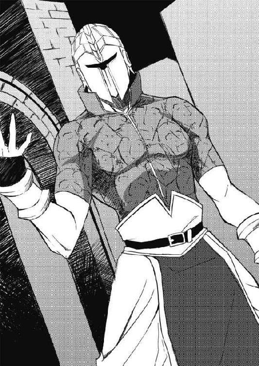
ドガガガッ！
〝閃光の一撃〟でさらに身体の反応速度を上げたマダウクは、目にも留まらぬ速さでサキとの間合いを詰めると、〝豪腕の爪〟で筋力を増強した腕でその頭をつかみ、何度も石畳に叩きつけた。
「ゴボッ！」
血を吐きながら、石畳の上に倒れ込むサキ。
「死ね」
マダウクは倒れたサキの頭部に、手のひらを向けた。
「発動......破壊の熱甲弾！」
高熱を帯びた光の球が、マダウクの手の中に生まれる。
「いけない、サキ！」
三人の義勇兵を同時に相手にしながら叫ぶヴィスナ。
ドウッ！
マダウクの手から光球が放たれ、閃光と白煙と轟音がサキの姿を包む。
「......行くぞ」
勝利を確信したマダウクはそのまま義勇兵を率い、アランの後を追った。
「そんな......サキ！」
立ち尽くすヴィスナたち。
しかし。
白煙が晴れると、そこに横たわっていたのは、イーファの姿だった。
「......う、ううん」
サキはそのすぐそばで、頭を振って立ち上がろうとしている。
「おい！」
ディアンが駆け寄って、イーファを抱き起こす。
「お前、サキを自分の身体で庇ったな！」
右腕と肩の大部分、そして右腹部を吹き飛ばされたイーファは、捻じ曲げた身体を細かく痙攣させていた。
「おい、イーファ！ イーファ！」
「......あ......う......」
声に反応したのか、少女の左手が、自分を抱いているディアンの腕をつかむ。
「......生きて？」
安堵の表情を浮かべるディアン。
「大......丈夫......す......ぐに......回......復するから」
イーファは虚ろな目をディアンに向けた。
「少し......離れていて......欲しい......見られ......たくない」
「あ、ああ」
ディアンが数歩下がると、イーファは痙攣を続ける左手で懐から長い布を取り出し、止血をする。
「......これで......いい」
一方。
「僕は......あいつらを追う」
ヴィスナの紋章で手当てを受けたサキは立ち上がると、マダウクが去って行った方向を見た。
「待てよ！」
サキの胸倉をつかんだディアンは、イーファを指さす。
「こいつはお前を庇って、身体を半分吹っ飛ばされたんだぞ！」
「そうだね」
チラリとそちらを見るサキ。
「でも、勝手にやったことだよ。僕は頼んでない」
「貴様！」
「......いいんだ、ディ......アン。サキの言う通り......勝手にやったこと......だ」
イーファはフラフラと立ち上がろうとする。
「馬鹿野郎が！」
ディアンは半ば強引にイーファを座らせた。
「もういい。お前はここで休んでいろ」
「......いや、行く」
イーファはディアンの手を振り払おうとする。
「無茶だ！ いくら死なないといってもな！」
「好きにさせてやんなよ」
ヴィスナがそっと二人の間に割って入り、ディアンの手首を握った。
しかし。
「......通さぬ」
一同の前に、足留めのために残った八人のウートガルト義勇兵が立ちふさがった。
「サキ、ディアン！ ここは僕たちが引き受けた！ 君らは早く！」
トリストが両手の剣を十字に構えて怒鳴った。
「こっちは、二人いれば何とかなるから！」
「って俺かよ！」
ナイフを抜くアギ。
「いや、三人だねえ」
メヴィルが鎧通しを弄びながら前に出る。
「だって、ここにいる方がさ、走らなくていい分、楽じゃない？」
「......任せたぜ、副長」
ディアンはメヴィルの肩を叩くと、サキたちとともにマダウクを追った。
「懲りない子供だ」
追いついてきたサキたちを振り返ったマダウクは、アランを守ろうと獅子奮迅の働きを見せるロレルを部下に任せて、自分の剣をサキに向けた。
「発動、烈風の守護、烈風の守護、烈風の守護！」
マダウクは同じ防御系の紋章を、同時に三つ発動させる。
「三重紋章の......絶対防御」
息を吞むディアン。
トリストの死の舞踏もそうだが、同じ紋章を重ね掛けすると、その効果は累乗的に強化される。
二つの紋章なら四倍。
三つなら九倍の効果だ。
「サキ！ 声の力を使いな！ でないと勝てない！」
戦斧を振りながら、ヴィスナが叫ぶ。
だが。
「嫌だ。あいつの力は借りない」
サキは頭を振った。
あの夜以来、サキは一度も内なる声を呼び出してはいない。
声も、自らサキに語りかけようとはしていなかった。
「馬鹿野郎！ そんなことに拘っている場合か！」
ディアンが怒鳴る。
「......ヴィスナ、ディアン、周りの親衛隊士を頼む。あなたたちなら、任せられるから」
「言ってくれるじゃない」
「ああくそ！ 好きにしろ！」
ヴィスナとディアンは、他の親衛隊士からサキの背中を守る位置に立った。
（私には......背中を守らせてくれないのか、サキ？）
ヨルカとともに女王を守るイーファは、胸が締めつけられるような感覚を覚える。
「他の奴らを殺せ」
マダウクは部下に命じると、サキに襲いかかった。
「発動！ 迅雷の剛剣！」
紋章で速度と硬度を上げたマダウクの剣が、鎬で攻撃を受け止めたサキの身体を吹き飛ばす。
サキは体勢を立て直すと、間合いの外から跳躍して、頭上から袈裟懸けを狙う。
ギュン！
無防備な肩口に入ったかに見えた、飢魂の剣。
だが、一瞬後。
ヒュンッ！
そのすべてを切り裂く、弾かれることのない血色の刃が、マダウクの纏う疾風に弾かれ、サキの手を離れて宙を舞っていた。
ガッ！
飢魂の剣は、アランの足元まで飛んで石畳に突き刺さる。
「サキ！」
サキが丸腰になったのを見たディアンが、死体からもぎ取った剣を放った。
「！」
これを転がりながらつかんだサキは、そのままマダウクの横薙ぎを搔い潜り、脇腹に斬りつける。
だが、鋼鉄製の剣はギューンという音を立てて歪むと、白熱化し、粉々に砕け散った。
マダウクの周囲では、それぞれ別の渦を作る三つの風が空気に摩擦を起こし、凄まじい風圧と熱を巻き起こしているのだ。
「三重紋章の防御力......これほどまでに」
ロレルが唸る。
その時。
「取れ！」
オルウェンを守りながら義勇兵を斬り伏せていたアランが、飢魂の剣の鍔を蹴った。
「そいつは貪欲だ。血を吸わせてやれ！」
さらにもうひとりを屠りながらアランは命じる。
「......そうか！」
宙を舞う飢魂の剣が手の中に収まると、サキはその剣先で左手の甲を斬り、滴る紅い血を剣身に落とした。
その鮮血が染み込むと同時に、刃が歓喜に輝き、血色に脈打ち始める。
「どうやら、破壊者の血は旨いらしいね」
サキは皮肉げに微笑むと、再び飢魂の剣を構え、真っ直ぐマダウクに突進していった。
「同じことだ」
嘲笑するマダウク。
しかし。
ガガガガガッ！
飢魂の剣は、マダウクを包む障壁に触れると、周囲の空間を歪ませながらゆっくりと食い込んでいった。
「馬鹿な！」
風の障壁が悲鳴のような唸りを上げ、軋み、抉れ、次第に裂け目が形成されてゆく。
「くそっ！ 死ねいっ！ 発動、爆殺の激刃！」
紋章で破壊力をさらに強化し、炎を纏った剣をサキの頭に打ち下ろすマダウク。
「砕けろ！」
全身の力を剣先に集中して、障壁を穿つサキ。
「サキ！」
イーファが再生を終えたばかりの右手で小剣を投げる。
キンッ！
回転して飛んだ小剣が、サキの頭を砕こうとするマダウクの剣に命中し、その軌道をわずかに変えた。
バッ！
肩口を掠めたマダウクの刃の剣圧が、サキの頰を裂いて血を飛び散らせる。
次の瞬間。
サキはその衝撃を、身体を回転させることで受け流すと、その回転の力を逆に血色の刃に乗せ、必殺の一撃を放つ。
「無音の剣！」
七十三柱の邪妖神を封じた妖剣が、赤い軌跡を描いて奔ると、マダウクの右胴を貫いた。
右手を逆手に持ち替え、そのまま斬り上げてゆくサキ。
ブシュウウウッ！
噴き上がるマダウクの血が、サキを取り巻く渦となった。
飢魂の剣は真っ赤に輝き、その血を貪欲に吸い込んでゆく。
バキッ！
砕け散るマダウクの銀仮面。
その下にある、表皮のない、筋肉と頭蓋が剝き出しとなった、おぞましい顔が顕わになる。
「これで......終わりだ！」
ギュン！
妖剣を振り抜くサキ。
「馬鹿な！ この私が！ 紋章を極めた、この私がああああーっ！」
マダウクは肩口まで引き裂かれると、自らが発動させた烈風の渦に巻き込まれてゆく。
凄まじい風圧の中で、骨を砕かれ、肉を千切られ、挽き潰されてゆくマダウク。
そして。
ブッシャアアアアーッ！
唐突に風の渦が消えると、マダウクだったものは細かな赤い粒となって四散し、サキたちの上に降り注いだ。
「......あれだけ頼りにしてた自分の紋章に、止めを刺されるとはね」
サキは顔についた血を拭うと、飢魂の剣を鞘に収めた。
「さすが妖剣」
目の前の親衛隊士に止めを刺したディアンは、膝を突きながら舌を巻く。
「いえ。たとえ妖剣の力を借りたとしても、三重紋章の絶対防御、やすやすと打ち破れるものではないのですが......」
ディアンの背中に立つロレルは、斬りかかる親衛隊士の腕を刎ね飛ばすと、眼鏡を直した。
「いやはや、今ほどサキくんを敵に回さないで良かった、と思ったことはありませんよ」
「......本隊に合流する」
マダウクが斃れたのを見て、義勇兵のひとりが右手を上げた。
その男が副官なのか、それを合図に義勇兵たちは一糸乱れぬ動きで退き始める。
九尾の猫たちが呆然と佇む間に、全員が街から姿を消した。
「......今、あの男、本隊に合流するって言ったな？」
「ええ」
ディアンとロレルが顔を見合わせる。
「......街門だ！」
「私は南の街門を！ ディアンは北を！ ヴィスナは西をお願いします！」
「うん、分かった！」
三人は、街と外部の境界である街門に向かって走り出した。
「立てる？」
イーファは、石畳に座り込んで肩で大きく息をしているサキに、恐る恐る手を差し出した。
「......何とか」
サキはその手を握り返し、ゆっくりと立ち上がる。
「まったく、無茶をする」
サキが手を取ってくれたことにホッとしながらも、ついついキツい口調になるイーファ。
「あいつは」
サキは、石畳の上に残るマダウクの仮面の破片に目を遣った。
「君を......傷つけたから。......いや、本当に君を傷つけたのは、僕かな？」
「さっきは......もう本当に、私とは口も利いてくれないつもりなのかと思った」
「その方が......多分、正しい選択だと思う。けど、僕にはそんなの無理だ」
「じゃあ、今まで通りで......いいのか？」
「君が......僕のことを怖いと思わないなら」
「......思わない」
イーファは、サキの手を握る手に力を込めた。
「あの少年は......」
イーファとともに佇むサキを見ながら、オルウェンはアランに尋ねていた。
「〝調停者〟である貴方以外に、飢魂の剣を使えるあの少年は、一体何者なのです？」
「それですがねえ」
アギたちとともに合流してきたメヴィルが、アランに代わって答える。
「いやまあ、凄いガキなんですよ。本人の話だと、邪妖の頭目の一匹を頭の中に飼ってるそうで」
「......では、彼が〝破壊者〟のひとり」
息を吞むオルウェン。
「それが、何故、〝調停者〟であるアランと一緒に？」
「私が〝調停者〟だと知って......？」
アランはそう言いかけてから、ふっと皮肉げに微笑む。
「リネットを私の許に送り込んだのは、ヒベルニア聖王家だったな。忘れるところだった」
「リネットは......どうしています？」
オルウェンは聞いた。
「私にはよく仕えてくれている」
「......そう、ですか」
複雑な表情を浮かべるオルウェン。
そこに。
「西門だよ！」
走って帰ってきたヴィスナが一同に告げた。
「ウートガルト軍が集結してる！ それも、すっごい数！」
「我々の後を、ずっとついて来ていた軍ですね」
「内と外から、一気に落とす気だったんだろうな」
と、ロレルとディアンも戻ってくる。
「さあてと、どうします、隊長さん？」
メヴィルがアランの顔を覗き込んだ。
「あたしらには、関係ないって言やあ、関係ない戦いですけど？」
「状況をこの目で確認する」
西門へと足を向けるアラン。
「わたしも参ります！」
オルウェンもアランの後を追う。
その時。
「ま、待て！」
アランたちの前に立ち塞がるように現われたのは、先刻、サキに昏倒させられた少年騎士ドーナラッハだった。
「陛下に対する狼藉と、市民への残虐な振る舞い！ 断じて許さん！」
「......ああ、煩い」
ドーナラッハの背中に回ったサキは、その後頭部に蹴りを入れる。
「ぐはっ！」
再び白目を剝くドーナラッハ。
「ドーナラッハ」
オルウェンは守護騎士を引き起こすと、凜とした口調で告げた。
「落ち着いて、状況を見極めなさい。市民に手を下したのは彼らではありません」
「し、しかし！」
「今はそれどころではありません。私たちについてきてください」
優しくドーナラッハの肩に手を置くと、サキたちとともに西門に急ぐオルウェン。
「へ、陛下～！」
ドーナラッハは戸惑いながらも、女王の後に続いた。
「へえ、あれか？」
隊列を作り、整然と荒野を渡ってくるウートガルト正規軍を見渡して、サキは呟いた。
「五千以上はいるな」
と、アギ。
「ええ。ざっと見たところ、騎兵が千五百に、胸甲槍兵が千。軽装弓兵が五百に、残りは重装歩兵、といったところでしょうか？ 当然、紋章を凝着させている兵も多数いるでしょうが、その数は分かりません。編制と規模から考えて、街を支配した後の、ヒベルニア軍の反撃に対する防衛戦を想定しているようですね」
ロレルが大岩の上から見下ろして分析すると、ドーナラッハを振り返った。
「こちらの兵力は？」
「さ、先ほどの奇襲で大半が殺られた」
オルウェンが頷くのを確認してから、ドーナラッハは答えた。
「騎士と衛兵、生き残りは合わせても三十人に満たない......と思う」
「巫術師はどうです？」
「......全員が真っ先に」
もともと、平和な街である。
守備に関わる人員は当初から、二百人をわずかに超える程度だったのだ。
「どうしようもありませんなあ」
メヴィルは頭を搔いた。
「隊長、あたしとしては、この国のことはこの国の方々に任せ、このまま南門か北門からトンズラするって策が、お勧めなんですけど？」
「いや」
アランは不敵に微笑んだ。
「小賢しい手段で私を嵌めようとしたウートガルトの元老院には、少しばかり警告を与えてやらねばならぬ」
「......まあ、そう仰るような気はしてたんですけど」
諦観の表情を浮かべるメヴィル。
「で、どうするんです、隊長？ このまま突っ込んでも、あっという間に全滅ですよね？」
トリストが尋ねた。
「地理的には、こちらが高い位置にある分だけ有利なんですが......」
考え込むロレル。
「地理的にはそうでも、数的に絶対不利でしょうが！」
その胸に、ヴィスナが指を突きつける。
「紋章もほとんど使いきったしな。結局、手詰まりか」
と、腕組みをしてディアンが眉をひそめたその時。
「手は......ないこともない、かなあ？」
メヴィルが、無精鬚に手をやりながら呟くように言った。
全員の視線が、一斉にメヴィルに集まる。
「いや、見ての通り、あの軍は統制が取れてるでしょ？ て言うか、取れ過ぎてる。となりゃあ、話は簡単。狙いは指揮官だよ」
「指揮官を斃せばいいの？」
と、ヴィスナ。
「おいおい、斃しちゃったら駄目よ。全軍の指揮を副官の誰かが引き継ぐだけだし。要は殺さずに指揮官を押さえ、撤退の命令を出させることなの」
「殺さずに、かあ」
少し不満げなサキ。
「お前には一番難しいことだな」
ディアンはその頭をポンと叩く。
「指揮官は恐らく、あの戦旗の近くにいるはずだから」
メヴィルは、軍勢の中心近くに立つ、白地に蒼い十字が入った旗を指さして続けた。
「全員が一塊となって騎馬で突っ込み、速攻で指揮官を捕らえる。まあ、可能な作戦だけど、問題がひとつ」
「問題？」
サキはメヴィルの顔を見る。
「この西門が、ガラ空きになるってこと。生き残りの騎士と衛兵じゃ、多分ここを支えられないでしょ？ こっちが指揮官を押さえる前に街中に雪崩れ込まれたら、その後でいくら指揮官を押さえても戦況はひっくり返せない。敵の中で孤立した九尾の猫は、哀れ一巻の終わり」
「......それで、その対策は？」
アランは促した。
「貴様のことだ。既に考えているのだろう？」
「それも考えてるっていやあ、考えてるんですけどねえ。ご同意頂けるかどうか......」
頭を搔いたメヴィルは、オルウェン女王の前に跪いた。
「女王陛下。貴女には、ここに踏み留まって、みんなの総指揮をして頂きたい」
「！」
息を吞むオルウェン。
「わ、私は軍隊の指揮など......」
「なあに、実際のところ、いて貰うだけで構わないんですよ。それだけでも、士気は随分と上がる」
メヴィルの瞳が狡猾に光る。
「それとも、貴女、市民が虐殺され、街が蹂躙されるのを、指を咥えて見ている御心算で？」
「っ！」
オルウェンは、キッとメヴィルを睨んだ。
「やり方を指示して頂ければ、やってみせます！」
「宜しい」
メヴィルはニヤリとすると、女王の傍らで呆気に取られているドーナラッハに声をかけた。
「そこのとっぽい坊や、済まないけど、二、三人、兵を連れて、街中に触れ回ってくれないかなあ？ 女王が街を守るために立ち上がったってさ」
「ふ、ふざけるな！」
我に返ったドーナラッハは怒鳴る。
「そんな作戦が認められるか！ 誇り高き守護騎士が後塵を拝し、敵国人に陛下と街の運命を預けるなど言語道......ぐはっ！」
「ああ、こいつ、本当に煩い」
ドーナラッハの後頭部を、剣の柄で殴りつけたサキは言った。
「守護聖騎士ドーナラッハ」
オルウェンは、頭を振って起き上がる少年騎士に告げる。
「私からの命令です。生き残りの兵を数名連れて、伝令に走りなさい」
「......ぎょ、御意！」
ドーナラッハは歯を食い縛りながら胸にこぶしを当てると、仲間の騎士を連れて街中に向かった。
「では、みなさん、御武運を」
メヴィルは九尾の猫の面々を振り返ると、そう言った。
「待ってよ、副長は行かないの？」
戦斧を担ぎながら、顔をしかめるヴィスナ。
「あたしはここで、女王陛下に助言を差し上げなければいけませんからねえ」
メヴィルはニヤリと笑う。
「それにさ、年取ると肉体労働は辛いのよ」
「副長」
ヨルカとイーファが馬を曳いてきたのを見て、サキはメヴィルに声をかけた。
「もうひとつ問題が」
「へ？」
「ここまで一緒に旅してきて分かってると思うけど、僕、馬って生き物全般と相性がよくない」
「......そうか」
ディアンが額に手を当てた。
「こいつの乗馬、最低だったな」
「問題ない」
と、イーファが前に出る。
「サキは私の後ろに乗ればいい」
「嫌だよ、格好悪い！」
「問答無用だ」
イーファはひらりと鞍に跨ると、サキの手をつかんで強引に引き上げる。
「これで、問題解決ね」
ヨルカはクスリと笑い、アランに白馬の手綱を渡す。
アランは九尾の猫の残りの面々が乗馬するのを確認すると、剣を抜いて高く掲げた。
「出撃！」
アラン。
ディアン。
ヨルカ。
ヴィスナ。
トリスト。
アギ。
ロレル。
そして、サキとイーファ。
八騎の九人は、土煙を蹴立てる蹄の音とともにグウェントの岩山を駆け下り、五千の敵兵が待つ荒野へと向かって行った。
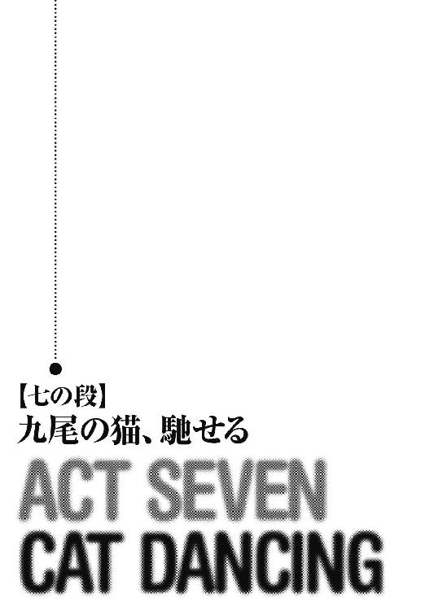
たった八騎で駆け下りてくる九尾の猫に、ウートガルト軍が戸惑ったのは一瞬のことだった。
すぐに猫たちに向けて、長弓兵の放つ無数の矢が浴びせられる。
ヒュンヒュンという、矢羽根が風を切る音。
「甲外套！」
黒い外套を翻し、矢を弾く猫たち。
甲外套のない闇隊士の二人は、手綱を口に咥えて小剣を逆手に握り、飛んでくる矢を片端から斬り捨ててゆく。
矢に交じり、時折、攻撃系紋章による火炎弾が飛んでくるが、街攻めのために紋章を温存しているのか、数は多くない。
「続け！」
アランを先頭に、九尾の猫はそのまま、軍団の最前列を構成する胸甲槍兵隊に突撃をかける。
「雑魚に構うことはありません！ 狙いは敵将のみ！」
王都最大の剣術道場の師範代、ロレルが放つ三段突きが、まず最初の敵兵を即死させた。
「旋っ！」
ヴィスナの戦斧が一閃し、槍衾を切り裂く。
「よし！ 敵の中に飛び込んだ！ これでもう矢と火炎弾は飛んでこないよ！」
怖いのは攻撃力や防御力を高める補助系の紋章だが、こちらを少数だと侮ってくれている間は、発動させてくる可能性は低いだろう。
「死にたくない奴は退けっ！」
ディアンの大剣に、兜ごと頭蓋を割られる槍兵。
「華麗に......舞い散れ！」
トリストの二刀流が描く光の軌跡の前に、血煙を噴き上げてウートガルト兵は斃れてゆく。
「ちっ！」
低い姿勢で馬を縦横無尽に走らせ、鎧の隙間の急所のみを狙うのはアギ。
「あらあら、あまり早く逝く殿方は、女性に嫌われてよ！」
一瞬のうちに小剣で四人の喉を搔き切ったのは、ヨルカである。
「戦旗は......あれか」
アランは無造作な一撃で文字通りに重装歩兵を真っ二つにすると、指揮官がいると思われる方向を目指して白馬を疾駆させた。
九尾の猫は一団となって、アランに続く。
「あれ、罠ってことはないよね⁉」
軍旗に目を遣り、ディアンに尋ねるヴィスナ。
「この規模の軍団の指揮は、れっきとした武人が執る！ 正々堂々、軍律に従って行動するはずだ！」
「それに、軍旗を見て兵は動くのよ。下手な小細工をしようとしたら、指揮系統が混乱するわ！」
と、ヨルカ。
「なるほど！」
ヴィスナは頷くと、紋章を発動させようとしていた槍兵の胸甲を戦斧で叩き割った。
「うわっ！」
鋼鉄の鎧を着込んだ重装歩兵の胴を薙いだ途端、サキはその反動で鞍の上から身体を持っていかれそうになった。
「君は体重が軽い！ 飛ばされないようしっかりしがみつけ！」
手綱を操るイーファが怒鳴る。
「分かった！」
イーファの身体に回した手に、力を込めるサキ。
「......わざとやってるのか？」
イーファは怖い目でサキを振り返った。
「え、何⁉」
「その手だ、手！ どこをつかんでいる！」
「......あ」
サキは自分の手が、随分と上の方に回っていることに今、気がついた。
「ごめん、胸だって気がつかなかった」
「この......！」
と、怒りかけたイーファは、ふっと微笑む。
「......よかった、いつものサキだ」
「何⁉ 蹄の音でよく聞こえないんだけど⁉」
怒鳴るサキ。
「何でもない！ 速度を上げるぞ！」
イーファは手綱をしっかりと手首に巻きつけると、馬の腹を蹴った。
その頃。
戦場となっている荒野を見下ろす、グウェントの西門では。
ドーナラッハたちの呼びかけに応じ、市民たちが武器を手に集まりつつあった。
ざっと見たところ、その数は百人以上。
中には、女性や子供の姿もある。
「陛下、みなの者に御指示を！」
ドーナラッハはオルウェンの前に跪く。
「あ、あの......」
途方に暮れた表情で市民を見渡すオルウェン。
「女王陛下」
オルウェンの耳に、メヴィルが囁く。
「もうすぐ、ウートガルト軍がこの西門に到達しますよ」
「見れば分かります！」
「......気持ちは痛いほど分かりますがね」
メヴィルは頭を搔いた。
「ここに集まった連中のうち、これから貴女が発する言葉の所為で、何割かは確実に死ぬ。その覚悟ができてないんでしょ？」
「！」
顔を強張らせるオルウェン。
「ま、確かに市民にとっちゃ、ここで戦って死ぬより、ウートガルトに支配される方が幾らかマシかも知れない。政の形なんて、王制だろうが共和制だろうが、結局どれでも一緒、庶民にしてみれば大した違いはない。どんな政治体制も、年月が経てば腐って崩れ落ちるものだしさ。だがね、もう一度よく見てみるんだ、女王さん」
メヴィルは広げた手を市民たちの方へと向けた。
「あの連中は貴女の名の許に集まった。貴女のために死ぬ心算で集まったんだ。そんな奴らに、貴女は何の餞の言葉も与えずに死に追いやる気かい？」
「わ、わたしは......」
俯く女王。
「それにさ」
メヴィルは背中を丸めたまま、荒野を見下ろす。
「あそこじゃ、あたしの上官と部下が、てめえの国でもない、それどころか、敵国の街を守るために、命を張ってんだ。それでも、貴女は責任逃れを続ける御心算ですかね？」
「......ドーナラッハ」
オルウェンは顔を上げて少年守護騎士に言った。
「幼い子供たちだけは下がらせなさい。この街を建て直すのに必要な、尊い命です」
「はっ！」
命令に従い、行動するドーナラッハ。
「グウェントの民よ」
子供たちが門の奥に全員退くのを確認すると、オルウェンはまず、静かに一人一人に語りかけるように始めた。
「今日この日、平和で豊かなこのグウェントの街は、隣国ウートガルトの尖兵によって卑劣極まりない奇襲を受けました。街を護ろうとした兵士のほとんどが戦死を遂げ、また多くの市民が無慈悲な敵の刃の前に斃れました。亡くなった、いえ、殺された方々の中には、貴方たちの親、兄弟、子供、友人、そして恋人がいたことでしょう。しかし、その悲しみが癒える間もなく、ウートガルトは更なる軍勢をもって、この街を蹂躙しようとしているのです。見なさい！」
オルウェンはさっと手を振り上げ、戦塵舞い上がる荒野を指さした。
「彼らは今にも、この街門に達し、街を支配下に置こうとしています。我々は、彼らを恐れ、その暴虐を再び許すべきなのでしょうか？」
否定の声が、人々の間から上がる。
「ウートガルトに膝を屈し、門を開いて恥辱とともに彼らを受け入れるべきなのでしょうか？」
さらに高まる拒否の声。
「それとも！」
女王は市民を振り返り、一段と声の調子を高めた。
「武器を手に、ヒベルニアの民の勇敢さを彼らに思い知らせるべきなのでしょうか⁉」
肯定の歓声が、街壁を揺るがすほどに響き渡る。
「ヒベルニア神聖女王オルウェン二世は、ここに誓いましょう！ 勇気あるグウェントの民を、決して見捨てはしないと！ 貴方たちとともに武器を取り、自らが先頭に立って、私はウートガルトの邪悪な軍勢に鉄槌を下すと！ 聖王国とグウェントに栄光あれ！」
オーッ！
熱気と歓声がひとつのうねりとなって、グウェントを包み込んだ。
「シモン！ 弓を使える者を集めて街壁に上らせろ！ セプティマス、門の前に防塞を築け！ ケイン！ 槍衾で騎兵の突撃を防げ！」
矢継ぎ早に命令を飛ばすドーナラッハ。
「残りの者は陛下とともに門の正面に立て！」
ビュン！
流れ矢が飛んできて、ドーナラッハの鎧を貫き、腕に突き刺さる。
「っ！」
少年騎士はそれを引き抜くと、声を張り上げた。
「敵兵恐るるに足らず！ 我らには聖女王の御加護がある！」
一方。
ウートガルトの戦旗まであと少しというところで、九尾の猫たちは完全に敵兵に包囲されていた。
「子供の頃に吟遊詩人が聞かせてくれた唄だとさ、英雄は何百人もの敵を一度に相手にして、見事に勝つんだけどねえ」
馬上のトリストが、肩で息をしながら笑う。
志士相手の戦いでは、髪の毛一本も傷つけられたことのないトリストが、無数の傷を負い、右目が半分開かなくなっている。
「......どうも現実は厳しいみたいだよ」
「血と脂で戦斧が鈍ってきた！」
刃が敵兵の鎧に弾かれるのを見て、舌打ちするヴィスナ。
「こちらは軽装である分、鎧に身を固めた騎兵に機動性で優ります！ 動いて、動いて、相手を翻弄するんです！」
ロレルは叫ぶ。
既に愛用の眼鏡は飛び、その全身は自分のものか、相手のものか分からない血に染め上げられている。
「これは......通常料金じゃ見合わない仕事になってきたわね」
小剣を握る手に、痺れを感じてきたヨルカが呟いた。
「金額の交渉は後にしろ！」
併走するディアンも、自分の剣捌きからキレが失われてきたのを感じ始める。
敵と接触した時にはほとんど一塊になっていた九尾の猫だが、この時点では先頭のアランと殿のアギとの間には、かなりの距離があるのが分かる。
「サキ、しっかり捉まれ！」
ディアンたちのやや前方に位置しているイーファはそう言うと、正面の槍衾の頭上を馬に跳び越えさせた。
「流石！ 田舎育ちは手綱捌きが巧いね！」
着地と同時に身体を捻り、槍兵の頭を刎ね飛ばすサキ。
「もう一度そういうことを言う気なら、振り落として蹄で踏みつけるからな！」
イーファは鞍の上で前傾姿勢を取ると、先行するアランを追う。
「戦旗までもう少し！」
血煙を上げる飢魂の剣。
と、その時。
殿を務めていたアギが、背後から矛槍で腕を引っ掛けられてドウッと落馬した。
さらに、突進してきた騎兵の戦槍が、立ち上がろうとしたアギの胸を突く。
ドスッ！
甲外套越しであったために突き刺さることはなかったが、衝撃で肋骨が砕け、アギは地面を転がる。
「隊長！ ディアン！ 先に行ってくれ！ 僕らはここで！」
トリストはそう仲間に告げると馬を返し、アギのところに戻る。
「生きてるかい？」
馬から降り、アギを引き起こすトリスト。
「付き合いのいいこったな」
何とか立ち上がったアギは重装歩兵の盾を拾い、引き裂いた制服で左手に縛りつけた。
「斬りまくるぜ」
「まあ、美女の見てないとこで張り切っても、しょうがないんだけどねえ」
トリストは剣を十字に構える。
「その台詞、ヴィスナの前で言えるか？」
「それは勘弁」
二人は笑い、押し迫る軍勢の前に立ちはだかった。
「アギたちが！」
馬を疾走させながら、取り残されたトリストとアギを振り返るイーファ。
「大丈夫！ あの連中は簡単にくたばるような連中じゃない！ それより指揮官は⁉」
と、サキ。
「もうすぐ！」
指揮官の位置を示す戦旗は、今や細かい装飾がはっきりと見える距離にまで近づいてきていた。
だが、近づけば近づくほど、敵の抵抗は激しくなる。
ビュン！
重装歩兵の矛槍がイーファの首筋をかすめ、鮮血が噴き出す。
それを見たサキは、自分の甲外套を脱ぐと、それでイーファの身体を包み込む。
「......あ」
「君が平気なのは知ってる。けど、こうしてる方が、僕が安心して戦えるんだ」
サキはそう言うと、飢魂の剣で重装歩兵を盾ごと真っ二つにした。
「見えました！ あと少し！」
サキたちのすぐ後ろにいたロレルも、敵の指揮官の位置を確認した。
戦旗を掲げる旗手の傍らにいるのは、金の装飾をあしらった青い板金甲冑を身につけた、堂々たる体格の老人。
誇らしげに胸を張り、ここまで来られるものなら来てみろと、九尾の猫たちを睨みつける。
「......二手に分かれるぞ」
血を吸って重くなった甲外套を脱ぎ捨て、アランはロレルに言った。
「はい！」
長年ともに戦ってきたロレルは、一瞬のうちにアランの意図を読み取ると、仲間に指示を出す。
「ディアンとヨルカ、それに私は正面から！ サキくんたちとヴィスナは、隊長について後方に回ってください！」
「分かった」
「了解！」
右に馬の向きを変えるアランとヴィスナ。
「こっち！」
イーファは馬を左に走らせる。
残りの三騎は指揮官を目指し、さらに速度を上げた。
「派手に行きますよ！ こちらは囮です！ 全軍の目を引きつけます！」
「任せろ！」
突撃をかけるディアンたち。
だが、重装歩兵が盾を並べ、指揮官を護る壁を作るとともに、左右、そして背後から槍兵が押し寄せ、ディアンたちの馬を狙った。
ドウッ！
馬の首を槍に貫かれ、振り落とされるディアン。
ディアンは斃れる馬から飛び下り様、大剣を振り下ろして槍兵のひとりを屠る。
ヨルカとロレルは、馬を捨て、ディアンの許に集まる。
「さてと、あと何人斬れますかね？ 私はここまでで、九十人ほど斬りましたが？」
矢に射貫かれた足を引き摺りながら、ロレルは微笑む。
「俺は今のところ、八十六人。四人負けてるな」
と、ディアン。
「私は少なめに見積もって、七十の後半ね」
二人と背中合わせに立つヨルカは、手のひらを滑らせる血を裾で拭う。
「さてと、どこまで数字を伸ばせるかな？」
「何か賭ける、ディアン？」
「これから半年分の飲み代は？」
「乗りました」
三人は押し寄せるウートガルト兵の中に飛び込んでいった。
一方。
グウェントの西街門には。
大きな弧を描いて上空から降り注ぐ矢の驟雨と火炎弾、そして荒れ狂う波のように突撃を仕掛けてくる騎兵の前に、グウェントの市民兵は絶望的な戦いを強いられていた。
ひとり、またひとりと、戦い慣れしていない市民たちは斃れてゆく。
生き残っている者は、既に最初の半分にも満たない。
「左の防御が薄いね。あと、右は突出し過ぎだ」
迫ってくるウートガルト軍を冷静に見渡して、メヴィルが少年騎士に助言を与える。
「ケイン、数名連れて左翼を支えろ！ セプティマス！ 防塞まで下がって兵を立て直せ！」
それに従って指示を出すドーナラッハの顔に、疲労の色が浮かぶ。
「あと、どのくらい保ちますか？」
凜とした姿勢で市民たちの間に立つオルウェンは、メヴィルに尋ねる。
「それほど長くは」
メヴィルは正直に答える。
「もし......街が陥落されるような事態になれば、私は徒に市民の命を奪ったことになりますね」
「そうならないように」
ビシッ！
メヴィルは女王に向かって飛んできた矢を、鎧通しで真っ二つに叩き折る。
「猫たちが戦ってんです。弱気なとこ、あんま見せないで下さいよ」
「......このままじゃ」
戦斧を折られたヴィスナが遅れ始めたのを見て、サキは唇を嚙んだ。
併走するのはアランのみ。
トリストやアギは、もうどの辺りにいるのかも分からない。
指揮官はすぐ目の前だが、周囲を囲む兵士は既に、紋章で攻撃力を上げた炎の剣を構えている。
「急がないと、みんなが......」
手綱を握るイーファが呟く。
「くそっ！」
サキは飢魂の剣を水平に構えると、内なる声に呼びかけた。
「......我が身に宿りし、闇の力よ！ 血と苦悶と悲嘆に飢えし、悪しき存在よ！ 我......汝を解放す！」
輝く緋の風の衣が、サキとイーファの身体を包み込む。
『......女を抱くのに馬の上とは無粋な。それともこれは新しい趣向か？』
内なる声は、からかうように言った。
「いいから力を貸せ！ この前の一件は忘れてやる！」
『随分と高飛車な物言いよの。とても何かを頼む態度とは思えぬ』
ほんの少し、拗ねた様子の声。
『......まあ、よかろう。ただし、この間のことを忘れてやるのは、わらわの方じゃ。よいな？』
「分かったよ、それでいい！」
『ふん。久方振りの逢瀬、あまりわらわを失望させるでないぞ』
「ああ、たっぷり血を味あわせてやる！ お前にも、飢魂の剣にも！」
サキはニヤリと笑うと、アランに声をかける。
「隊長！ 周りの雑魚は全部引き受けた！ 隊長は指揮官を！」
「よかろう！」
アランは白馬の腹に拍車を当て、さらに速度を上げる。
「イーファ、ここからなるべく離れて！」
「えっ！」
サキは鞍の上から飛び下りると、イーファが距離を取るのを待って、飢魂の剣を高く掲げた。
「こっちだ！ 共和国の狗ども！」
血色に脈打つ妖剣。
「仕留めろ！」
赤い輝きを目指し、紋章で強化されたウートガルト兵たちが、四方から一斉に襲いかかる。
「虚空......」
片膝を突き、逆手に飢魂の剣を持ち替えるサキ。
纏っていた緋色の風が急速に光を失い、その代わりに漆黒の影が風と化して、少年の身体を包み始める。
そして、その影は渦を描いて次第に周囲に拡がり、サキを囲む兵士たちを取り込んでゆく。
「サキ⁉」
危険を察知し、馬を暗黒の渦から遠ざけるイーファ。
一瞬後。
「斬砕！」
サキは暗黒の渦の中心で身体を回転させながら、信じられないような速度で飢魂の剣を一閃させた。
ギュインッ！
妖剣が切り裂いたのは、敵兵でも風でもなく、空間そのもの。
漆黒の中、稲妻が奔ったように見えるのは、飢魂の剣が生じさせた空間の綻びだった。
バチバチバチバチッ！
何かが弾けるような音とともに、空間内に囚われていたウートガルト兵たちが切り刻まれ、肉塊と化してゆく。
「うぎゃああああああっ！」
その阿鼻叫喚の世界で、飢魂の剣は血を浴び、赤く脈打つ。
そして、サキの身体が再び緋色の光の風に包まれた時。
周囲の大地は、原形を留めぬ数百の死体で埋め尽くされていた。
「こ、これは......」
言葉を失う敵指揮官。
そこに、アランが背後から強襲をかける。
「ヴァイマーヘン大公か！」
振り向き様、剣を抜こうとする指揮官。
だが、一瞬早く、白馬から飛び下りたアランが指揮官を地面に押し倒し、その喉元に剣の切っ先を突きつける。
「貴殿に問う。戦場にて、勇とは何か？」
アランは言った。
「大義の前に、己の命を投げ出すことよ」
老指揮官は答える。
「仁とは？」
「兵と同じ死地に、己を置くこと」
「では、知とは？」
「......可惜兵を失わず、能く負けるを知ること」
「............」
アランは、指揮官の首筋から剣を離して立たせた。
「兵を退かれよ」
「貴殿もな、大公」
指揮官は頷いた。
＊ ＊ ＊
「いや～、二、三人は死ぬと思ってたんだけど、結構みんなしぶといねえ」
戻ってきた九尾の猫の面々を出迎えたメヴィルは、ニッと笑った。
既に荒野からウートガルト軍は去り、西街門の前に残っているのは女王とドーナラッハ、それと軽傷で済んだ少数の市民だけだ。
「このオッサンは......」
呆れるヴィスナだが、疲れ果てていて、張り倒すこともできない。
一番重傷なのは、アギと、彼を庇って獅子奮迅の活躍を見せたトリスト。
トリストの方は意識が未だ戻らず、オルウェンの巫術を受けた後、医師のところで手当てを受けている。
「オルウェン」
イーファに貸していた甲外套を羽織りながら、サキは女王に声をかける。
「僕は今でも祈る気にはなれないけど、君の祈りは誰かにとどいたようだね」
「はい」
オルウェンはニッコリと頷いた。
「き、貴様！ 陛下をオルウェンなどと呼び捨てにするとは！ そこに直れい！」
怒鳴りながら剣を構えるドーナラッハ。
「ほんっと、こいつ、騒々しい」
ドガッ！
サキはもう一度、ドーナラッハに蹴りを食らわせて白目を剝かせた。
「あの」
オルウェンは白馬から降りたアランを振り返る。
「あなた方には、どのように感謝すればよいのか......」
「感謝をされる謂れはない」
アランはオルウェンの腕を取った。
「では、来てもらおうか、トロンヘイムへ」
「......隊長？」
ヴィスナが眉をひそめる。
「まさか、その子を？」
「女王を連れてトロンヘイムに帰る。それが私の任務だ」
アランは告げた。
「分かってるんですか⁉」
ディアンは、信じられないといった目でアランを見る。
「隊長、王はあなたを嵌めたんだ！ トロンヘイムに、あなたの帰る場所はない！」
「任務は果たす。それだけのことだ」
オルウェンの腕を引くアランは、小さな声で付け加える。
「......それと、大切な約束も」
目の前で起こっていることが信じられず、周囲の市民は戸惑いの表情で立ち尽くしている。
イーファやロレルたちも、動くことができない。
「......隊長、駄目だ」
ディアンは躊躇った後に、大剣をアランに向けた。
「俺はあなたを行かせはしない」
「面白い、貴様の腕で私を止められると思うか？」
アランはふっと笑い、オルウェンから手を離す。
「命を捨てる気でかかれば、できないことはない！」
ディアンはそう言い放つと、大剣を上段に振り上げた。
だが。
「自惚れるな」
ギュン！
アランの剣の切っ先が、抜く手を見せずにディアンの右胸を貫いていた。
「ごほっ！」
膝を突くディアンの口から、血がこぼれる。
「隊......長......」
それでも立ち上がろうとするディアン。
その時。
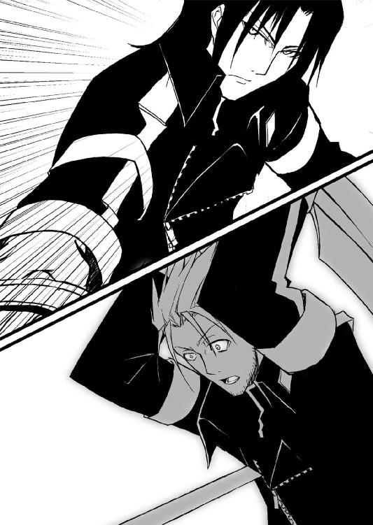
「死にたくなければ退くことね」
ディアンの首筋に剣を突きつけたのは、ヨルカだった。
「女王を連れ帰るかどうかはともかく、隊長にはトロンヘイムに帰って頂かないと、私が困るのよ」
「どういう心算だ？」
ディアンは霞んでゆく瞳で恋人を見上げる。
「私の任務はアラン隊長の監視。今、彼に亡命されることは、ハディング陛下にとって非常に面白くないことなの」
「......王が隊長を陥れる気だったことも、ウートガルトとの密約も、全て知っていたんだな？」
血に咽せながら、ディアンはヨルカを睨んだ。
「闇隊士である私が、どうしてこの作戦に参加したのか、少し考えれば分かったはずよ」
ヨルカは平然と答える。
「闇隊士は確かに金で動く。けれど、その忠誠心は、常に王家と十二人委員会にあるの」
「闇隊士であることを......捨てることはできないのか⁉」
悲痛な表情を浮かべるディアン。
「ベルトリューシュ家を簡単に見捨てられたあなたなら、トロンヘイムも捨てられるんでしょうね」
ヨルカは口元を皮肉げに歪ませる。
「だけど、闇隊士の長として、私はトロンヘイムを裏切れない。国を、国王陛下と十二人委員会を裏切ることは、即、里の滅亡を意味するのだから。私は里を守るためなら、あなたを殺すことさえ厭わないわ」
ザクッ！
ヨルカの小剣が、ディアンの太股に突き立てられた。
「本気よ、これで分かった？」
ヨルカは血溜まりに沈むディアンの頰を撫でると、イーファの方を振り返った。
「イーファ、邪魔をするようなら、他の隊士たちも斬り捨てなさい」
「で、でも！」
サキとヨルカを交互に見るイーファ。
「長としての命令よ」
「......はい」
イーファは唇を嚙み、小剣を逆手に構えた。
「隊長！」
ヴィスナはディアンの許に駆け寄ると、冷たくなってゆくその身体を抱きしめながらアランを睨む。
「ディアンは！ ディアンは、あんたのことを思って止めようとしたのに！」
「相手を斬る心算がないのに剣を抜く者は、当然、血の海に沈むことになる」
「このっ！」
ディアンの大剣を拾おうとするヴィスナ。
「止めろ！ お前じゃ相手にならねえ！」
その手首を握って止めたのは、満身創痍のアギだ。
「アギ、貴様も私に歯向かうか？」
と、アラン。
「いや。けど、あんたと行動を共にするのもここまでだ。ディアンは俺たちの仲間だ。仲間を斬る人間を、俺は隊長として認められない」
「隊長、あなたの選択は間違っています」
苦悩の表情を浮かべたロレルが頭を振り、ディアンを助け起こす。
「あらあら、いいお友達に恵まれたわね、ディアン」
冷やかすように肩をすくめるヨルカ。
「アラン、まず、ディアンさんの手当てをさせてください。それを認めてくだされば、私はあなたとともにトロンヘイムに赴きましょう」
オルウェンがアランの前に進み出て言った。
「......いいだろう」
頷くアラン。
「い、いい訳がないだろう！」
気を失っていたドーナラッハが起き上がり、女王を守ろうと剣を抜く。
「お前は黙ってろって」
ガシッ！
その後頭部を、またまたサキが蹴る。
「......ドーナラッハ、みなを下がらせなさい」
女王は地面に突っ伏した少年騎士に命じ、ディアンの傍らに移動して傷口に手をかざした。
「アールヒル・シャダイ。アールヒル・イフィル・セ・ミブラ・ティール・ウル・ヒベルニウム」
古代ヒベルニア語の召喚術の詠唱が始まる。
「ア・ナヴン・ウル・オルウェナ・セ・アクサンヤーナ・ファンタエイユ・セ・ウィタ・ア・ステアッハ・エナール・リック」
緑色の暖かな光が優しく傷口を覆うと、やがて、ディアンの身体に吸い込まれるようにゆっくりと消えてゆく。
「......どう？」
真っ赤に腫れた目で、か細い希望にすがるようにオルウェンを見るヴィスナ。
「助かるでしょ、ねえ⁉」
「強い生命力です」
オルウェンは頷くと、約束通りアランの方に向かって歩き出す。
しかし。
「やっぱりさ、君は行く必要はないよ」
アランとオルウェンの間にすっとサキが入り、飢魂の剣をアランの方に向けた。
「貴様に女王を守る理由があるのか？」
目を細めるアラン。
「ないね」
サキは認めた。
「だけど、九尾の猫は、僕やディアンや、みんなにとって、たったひとつの居場所だった。居場所を与えてくれたあなたが、みんなから、その大切な拠り所を奪おうとしてるんだ。僕は、そんなあなたが許せない」
「許せなければ、どうする？」
「あなたと僕は、剣以外に語るべき言葉を持たないんじゃないかな？」
サキは飢魂の剣を、アランの方に投げ返そうとする。
「返すよ、この剣」
だが、アランは頭を振り、これを拒む。
「遠慮は無用だ。たかが妖剣一振りで、貴様と私の実力の差は埋まりはせぬ」
「じゃあ、この剣は、あなたの胸に突き立てて返すことにする」
サキは腰を落とし、剣身が顔の横で地面と平行になるように飢魂の剣を構える。
と、その時。
『......サキ、止めろ。覚醒前のおぬしでは、〝調停者〟には勝てぬ。今は未だ、世界の運命を定める刻ではない』
内なる声が、狼狽の色を滲ませる口調で語りかけてきた。
「お前、最初にアランと戦った時には、止めなかったじゃないか？」
サキは暗殺者として初めてアランに逢った、雨の夜のことを思い出す。
『あの時は〝調停者〟に殺意がなかった。だが今、あの男を阻もうとすれば、おぬしは死ぬことになる』
「まあいいさ。あの時の決着、つけてないのが気にかかってたんだ」
微笑を浮かべたサキは、アランに向かって声をかけた。
「飼い主に捨てられた猫が、どんな牙を剝くのか見せてやる」
「......イーファ、サキくんを止めなさい」
命令するヨルカ。
「あなたなら、サキくんを止められる」
だが、イーファは脚が鉛にでもなったかのように、動くことができない。
「......できません。サキには......剣を向けられない」
俯いて頭を振るイーファの手から、小剣が落ちる。
「イーファ！」
「放っておけ。お前も手出しは無用だ」
アランはヨルカに告げると、剣を無造作に下段に構える。
次の瞬間。
サキは素早くアランとの間合いを詰めて、横薙ぎを放った。
キーン！
この一撃を、難なく払いのけるアラン。
「......多少は剣速も増しているようだな」
アランは呟き、攻勢に出ようとする。
と、その時。
突然、稲光を伴う暗雲が現われたかと思うと天空を覆い始め、グウェントは急速に暗闇に包まれていった。
やがて、この地方では数世紀に一度見られるかどうかの、大粒の雹が降り始める。
「陛下、お下がりください！」
ドーナラッハが、街門の下までオルウェンを避難させようとする。
「預言が......歪みを来しているの？」
深淵を思わせる空を見上げ、オルウェンは身を震わせた。
＊ ＊ ＊
同じ頃。
トロンヘイムの西、ヴァイマーヘン領の大公屋敷では、リネットが老家令とともに庭木の手入れに勤しんでいた。
「アランが帰る頃には、この花は咲いているかしら？」
竜胆の蕾に触れ、呟くリネット。
老家令は、その姿を見て微笑む。
だが、突然。
「！」
リネットは激しい悪寒を覚えて立ち尽くした。
「この感覚......まさか、アラン！」
「どうしたね、リネットさん？」
家令が声をかける。
「駄目......世界が......世界が歪んでゆく」
少女はそのまま芝生の上に崩れ落ち、全身を震わせた。
「リネットさん、しっかりなさい！」
家令が駆け寄り、リネットを抱き起こす。
「いけない、アラン。まだ、まだ早過ぎます！」
リネットは叫ぶ。
その傍らでは、何も知らぬ竜胆の蕾が静かに風に揺れていた。
＊ ＊ ＊
「前に殺り合った時より、大分腕は上がってるはずなのに......」
アランの連続攻撃を飢魂の剣で捌きながら、サキはいつの間にかジリジリと下がっていた。
すでに緋の衣を纏っているにも拘らず、だ。
「僕の間合いが取れない。......これが、アランの剣か！」
サキは街壁に足をかけて跳躍し、体重を乗せた一撃をアランの頭部に見舞おうとする。
「落下の速度というものは、本人が体感しているほど速くはない」
半歩下がり、サキの落下場所を正確に予想してアランは突きを狙う。
「跳ぶのは愚者の選択だ」
キンッ！
その剣先が頸動脈に触れる寸前、サキは鎬でこれを払い、アランの頭上を飛び越えて着地する。
「なるほど」
口元に笑みを浮かべるアラン。
「今の一撃は牽制。狙いは背後を取ることか？ 相変わらず、狡い手を思いつく」
「さすが......簡単に背中に回らせてはくれないか」
サキはつぶやく。
確かに今、サキはアランの後方に降り立ったはずだったが、サキが次の動きに入る前にアランは身を反転させていた。
いや、ただ身体を回したのではない。
身体の向きを変えながら、アランはさらに、次の相手の動きを見切るのに十分なだけの間合いを取っていたのだ。
目で動きを追うだけでは、不可能な反応である。
アランはサキを観察し、推理し、常に一歩先に反応しているのだ。
「本当にあんたは......僕をワクワクさせてくれる！」
サキは下段に飢魂の剣を構え、もう一度、アランに向かって走り出していた。
「サキ......」
アランとサキの戦いを見守りながら、イーファは何故か故郷のことを思い出していた。
イーファたちの生まれ育った里は、今、サキたちがいる荒野よりもさらに苛酷な環境の土地にある。
人口は百数十。人々の命を繫ぐものは、岩山の上に薄く堆積した土と、地下深くまで掘られた井戸からわずかに上がってくる水のみ。
毎年のように餓死者を出し、新生児の死亡率は八割以上。
闇隊士の収入のほとんどは、農耕に最低限必要なだけの土を購入するのに充てられる。
だが、そのような苛酷な環境ゆえに、里の人々は常人では考えられぬような強い抵抗力を持つに至った。
さらに、今よりも三百年ほど前。
時のトロンヘイム王レグネル一世が、里の人々の強靱な身体に目をつけ、血針を脊柱に打ち込むことで更なる異能を開花させることに成功した。
これが、今で言う血針の儀。
里の新生児はみなこの秘儀を受けるが、生き延びるのは年間でひとりか二人。
そして、この血針の儀でイーファに開花したのは、一世代にひとり現われるかどうかの特殊な能力。
里の者が〝祝福〟と呼ぶ、不死の力だったのだ。
幼い頃、姉に連れられて近くの岩山によく遊びに行ったイーファは、時折、結界の張られた岩の裂け目から聞こえてくる不気味な音に足を止め、竦み上がることがあった。
「あの声は何？」
裂け目の奥から聞こえてくる、風の共鳴とも、野獣の咆哮ともつかぬ音に、身体を震るわせる幼いイーファ。
「大丈夫よ」
そんなイーファを、姉は優しく抱きしめた。
「あの奥にはね、里のために尽くした立派な人が住んでいるの」
「人？」
「今は人の姿はしていないけれどね。あなたと同じ不死の異能を持ち、それを使って里のために働いた人。あの人は死なない身体だから、総ての任務を終えた今は、こうしてあの奥で休んでいるのよ」
「ずっと、休んでいるの？」
「ええ、ずっと」
不死の力を持つ者は、やがて、その再生能力が暴走し、人にあらざるものに変貌を遂げる。
イーファがそのことを知ったのは、それからかなり経ってからのことだった。
「あの人、それで幸せなのかなあ？」
姉の胸に顔を埋めて、イーファは尋ねた。
「もちろんよ、里のために尽くせたんだから」
姉は笑った。
「私はあなたが羨ましいわ、イーファ。もし、あなたの代わりに私が〝祝福〟を授かっていたら、もっともっと里のために働けるでしょ？」
剣術、格闘術、間諜技能、暗殺技能、語学や話術に、楽器、唄、舞。
何を取っても超一流で、ゆくゆくは闇隊士の長にと、十代半ばにもならない頃から言われてきた姉が、自分のことを羨ましいと言っている。
イーファはそれだけで少し、誇らしくなった。
だが、そう語った姉も、任務で片手片足を失い、今は半分死人のような状態で、里で暮らしている。
周囲の人々は姉を立派だったと褒め称えたが、その光を失った瞳には、里のために尽くしたことへの喜びの色はない。
「あなたもお姉さんのように、里のために尽くしなさい」
「あなたの能力は、里のためのものなのよ」
王都に来るまで、イーファはずっとそう言われ続けてきた。
そう、サキに出逢うまでは、里に奉仕する以外の生き方など、考えたこともなかったのだ。
「私は......里の所有物なのか？ 里のためだけに、生きていかなければいけないのか？」
イーファは呟き、小剣を拾い上げた手に力を込めた。
「さすが......圧されてる」
大粒の雹が降り注ぐ中、サキはいつの間にか、肩で息をしていた。
「では止めるか？」
アランの方は、まるでこれから戦いが始まるかのように、静かに呼吸している。
「こんな面白いことを⁉ あなたは僕を退屈させない！」
打ち下ろしから横薙ぎへと方向を変えるサキの剣。
「あなたと戦っていると、血が滾るよ！ 僕は今ほど、生きていることを実感したことはないね！」
「ふ、戦いの中にしか己を見出せぬ、と？」
目を細めるアランはこれを最小限の動きで見切ると、白刃を一閃させた。
「だが、それでは私には勝てない！」
剣はサキの頰をかすめ、パッと血が飛び散る。
「勝つ！ 絶対に！」
サキはもう一度跳躍した。
「愚かな。二度同じ手で来るとは」
同じように半歩下がるアラン。
「同じかどうか！」
サキは空中で甲外套を翻した。
風をはらんだ黒い外套が落下の速度を緩め、アランの剣は紙一重でサキの首筋をかすめる。
ギュン！
身体に捻りを加えながら、サキが放つ渾身の一撃。
「ふっ」
アランはこれを見切り、逆手に持ち替えた剣で受けた。
その瞬間。
（今だ！）
剣と剣とが打ち合わさったところを支点にして、サキは身体を捻る。
身を躍らせたサキは、今度こそアランの背後に着地した。
（取った！）
円を描くように左足を滑らせると、下段からやや斜め上に向けての横薙ぎが、振り返ろうとするアランの脇腹を襲う。
しかし。
キーン！
無造作に背に回したアランの剣は、まるで真後ろのサキの動きが見えていたかのようにこれを見事に撥ね返していた。
「まだ！」
低い姿勢からの三段突き。
「温いな！」
アランは悉くこれを鍔元で弾き、逆にその力を利用して、凄まじい速さの打ち下ろしをサキの肩に見舞った。
「ちっ！」
反撃は当然、予想していたサキ。
が、アランの一撃は、人間が反応できる限界を遥かに超えていた。
「甲外套！」
咄嗟に黒い外套をなびかせ、サキは白刃の破壊力を吸収させようとする。
だが。
ガッ！
アランの剣は甲外套を切り裂き、少年の肩に食い込んで鎖骨を断った。
「！」
噴き出す鮮血。
衝撃で意識が半分飛び、サキはそのまま仰向けに倒れる。
「......結局、とどかない......のか？」
サキは自分に近づいてくる足音を感じながら、笑みを浮かべた。
「聞かせろ」
アランはサキの上に屈み込んで尋ねる。
「その頭の中に巣食う邪妖は、どんな未来を貴様に見せた？」
「......多分、あんたとは別の未来。ま、どうでもいいさ」
目を閉じるサキ。
「では、覚悟を決めろ」
（ここで......預言が変わるか？ それとも......）
アランはゆっくりと剣を振りかざす。
と、その時。
「駄目！」
イーファがアランの前に飛び出し、両手を広げて立ち塞がった。
「退け」
アランはイーファに剣の切っ先を向けて命じる。
「嫌です！」
「もう一度言う、退け」
「嫌です！」
「下がりなさい、長としての命令よ！」
ヨルカも鋭い声で命じる。
「......もういい、イーファ」
出血に遠のく意識の中で、サキは告げた。
「ほんとに、いいんだ」
「そんなのは駄目だ！ 勝手に死ぬなんて、許さないからな！」
「......僕はもう......君を傷つけたくない」
「知ってる！ この馬鹿！ 相手を傷つけたなら、謝ればいい！ けど、死んだら、傷つけたって謝れないじゃないか！ だから、死ぬな！」
イーファはサキの上に覆い被さる。
「離れろ。......君も......斬られるぞ」
遠のく意識の中でサキは言った。
「構うものか！ 死なない身体だ！ 何度でも、何百回でも、君の盾になってやる！」
「......イー......ファ......」
少女の銀色の髪が、ハラリとサキの頰にかかる。
「......たとえ、君にとって私が必要な存在じゃなくても......。私には必要なんだ、君が。私のために......生きて......欲しいんだ」
イーファは、意識を失ったサキの髪を撫でると、キッとアランとヨルカを見上げる。
「里も、闇隊士も関係ない！ 私はたとえバラバラに切り刻まれても、サキを守るから！」
「......いい覚悟だ」
もう一度剣を振り上げるアラン。
しかし。
「！」
そのアランとサキたちの間に立ちはだかったのは、九尾の猫の面々だった。
「殺らせないよ、隊長。ううん、ディアンを傷つけるようなあんたは、もうあたしたちの隊長じゃない！」
ディアンの大剣を構えるヴィスナ。
「健気な恋人たちを見捨てるのは、僕の美学に反するんだよね」
ようやく意識を取り戻したトリストも駆けつけ、アギに支えられながら微笑む。
「隊長、済まない」
と、アギ。
「そいつは嫌味なくそガキだが、それでも九尾の猫の一匹なんだ」
「隊長、あなたが帰国しようとするのは他でもない、リネットさんのためでしょう？ ですが、それでも帰ることはお勧めできません」
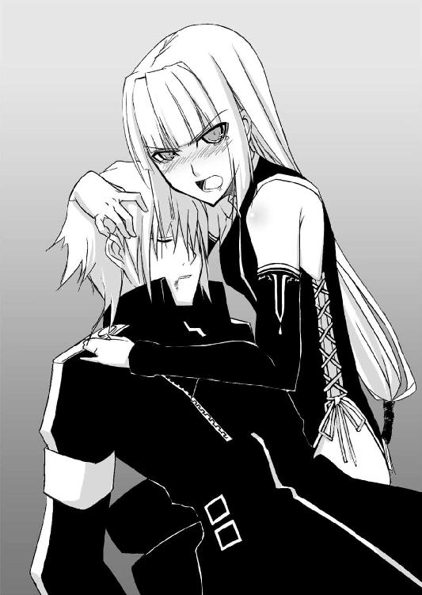
自分も婚約者を王都に残してきているロレルは言った。
「生きてさえいれば、リネットさんを取り戻すことはいつでもできます。だが、今、トロンヘイムに戻れば、あなたはハディングに殺される」
「約束なのだ、あの娘との」
雨の日に拾った華奢な少女に想いを馳せ、かすかに穏やかな表情になるアラン。
「......それでは、これ以上のお引き留めはしません」
ロレルは頷いた。
「どうやら、決別の時のようです」
「隊長さん」
気の抜けた調子でメヴィルが、アランに声をかけた。
「たった三人でってことになると、女王様を連れての国境越え、厳しいですなあ」
三頭の馬を曳いてきた副長は、既に逃げる準備を整えている。
「どうせ、成功するって思われてなかった作戦です。女王陛下は諦め、脱出に専念することをお勧めしますがね、隊長」
「......仕方あるまい」
アランはふっと笑うと、剣を鞘に収めた。
「イーファ」
意識を失っているサキを抱きしめる少女に、アランは白馬に跨りながら声をかける。
「そいつに伝えておけ。私は刻の終わりとやらに、もう一度、貴様と戦わねばならぬようだ。それまでにもっと強くなれ、とな」
少女が無言で頷くと、アランは荒野の地平線に向かって白馬を駆けさせた。
「それじゃな、短い付き合いだったけど、退屈はしなかったよ」
メヴィルは猫の一同を見渡してニヤリと笑うと、アランに続く。
「イーファ」
去り際に一旦、馬を止め、少女を振り返るヨルカ。
「闇隊士の任を解きます。......目をかけていたのに、残念だわ」
「......ごめんなさい」
声を震わせるイーファ。
「これからは自由に生きなさい」
ヨルカはかすかに微笑んで見せると、アランとメヴィルを追った。
しばらくして。
グウェントの街は悲しみの中、生き残りの市民たちの手により、消火と遺体の運搬に入っていた。
「......では、あのトロンヘイム人たちの処遇は？」
守護騎士ドーナラッハは、オルウェン女王から経緯を聞くと、顔をしかめた。
「あの方たちは、仲間と決別してまで街と私を守ってくださいました。もはや敵ではありませんよ」
「は、はい」
オルウェンは当惑するドーナラッハをその場に残し、九尾の猫の残党のところに歩み寄る。
「どうして......ですか？」
オルウェンは九尾の猫の面々を見渡して尋ねた。
「どうして祖国を捨てて、敵国の女王を？」
「さあな」
壁に寄りかかり、身体をようやく起こせるようになったディアンが頭を振る。
「ただ、無性に腹が立った。それだけのことだ、気にしなくていい」
「で、あたしたち、これからどうするの？」
市民が自分たちを遠巻きにしているのに気がつき、ヴィスナが聞いた。
「う～ん、そこまで考えてなかったよねえ」
「お前が何か考えてるなんて、誰も思っちゃいねえよ」
腕組みをするトリストの脛を、アギは軽く蹴る。
「とりあえずはここを出て、国境まで逃げ延びましょうか。その後は、まあ、各々自分の生きたいように生きるということで」
ロレルがそう言うと、一同は頷いた。
「待ってください、みなさん！」
馬を曳いてこようとするヴィスナたちを、オルウェンは引き留めた。
「あの......こ、これからも、ヒベルニアに留まってはもらえないでしょうか？」
「はあ？」
当惑の表情で振り返る一同。
「その......受け入れて頂けるというのなら、拒む理由もありませんが？」
と、ロレル。
「サキ、お前はどうする？」
並んで座らされ、イーファの手当てを受けているサキに向かって、ディアンは尋ねる。
「......この国にいれば」
サキは少し考えてから答えた。
「もう一度、隊長と......アラン・シーヴァルドと殺り合えるかも知れない。僕はここに残ってもいいよ」
「お前は？」
今度はイーファを見るディアン。
「私は......仕えるべき国を失い、従うべき長を失い、帰るべき里を失ってしまった」
イーファはそう言うと、サキの足元に跪いた。
「闇隊士は仕える者なしには生きられないから。サキ、わたしは君......いえ、あなたに仕えたい」
「な、何で僕なんだよ！」
思ってもいなかった言葉に、サキは息を吞む。
「......一緒にいたいから」
心細げな声。
「嫌か？」
「そうは言ってない！」
サキは助けを求めるように、仲間たちの方に目を遣った。
「ロレル！ ヴィスナ！」
「君にはやはり、歯止めになってくれる人が必要ですよ」
ロレルは微笑む。
「ほれほれ、逃げるのは男らしくないぞ」
ヴィスナはサキの額を指で弾く。
「俺の知ったこっちゃねえな」
と、嘯くアギも、心なしか面白がっているような顔つきだ。
「ある意味、うらやましいよね～。これでサキくんは、あんな可愛い子を自分の思うがまま......」
ニヤつきながら、ヴィスナの肩に手を回すトリスト。
「黙れ、この変態！」
ヴィスナのこぶしが、半死半生のトリストのあごを捉えた。
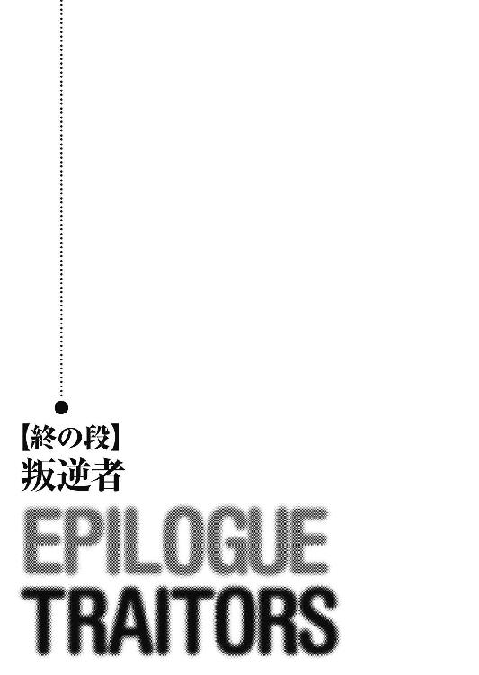
「さてと、これからどうしますかねえ？」
ヒベルニアからトロンヘイムへと続く街道。
馬上のメヴィルは、隣で悠然と馬を進めるアランに話しかけていた。
「トロンヘイムに帰るのはいいんですが、ウートガルト軍に喧嘩売った手前、共和国経由で戻るって訳にはいかんでしょう。かといって、北の国境を目指すとなると、ヒベルニアとトロンヘイムの最前線を通過することになる」
あごに手をやるメヴィル。
「頭が痛いことですなあ」
それを見たヨルカは、かすかに笑みを浮かべた。
「殿下、安全に帰国できる抜け道をお教えいたしましょうか？ ......格安の二千ダカットで」
「おいおい、あんた、ハディング王の命を受けた監視役なんでしょ？ この上、さらに隊長さんから儲けようっての？」
メヴィルは呆れ果てたと言わんばかりの表情をする。
「商売の機会は逃さない質なの」
ヨルカは言ってのけると、アランにウインクをした。
「何なら、払いは帰国後で構いませんけれど？」
「せいぜい千だな」
アランは答える。
「どのみち、監視役のお前は、私と行動を共にせねばならん。戦場を突っ切るような破目になれば、自分も困ることになる」
「最近、随分と倹約家になられて......」
ガックリと肩を落とす真似事をしてみせるヨルカ。
その陽気な仕草の裏にある深い悲しみに、アランは気づいていた。
「......いいのか、ディアンのことは？」
「愛する気持ちが強ければ強いほど、裏切られた時の憎しみは強くなるもの」
ヨルカは目を細める。
「再び、彼が私の前に姿を現わした時、待っているのは熱い抱擁か、それとも命のやり取りか......楽しみですわ」
「怖え女」
メヴィルは呟くと、アランを咎めるような目で見る。
「......隊長さん、あなた、最初っから猫の面々を、この国に残らす心算だったんでしょ？ 女王を連れ帰るなんて、理不尽なことを言い出したのもそのためだ。それに、ディアンへの一撃も、急所を外したものだった」
「トロンヘイムに帰れば、あの連中も無事では済むまい」
アランは頷く。
「私のために、彼らが命を危険に晒すことはない。改めて問うが、お前は何故、私について来た？」
「近場で見極めてみたいんですよ。アラン・シーヴァルドって御仁の、行き着く先をね」
「貴様も相当の変わり者だ」
「この隊長にして、この副長あり、ですな」
ニヤリと笑うメヴィル。
「帰るぞ、私の国に！」
沈み行く夕陽を背に右腕を高く掲げ、アランは馬の腹に拍車を当てた。
「では、ご一緒に」
「お供しますわ」
メヴィルとヨルカが後に続く。
血のような赤に染まる空。
その下で三頭の馬は、蹄を蹴立て、乾き切った大地に長い影を描きながら、遥かなる母国トロンヘイムを目指すのであった。
＊ ＊ ＊
一か月の後。
聖王都に程近い小さな丘の上にサキは寝そべり、ぼんやりと、流れる雲を眺めていた。
「......また、ここに？」
頭の近くで声。
「また、君か......」
サキはそちらの方を見ようともしなかった。
「邪魔をしたか？」
「って言ったら、帰る？」
イーファは黙って頭を振ると、サキの左隣の左に横たわり、並んで空を見上げる。
蒼い空には、真綿を千切って投げたような雲が静かに流れ、たくましい翼を持つ小長元坊が眼下の世界の全てが自分の王国であるかのように、ゆっくりと見回るように旋回している。
「......ディアンたちは？」
しばらくして、サキは聞いた。
「任務」
イーファは答える。
「不思議だな。この前まで敵だった国で、みんな、前と同じようなことをしているなんて。名前だって〝九尾の猫〟のままで」
違っているのは、隊長と副長が、本人たちの意思を無視し、残る隊士全員の賛成でディアンとロレルになったこと。
そして、オルウェンの願いで、ドーナラッハが一員に加わったことだ。
「ま、ああいうガサツな人たちには、他にできること、ないからさ」
「サキは？」
「......女王陛下直属の親衛隊士、か。響きは悪くないかもね」
サキは上半身を起こして背伸びをする。
「けどさ、僕、嫌われてるんだよな。あのドーナラッハに」
「当たり前だ。君はあの坊やのことを六回もド突いている」
「四回は蹴りじゃなかったっけ、確か？」
「でも、ドーナラッハは私たちを信用しようとしない宮廷の人たちを必死になって説得してくれた。悪い坊やじゃない。......ただ、堅物な上に、単純なだけで」
「まあね。けど、馬鹿は悪人より質が悪いかもよ。......で、君はどうするんだい？」
「言ったはずだ。サキに仕えている、今も」
「だから、僕は認めてないって」
「私がどうするかは、私が決めることだ。君の意思とは関係ない」
「何だよ、それ」
このところ仏頂面が続いていたサキの口元が、かすかに緩んだ。
「サキ」
瞳を閉じたイーファは、頰に当たる草の葉の感触を楽しみ、その香りを胸いっぱいに吸い込んでから尋ねた。
「私は......いつか人としての姿を失い、醜い肉塊と化し、闇に囚われて永遠に生き続けなければならない」
イーファの指が、躊躇いがちにサキの手に触れる。
「そうなったところを、私は君に見られたくない。その時が近いことが分かれば、私は君の前から姿を消す。だから、それまでは......身勝手な願いかも知れないけど......そばにいさせて欲しい」
「別にそうなるって決まった訳じゃない」
サキは頭を振った。
「いや、運命は......変えられない」
答えるイーファの表情には、自己憐憫も自嘲もない。
そこに見えるのは、ただ、安らかで静かな諦観だけだ。
「きっと、方法はあるさ」
自分に言い聞かせるように呟くサキ。
そして、空を舞っていた小長元坊が、獲物でも発見したのか、羽を折って急降下し始めた時。
（......あった。ひとつだけ、方法が）
サキの心の中で幾つかの事実が、突然、ひとつに結びついた。
（気がついたか。あの娘の運命を変えるためには、おぬしが己の運命を受け入れねばならぬということに。永劫の闇の中で苦しみ続けることから小娘を救うには、世界自体に安らかなる死をもたらすしかない。全てを無に帰すしかないのだ）
内なる声が、口を借りずに、直接、サキの心に語りかける。
（そうみたいだね）
同意するサキ。
「分かったよ。僕はそのために......世界を滅ぼす」
「......何か言ったのか？」
イーファが、サキの顔を見る。
「いや、何でもないよ」
サキは微笑みながら、そっとイーファの銀色の髪を撫でた。
あとがき ＰＯＳＴＳＣＲＩＰＴ
子供の頃、スナフキンになりたかったんだよなあ......。
......お待たせしました。
９ ＴＡＩＬＳ Ⅱです。
実はもともとこの第二巻、第一巻目の後半部分でした。
最初に一巻目の原稿を仕上げた段階で、あまりにも長くなり過ぎてたんで、半分に切って後半を第二巻として出すことにしたんです。
ほんのちょっとエピソードを追加すりゃいいや、余裕、余裕、と思って取りかかったこの巻でしたが。
......ああ、ここも直さにゃいかん。
......こっちも違うだろ。
ここは全面的に書き直し。
こっちはカット。
っと、リネットの登場シーン増やさないと（担当のＨさんとイラストのシンゴさんがリネット派なもんで）。
となると、バランス的にサキとイーファのシーンも。
てな感じでやってるうちに、たちまち数か月。
こ～んな分厚くなってしまいました。
......その分、戦闘シーンやラブシーンも増えたので、勘弁してね。
ところで。
このシリーズを始める時に、スペインに取材（......遊びじゃないぞ、あくまでも取材）に行ってきました。
ミステリー文庫でやっている『ＳＨＡＤＥ』シリーズの取材も兼ねて。
今回はあちこち飛び回るんじゃなくて、二、三の街にじっくり腰を据えての取材です。
マドリッド
最初の宿泊地、首都のマドリッドでは、プラド美術館やブックフェアにも行ったけど、一番見たかったのは、王宮の武器庫と薬局（こっちは某学習誌の連載絡み）。
フラッシュは禁止だけど、写真撮影自体は自由なので、デジカメで山ほど甲冑（子供用や犬用の鎧まであったりする）やら、武器の資料を撮ってきました。
あと、蠟人形館があって、そこにも行ったんだけど......スペインの歴代の王様を並べられても、顔、似てるのかどうか、分からないよなあ。
この街で一番驚いたのは、実はゲーム・ショップ。
ショウ・ウインドウに、ファンタジー風のコスチュームを着せたマネキンが飾ってあるんだけど、これが耳の尖ったエルフのマネキン。
エルフのマネキンがある街って一体......。
トレド
次に行ったのが、三方を川に囲まれた城塞都市トレド。
坂の多い、入り組んだ石畳の道と、街の中心に聳える大聖堂と王城アルカサール。
メスキータと呼ばれるイスラムの寺院に、ユダヤ教会までもが狭い旧市街の中に存在する歴史の街。
この巻に登場する、グウェントの街のモデルはここです。
マドリッドのデパートでドラゴンの置物や城の模型（資料ですよ。あくまでも資料......）を買ったので、ここでは絶対に買い物は止そうと思ってたのに。
買ってしまいましたよ、剣。
トレドって言えば、やっぱり剣だもの。
刃のついているヤツだと持って帰れないから、もちろん、レプリカだけどね。
ちなみに、作者が剣を買った店、金細工の象嵌のアクセサリーも扱っているんだけど、後日、金細工職人がいる店として、ＮＨＫの『美術館紀行』に出てきました。（もちろん、作者も金細工を作っているところ、見学しましたよ）
セゴビア
ローマ時代の水道橋があることで有名なセゴビア。
ここはマドリッドからバスで一時間ほどの距離にある、小さな中世都市です。
街の一番の名所、水道橋の近くには、豚の丸焼きを出す有名なレストランがあって、その店の外観が、中世の雰囲気をそのまま残している感じ。
今回の旅で、最も気に入った風景のひとつでした。
この街には、黒魔術博物館があるんだけど、生憎、この時は休み（本当はこれが一番見たかった！）。
代わりに城を見学しました。
セゴビアの城は、何でもディズニーの『白雪姫』に登場する城のモデルになったヤツだそうで、これも結構参考になったかも。
目が眩むほど深い堀。
当時そのままに残る、大砲や鎧や武具の数々。
天蓋付きの寝台や家具、古びたタピストリー。
分厚い壁に鋭角的に刻まれた矢狭間。
そして、すれ違うのがやっとの、暗くて狭くて急な螺旋階段。
この螺旋階段を実際に登ってみて（塔に上るのに、城の見学料とは別料金を取られたけど）、ハリウッドの昔の映画みたいに、螺旋階段で戦ったりするのは無理だってことを実感。
だって、戦おうとしたって、お互い、武器がとどかないんだもん。
槍みたいな長柄の武器は確実に突っかえるし、階段の上側にいる人間が、下方の人間に向かって剣を振り下ろしても、相手の頭に剣がとどかない。
......しゃがめばとどくだろうけど、絵的にはすごく格好悪いよね。
結局、この旅行で撮った写真は数百枚。
買った資料は数十冊。
経済状態、ほぼ壊滅......。
まあ、こうした取材の成果、この９ ＴＡＩＬＳに出ればいいんだけど。
そこらへんは、次の巻に乞うご期待、ということで。
付記
最近、ちょくちょく秋葉原の『武器屋』という、剣や甲冑類のレプリカを扱う店に顔を出すんですが......。
ここだと、スペインの三分の一ぐらいの値段で剣が買えたりするんですよ。
わざわざ、剣のためだけにスペインに行った作者としてはかなり複雑な気分。
......って、ほんとは取材じゃなかったこと、バラしてんの。
9 TAILS II
─ナイン・テイルズ 聖巫女の預言─
南房秀久
平成25年10月3日 発行
発行者 佐藤 忍
発行所 株式会社ＫＡＤＯＫＡＷＡ
〒102-8177 東京都千代田区富士見2-13-3
03-3238-8745（営業）
http://www.kadokawa.co.jp/
企画・編集 富士見書房
03-3238-8585（編集）
http://www.fujimishobo.co.jp/
(C) 2005 Hidehisa Nanbou, Shingo
本電子書籍は下記にもとづいて制作しました
富士見ファンタジア文庫『9 TAILS II ─ナイン・テイルズ 聖巫女の預言─』平成17年11月25日初版発行
平成18年2月1日再版発行